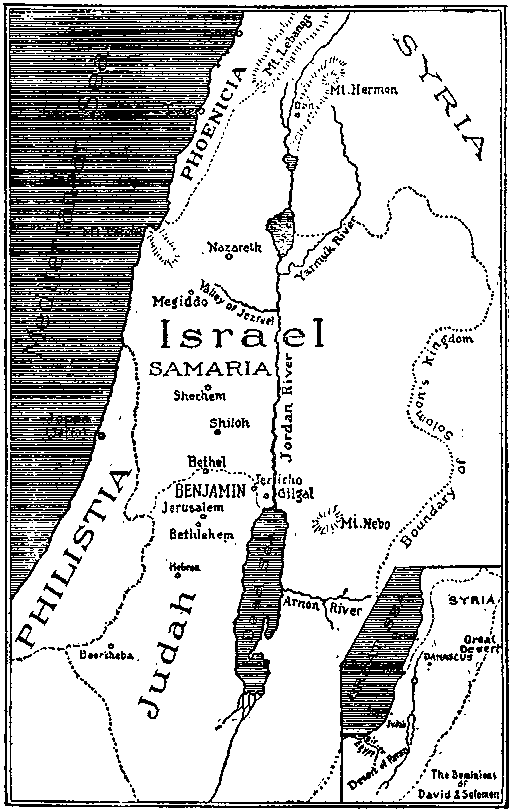
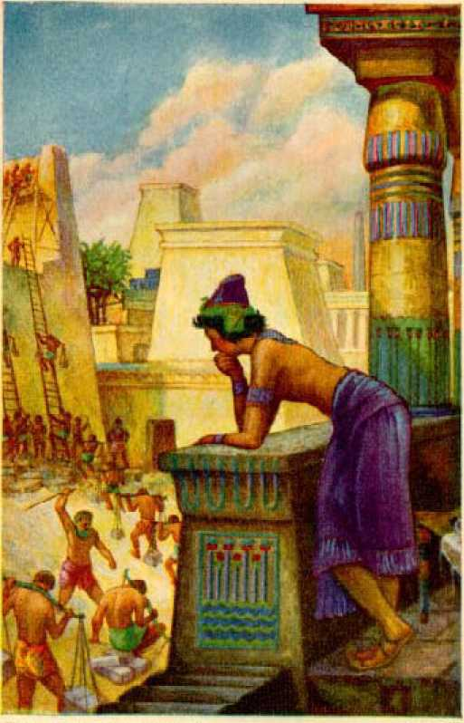
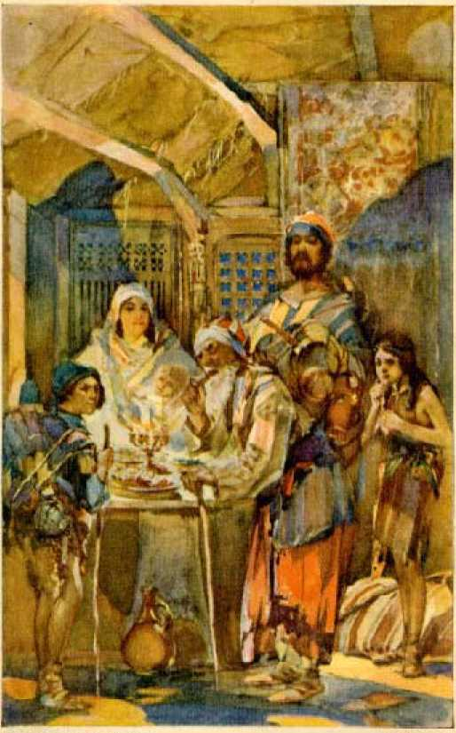
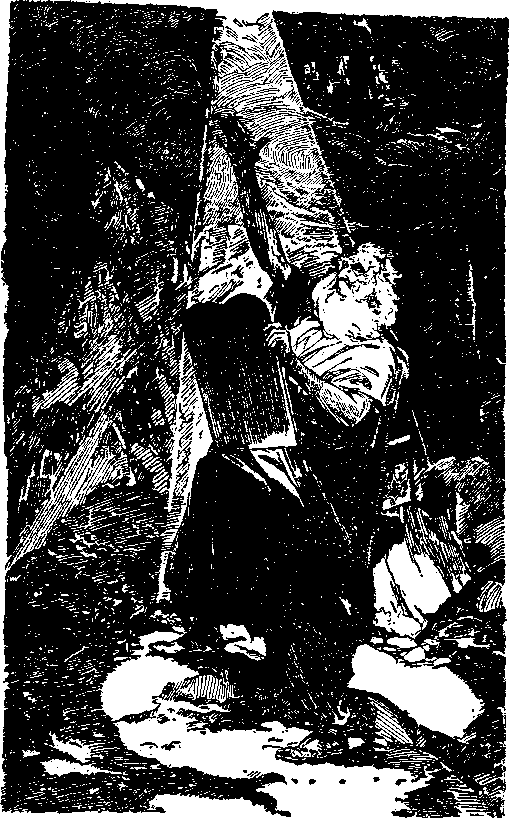
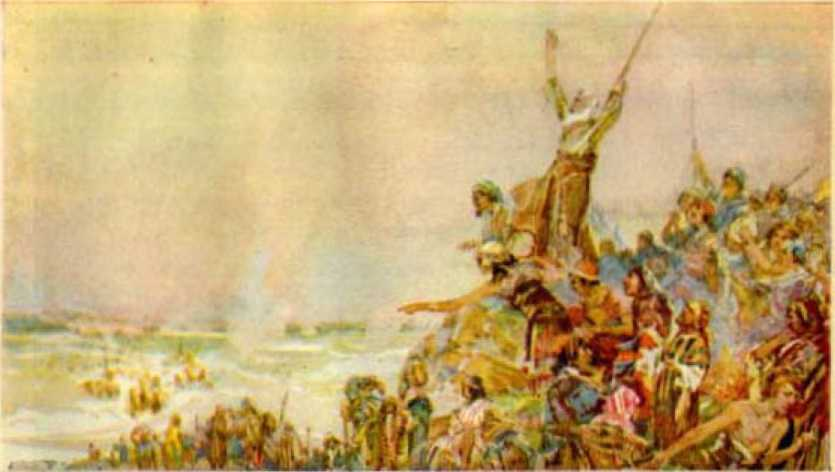
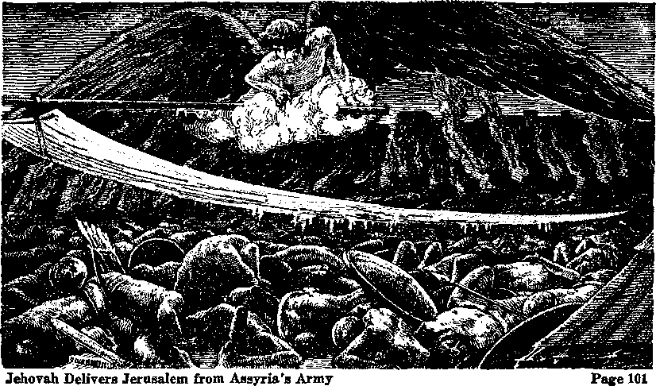
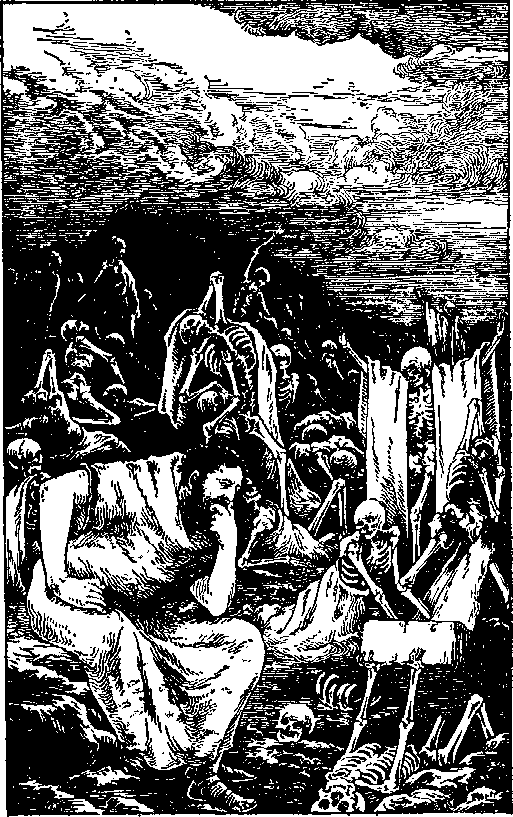
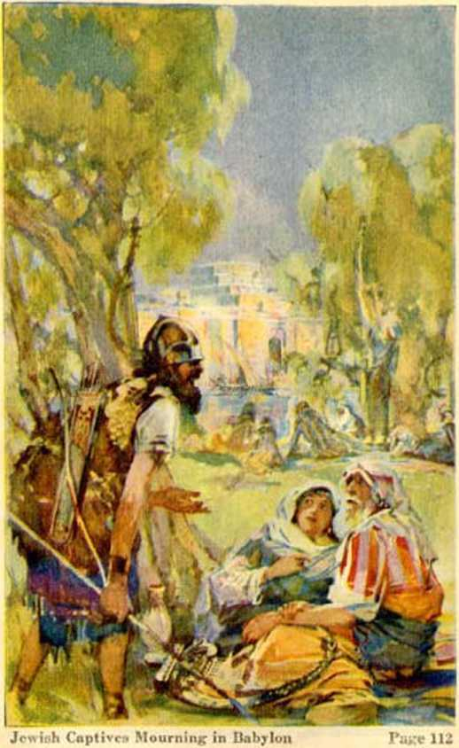
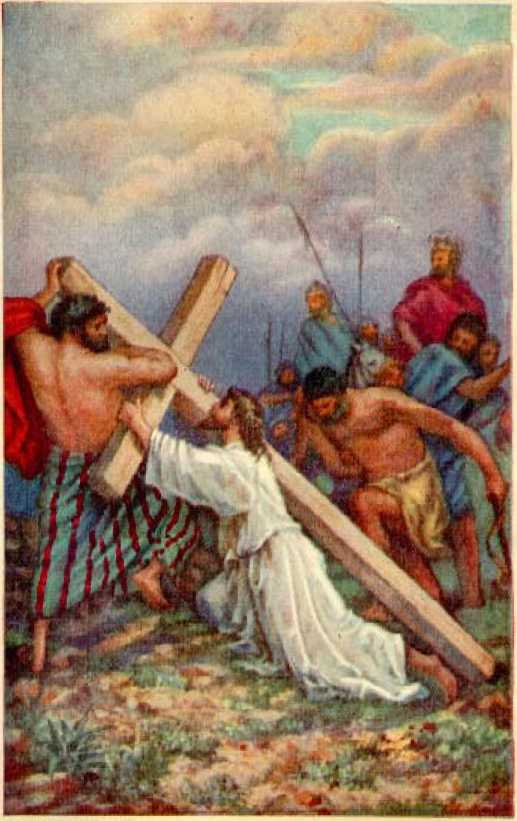
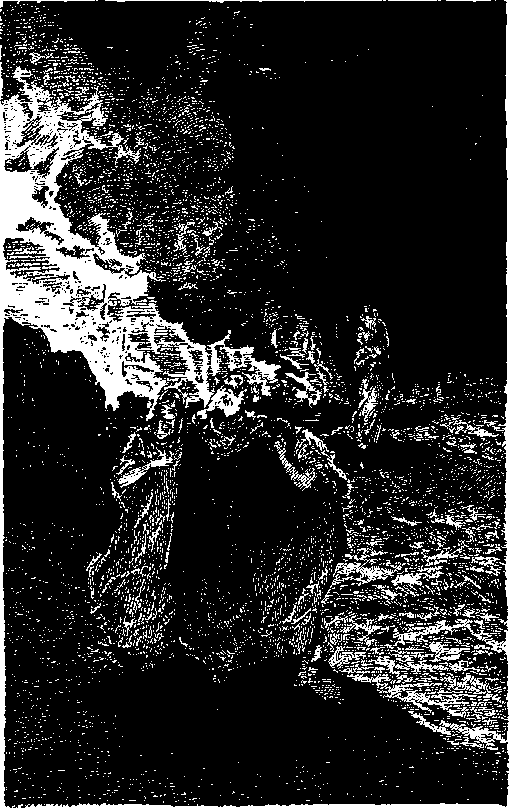

Comfort Ye My People
Page 13
LIFE
The
infallible proof from the Word of the Creator that he has provided the way for man to enjoy everlasting lifeupon earth, and that the earth is to be transformed into a paradise.
By J. F. Rutherford
The Harp of God Government Creation
Author of
and other books
Reconciliation Deliverance
Hell
1,000,000 Edition
Publishers
International Bible Students Association Watch Tower Bible and Tract Society
Brooklyn, New York, U.S, A.
London, Toronto, Sydney, Cape Town, Berne, Magdeburg,
To
JEHOVAH GOD
The Gracious Giver of Life Everlasting
This Book Is Dedieated
“The gift of Qod is eternal life, through Jesus Christ our Lord.”
Copyrighted 1928 by J. F. Rutherford
Made in U.S. A
FOR centuries man has searched for the fountain of eternal youth that he might for ever enjoy health, peace, and endless happiness. That great secret has ever been with Jehovah God. His time has come to reveal it to man, and to open to the vision of all who desire to know, the way to everlasting life on earth. Jesus said: “This is life eternal, that they might know thee the only true God, and Jesus Christ, whom thou hast sent.” This proves that knowledge of the way of life is necessary. This book is written to enable men to obtain that priceless knowledge. The great secret treasure of the truth is in the Word of God, and the student must find it there. The pages that follow will enable the reader to loeate it.
Job is an outstanding character of the Bible. The book bearing his name has long been a mystery, to be understood only in God’s time. Herein the prophetic words of the Book of Job are placed alongside of the facts which are known to exist, and the student is thereby enabled to see the meaning of that book.
If mankind can be restored to perfection of body and mind, and live for ever on earth in prosperity, health, peace and happiness, then all the difficulties that beset the world will be solved. Such are the blessings that God is now 7 opening to man. Life by redemption and restitution is God’s way, and therefore the only way, for man to live for ever. Every man must be brought to the knowledge of that fact. Parents owe it to themselves and to their children to obtain that knowledge. It is within the reach of all
The Author
PUBLISHER’S PREFACE
THIS book is not propaganda. It is no part of a propaganda scheme. Its pages contain facts of vital importance for the edueation of the people. The reader is not asked nor expected to join anything. He is not asked for nor expected to contribute money. The facts are laid before him to enable him to see God’s way, and therefore the only way, for man to obtain life everlasting on the earth.
Jehovah God made this earth for man, and made man for the earth. He alone can and will give man everlasting life on earth. This book brings to the attention of the reader God’s gracious provision for man. The proof set forth herein shows that God’s due time has come for man to understand and know the way to life.
This is not a religious book. It tears the mask from hypocrisy, tradition and formalism, and sets before man the truth. When you read it you will be able to understand it, and you will be glad. With full confidence that it will lift great burdens from the oppressed and bring joy to the sad, it is sent forth.
The Publisher
[BLANK]
[BLANK]
LIFE
RESTITUTION
Solomon Isaacson had eighty years of life’s journey behind him. He had traveled a stormy pathway. His body was bent from years of toil and suffering. His hair was as white as the driven snow. His long flowing beard somewhat concealed his sunken chest. The old man was seated on the front porch of his humble home, reading from a well-thumbed copy of the Hebrew Scriptures. Occasionally he would speak to his faithful wife Rebecca of some text relating to their ancient fathers. At one time Isaacson and his good wife had made a long journey to the holy city, and there with others of their people mingled their tears before the wailing wall built of stones which it is supposed that Solomon the Wise caused to be quarried. Like others of their race, these two had a desire and held some hope that the time would come when their people might again possess the land of promise.
The front gate to the yard of this humble home stood ajar. The gravel pathway leading to the house was flanked on either side by sweet-scented flowers that bloom early in June. The dewdrops of the morning still lingered on the 13 petals of the roses, and the humming-birds flitted about gathering the nectar from the blossoms of the honeysuckle; the song birds, perched on the evergreen trees that grew in the yard, warbled their happy morning songs. The scene was simple, but pleasant and inviting. A young man walking that way quickly took in the situation, entered the gate and walked briskly to the house, greeting the old man, as he approached, with a broad smile and a cheerful “Good morning”. The old man returned the greeting, but with sadness in his eye and pathos in his voice.
“Reading the good Book, I see,” said the young man. “I hope you find much joy in so doing on this beautiful June morning.”
“Joy?” responded the old man. “No, sadness rather. I have just been reading from the Ninetieth Psalm to my good wife Rebecca. These words were written long ago by Moses. They were sung by him as a prayer unto Jehovah, and their sound is that of a dirge. I remarked to Rebecca how well did Moses describe our condition. Young man, you are now in the vigor of youth, but some day you will grow old and you will look like you now see me. Young men should be instructed in the Scriptures. Let me read to you these words of wisdom from Moses that you may have them in mind in days to come. Concerning men Moses wrote: Tn the morning they are like grass which groweth up. In the morning it flourisheth, and groweth up; in the evening it is cut down, and withereth.
For we are consumed by thine anger, and by thy wrath are we troubled. Thou hast set our iniquities before thee, our secret sins in the light of thy countenance. For all our days are passed away in thy wrath; we spend our years as a tale that is told. The days of our years are threescore years and ten; and if by reason of strength they be fourscore years, yet is their strength labour and sorrow; for it is soon cut off, and we fly away.’ Ps. 90: 5-10.
“But,” said the young man, “please read also verse three, and then verses twelve to seventeen, of that same prayer of Moses, and find some consolation and hope therein. May I read them to you? ‘Thou turnest man to destruction; and sayest, Return, ye children of men. So teach us to number our days, that we may apply our hearts unto wisdom. Return, 0 Lord, how long? and let it repent thee concerning thy servants. 0 satisfy us early with thy mercy; that we may rejoice and be glad all our days. Make us glad according to the days wherein thou hast afflicted us, and the years wherein we have seen evil. Let thy work appear unto thy servants, and thy glory unto their children. And let the beauty of the Lord our God be upon us; and establish thou the work of our hands upon us; yea, the work of our hands establish thou it.’ ”
“Young man, seeing that you are a Gentile and of tender years, by what means do you understandingly consider the word of the ancient Moses ?”
“From the door-plate I perceive that you are Mr. Solomon Isaacson. Please, Mr. Isaacson, do not think it rude for one of my youth to speak to you whose head is hoary and whose years have brought you wisdom. I assure you that I speak not my own learning and wisdom, but I repeat only the words of him in whom is all wisdom. Jehovah is the God of your fathers. He is the God of Abraham, Isaac, Jacob, Moses, David, and Solomon the Wise. In the words which you have just read is expressed the wisdom of Almighty God. You will recall that David said: ‘The spirit of the Lord spake by me, and his word was in my tongue.’ (2 Sam. 23: 2) By the same power did Moses speak and write the words which you have just read. The spirit of the Lord God is his power invisible to human eyes. He exercises that power over men at will, and causes men to write as God wills they should write. That is what I understand David to mean when he said that the spirit of the Lord was upon him. Without doubt Moses, at the dictation of Jehovah God, gave utterance to the prophecy of God’s purpose concerning man. The due time must come when that prophecy must be fulfilled and when man shall understand its meaning. Otherwise there would be no occasion to record such a prophecy. The facts seem to prove conclusively that God’s due time has now come for the prophecy to be fulfilled and for men to understand that and other like prophecies, and the proper understanding thereof must bring joy to man. For this reason I expressed the hope that you are receiving joy from reading the Scriptures.
“If God would use Moses and David to write down the prophecies, it is reasonable to conclude also that he would use other men to record facts which have actually come to pass, and which mark the fulfilment of those prophecies. In neither instance is the prophecy or the record of its fulfilment the expression of man’s wisdom. By prophecy God has foretold what in his due time shall come to pass concerning man. When events do come to pass, and those events or facts exactly fit the condition described in the prophecy, then we are entirely justified in concluding that we have come to the time of the fulfilment of the prophecy. The fact that the Hebrew people were so long the exclusive custodians of the Scriptures, and the further fact that they and the Gentiles have read the Scriptures with much interest and profit, is proof that God intends men to have consolation by reading them.
“The Psalm which you have just read is a prophecy. Therein Moses has stated, in substance, that God turns man into death and then says to man: ‘Return, ye children of men.’ ‘Return,’ whence and to what? we may properly ask. It was life that man had and lost, and the return mentioned must be the return from death to have life restored to man. Then the prayer of Moses is, that God would repent or change his course of action concerning man. That could mean only that God would bring man out of death and lead him in the way of life everlasting. All these centuries man has been going into death. From this statement of Moses we must conclude that God will return man from that condition. That such is the hope expressed is shown by the words of Moses in verses fourteen and fifteen: ‘O satisfy us early with thy mercy; that we may rejoice and be glad all our days. Make us glad according to the days wherein thou hast afflicted us, and the years wherein we have seen evil.’
“The ‘mercy’ of God, when duly exercised, would mean that the ‘wrath’ of suffering and death would cease, life be given, and that thenceforth man would rejoice and be glad for evermore. From the words of Moses, namely, ‘Let thy work appear unto thy servants, and thy glory unto their children,’ it must be understood that the work of God will lift man out of death and restore him to life, and that would bring joy unto his faithful servants and glory to their children.
“If you were now assured that you would cease from your suffering; that you would be restored to the days of your youth; and that your flesh would become fresher than a child’s, you would greatly rejoice, I am sure. I perceive that you are a believer that the Scriptures, as recorded, constitute the truth, which is the Word of God. May I remind you that Job wrote these words: His flesh shall be fresher than a child’s: he shall return to the days of his youth: he shall pray unto God, and he will be favourable unto him; and he shall see his face with joy: for he will render unto man his righteousness.’ (Job 33:25,26) Surely Job also spoke a prophecy at the dictation of Jehovah. Undoubtedly it was for that very happy condition that Moses prayed as the record of the Psalm, which you have just read, shows.
“I perceive that you believe that the Scriptures are the true Word which comes from Jehovah God through his prophets. The fact that you have thumbed over that Bible so much is proof that you do so believe. Just as certainly as God caused Moses and Job to write concerning his purpose of returning man from death and giving him the blessings of youth, health and life, just that certainly God will perform that great work. You will recall that God caused another of his holy prophets to record his purposes in these words: ‘So shall my word be that goeth forth out of my mouth; it shall not return unto me void; but it shall accomplish that which I please, and it shall prosper in the thing whereto I sent it.’ ‘I have spoken it, I will also bring it to pass; I have purposed it, I will also do it.’—Isa. 55:11; 46:11.
“I also beg to remind you that God caused his holy prophet Daniel to make a record that the time would come when there would be a great increase of knowledge amongst men, and that then those who diligently and honestly seek to understand the truth will understand it. To enable man to determine, from things that appear to him daily, the time of the fulfilment of that prophecy, God further caused Daniel to say that then there would be a great running to and fro as well as increase of knowledge. (Dan. 12:4,10) That we are now living in that very time is certain. It is hardly necessary for me to mention to you the fact, because you know that the means of rapid transit today were never dreamed of even in the days of your early youth. Surely the men who operate these machines of rapid transit, and who make them, were never as wise as Solomon. Why, then, did not Solomon, or some men living at the same time, have in operation these wonderful means of rapid travel? The only answer is, that it was not then God’s due time. The due time has now come, and these things speak to us; and so the time has now come for the fulfilment of truth and for those who see and understand to rejoice. Books are now published setting forth the facts as they are coming to pass, and by applying these facts to the prophecies, it is thereby proven that the due time has come to understand the Scriptures. Such is the source of my knowledge concerning which you have inquired. My joy is great because I am permitted not only to understand these marvelous truths but also to carry them to others, and thereby enable sad hearts to be made glad. It is a real joy for the people to learn that Jehovah is the great God of justice and love, and that all blessings proceed from him. If the human race is to be lifted out of suffering and death and to return to life and happiness, that is the best news that could be brought to man.
“Restitution means to restore that which was once possessed and for good reason was lost. Only the one who gave, and who took away that which was possessed, can again restore it. Job, writing under inspiration from God, said: ‘The Lord gave, and the Lord hath taken away; blessed be the name of the Lord.’ (Job 1:21) In his own due time and good way God will give man the full opportunity for restitution blessings. Moses wrote the words: ‘From everlasting to everlasting, thou art God. Thou turn-est man to destruction; and sayest, Return, ye children of men.’ Undoubtedly the meaning of those words is that for a good reason God sent man into death, and that in due time he will bring man back from death. To ‘return’ means that man will come back to his former estate. This must be the divine rule, because the Scriptures so announce it. The fact that such is the divine rule means that in due time it will apply to all men, because God is no respecter of persons.
“Restitution is the great boon for humanity. It must include those who are dead and those who are in a dying condition. Look at those beautiful flowers blooming in your front yard. A few months ago the winter season was on, and even the bushes appeared to be dead. Then the spring time came and they revived, put forth their leaves, and the flowers bloomed. That aptly illustrates the condition of humankind. There has been a long dark and dreary time of winter during which billions of human beings have died, and other billions are on the way to death. The winter season of death is ending. The spring time of God’s plan is at hand, and the time is therefore here for the people to awake to the blessings which God has in store for them. Both Jews and Gentiles must now rejoice that Jehovah is the only true God, and that from him life must proceed. He is the great Life-giver. How are men to be guided in the right way? God’s prophet wrote: ‘Thy word is a lamp unto my feet, and a light unto my path.’ (Ps. 119:105) That means, then, that man must read understandingly the Word of God, and follow as he directs.
“It seems quite clear that God did not intend His Word to be understood until his due time, and that, as Daniel stated, when the due time comes, it is the wise who understand. (Dan. 12:10) A wise man is he who honestly and earnestly searches for the truth in God’s Word, and then fashions his course of action accordingly. His knowledge must come from the Scriptures and the physical facts in fulfilment thereof; and then if he is wise he will order his course in that way. Is not that according to the rule that Moses announced in his prayer? ‘So teach us to number our days, that we may apply our hearts unto wisdom.’ (Ps. 90:12) When the due time arrives, those who would understand must study God’s Word and use all the helps that the Lord God has provided for them to understand. In this connection note the words of the prophet of Jehovah:
“‘Give ear, O my people, to my law: incline your ears to the words of my mouth. I will open my mouth in a parable: I will utter dark sayings of old: which we have heard and known, and our fathers have told us. We will not hide them from their children, shewing to the generation to come the praises of the Lord, and his strength, and his wonderful works that he hath done. For he established a testimony in Jacob, and appointed a law in Israel, which he commanded our fathers, that they should make them known to their children: that the generation to come might know them, even the children which should be born, who should arise and declare them to their children; that they might set their hope in God, and not forget the works of God,but keep his commandments.’—Ps. 78 :l-7.
“God having expressed his purpose to permit man to understand his prophecy at some time, and seeing from the facts that we have come to the time of understanding, should we not expect God to further provide other means to gather the knowledge contained in his Word? In these days of understanding, books have been written or compiled, bringing together the Scriptural texts that apply to certain fundamental truths. These texts, viewed in the light of facts that we see before us, enable man to see some of the wonderful provisions God has made for man’s blessing. We know that no man has ever yet brought forth a remedy for the unhappy conditions that men have experienced. God has the complete remedy. God’s remedy for the peoples of earth is to lift them out of death and restore them to health and strength and life. These facts are set forth in books published at this time which enable men to take their Bibles and read them in an understanding manner. It is my privilege to call your attention to some of these books. I have some of them here that I would like to leave with you. This is my method of preaching the gospel of good news concerning God’s plan for the restitution blessings that are coming to all the nations and peoples of the earth.
THE TRUTH
"All honest men desire to know the truth. How may man know what is the truth, and whence it comes? There must be a Supreme One, who is above all and from whom all good things proceed. That one is Jehovah God, the Creator of heaven and earth. (Isa. 42:5) He is the Almighty God, and his power knows no limitations. (Gen. 17:1-3; 35:11) He is ‘the Most High’ above all others. (Ps. 91:1) Jehovah God is just, wise, and is the very expression of love. ‘He is the Rock, his work is perfect; for all his ways are judgment: a God of truth and without iniquity, just and right is he.’ (Deut. 32:4) He is therefore the source of truth. His Word is his expression of truth for man’s benefit. All the ways of Jehovah God are true and right. (Ps. 33:4) Therefore to understand his Word, recorded in the Scriptures, is to have the truth. The truth is beautiful and harmonious and, when understood, it yields sweet music that makes glad the heart of man. King David was an expert player on the harp. The name David means ‘beloved of God’, and it is written that David was a man after God’s own heart. (1 Sam. 13:14) Appropriately, therefore, God likens his truth unto a harp. The Bible indieates that the harp, which is his truth, would be used for a long while and then would be understood and appreciated, and that its music would bring joy to those who have hearing ears. He caused to be recorded in his Word this beautiful statement : ‘Hear this, all ye people; give ear, all ye inhabitants of the world: both low and high, rich and poor, together. My mouth shall speak of wisdom; and the meditation of my heart shall be of understanding. I will incline mine ear to a parable; I will open my dark saying upon the harp.—Ps. 49:1-4.
‘‘A parable is a cryptic or dark saying. The Lord caused much of his Word to be written in this manner, that its meaning might be concealed until his due time to reveal it. The enemy Satan has also caused much misunderstanding of the Word of God, by reason of slandering the name of Jehovah. God foreknew and foretold that in his due time he would restore to his people the truth and would open their understanding that they might see and rejoice. The first part of restitution work is to restore to the people the truth which has so long been hid. An illustration is found in the experiences of Israel after being taken in captivity to Babylon. The vessels of the temple were carried away by the Babylonians. In due time Jehovah used Cyrus the Persian to restore these vessels to the temple or house of the Lord. Such vessels were delivered to Sheshbazzar (Zerubba-bel) to be replaced in the temple when it was rebuilt in Jerusalem. Likewise God has used his anointed One to restore to his people the understanding of his truth; and for this reason the truth of the divine plan may now be understood and appreciated. The restoration of the truth conclusively proves that restitution is one of the unchangeable laws of Jehovah God. Restitution is one of the great truths, once plainly spoken, and long forgotten; and now the time has come to understand, because it is God’s due time.
LAW
“The law of God is just and perfect. His statutes, or rules of action, are always right.
The understanding thereof, and obedience thereto, always brings peace and joy. (Ps. 89:14; 19:7,8) The people of Israel were God’s chosen people and were used by him to foreshadow his purposes concerning all mankind. The law which he gave to the Israelites announced his rules of action and foretold better things to come. Restitution is one of the great parts of God’s plan definitely fixed by his law. Restitution was required as a matter of justice. If a man stole his neighbor’s ox, he was compelled to make restitution thereof. If such restitution was impossible because the offending one had no property, then the man himself must be sold for his wrongful act, and the price paid to the one who had been wronged.
“If a man borrowed his neighbor’s animal and the animal died, the borrower was compelled to make restitution. ‘If the thief be found breaking in, and be smitten so that he dieth, there shall be no bloodguiltiness for him. If the sun be risen upon him, there shall be bloodguiltiness for him; he shall make restitution: if he have nothing, then he shall be sold for his theft. And if a man borrow aught of his neighbor, and it be hurt, or die, the owner thereof not being with it, he shall surely make restitution.’—Ex. 22:2,3,14, R. V.
“Under the law which God gave, if a man should carelessly or wilfully cause the destruction of his neighbor’s property by fire, he was compelled to make restitution therefor. ‘If fire break out, and eatch in thorns, so that the stacks of corn, or the standing corn, or the field, be consumed therewith; he that kindled the fire shall surely make restitution.’—Ex. 22: 6.
“Furthermore, it was provided by the law of God which he gave to Israel, that if a man deceive his neighbor and thereby obtain possession of his property, or take it from his neighbor by violence; or have found that which was lost, and lie concerning the finding of same, in order to hold possession of it for himself; in all of these things the man has sinned, and he must make restitution. ‘Then it shall be, because he hath sinned, and is guilty, that he shall restore that which he took violently away, or the thing which he hath deceitfully gotten, or that which was delivered him to keep, or the lost thing which he found, or all that about which he hath sworn falsely; he shall even restore it in the principal, and shall add the fifth part more thereto, and give it unto him to whom it appertaineth, in the day of his trespass offering.’— Lev. 6:4,5.
“As provided by the law of God which he gave to Israel, if a man kill a beast belonging to another, he must make restitution therefor. If he injure his neighbor or kill a man, he must suffer a like punishment. ‘And he that killeth any man shall surely be put to death. And he that killeth a beast shall make it good; beast for beast. And if a man cause a blemish in his neighbour; as he hath done, so shall it be done to him; breach for breach, eye for eye, tooth for tooth; as he hath caused a blemish in a man, so shall it be done to him again. And he that killeth a beast, he shall restore it: and he that killeth a man, he shall be put to death. Ye shall have one manner of law, as well for the stranger, as for one of your own country: for I am the Lord your God.’ —Lev. 24:17-22.
“If a man lost his property by reason of poverty, and another acquired that property, the one acquiring title could hold that property only until the time of the jubilee, and then restitution thereof must be made to the original owner who lost his property. ‘Then let him count the years of the sale thereof, and restore the overplus unto the man to whom he sold it, that he may return unto his possession. But if he be not able to restore it to him, then that which is sold shall remain in the hand of him that hath bought it until the year of jubilee; and in the jubilee it shall go out, and he shall return unto his possession.’—Lev. 25: 27, 28.
“The law of God is just; therefore God established by his law that restitution is that which his justice requires.
MERCY
“Restitution is a manifestation of the mercy of God toward his creatures. The mercy of God endures for ever. (Ps. 118:1) That divine rule was made known in God’s action toward the nation of Israel. That people repeatedly broke the covenant which God had made with them. To make clear his rule of action, and as a manifestation of his mercy, God sent his prophet to the Israelites and invited them to be restored to him. ‘Beturn, thou backsliding Israel, saith the Lord, and I will not cause mine anger to fall upon you; for I am merciful, saith the Lord, and I will not keep anger for ever. Turn [return, R. V. ], O backsliding children, saith the Lord. . . . Return, ye backsliding children, and I will heal your backslidings. Behold, we come unto thee; for thou art the Lord our God.’ (Jer. 3:12,14,22) Through his prophet God announced his purpose to have mercy on the offending ones and grant them opportunity for restitution blessings. ‘Let the wicked forsake his way, and the unrighteous man his thoughts: and let him return unto the Lord, and he will have mercy upon him; and to our God, for he will abundantly pardon.’ (Isa. 55:7) Hereby is proven God’s mercy and loving-kindness toward men, and that restitution to life will be a great manifestation of his justice and mercy.
LIFE FOR MAN
“God’s gracious gift to man is life. A child is born, grows to manhood, endures much suffering and hardship, becomes sick, lingers, and dies. Many die early; others attain the age of threescore years and more, and then die. Comparatively, only a small number have lived for half a century. The great majority die when young. When God caused Moses to write: ‘Thou turnest man to destruction; and sayest, Return, ye children of men’ (Ps. 90:3), what was the meaning thereof? Why should he be invited to return? The correct answer to these questions makes clear the great truth of restitution blessings which the Lord has provided for mankind. The correct answer is found only in God’s Word of truth.
“God is the Creator of heaven and earth. ‘The earth is the Lord’s, and the fulness thereof.’ (Isa. 42:5; Ps. 24:1) God created the earth for man and man for the earth. (Isa. 45:12,18) God created first the earth; and then he ‘formed man of the dust of the ground, and breathed into his nostrils the breath of life; and man became a living soul’. (Gen. 2:7) The means by which God gave life to man is plainly stated in these words. He did not give him an immortal soul. He made man a creature, a breathing, sentient being, which is a soul. In harmony therewith Job wrote: ‘The Lord gave, and the Lord hath taken away; blessed be the name of the Lord.’ (Job 1:21) In harmony with this, Moses stated that God turns man to destruction. But why did God take away from man that which he had given him, namely, life on earth?
DISOBEDIENCE
“The law of God means his rule of action, commanding the doing of that which is right and providing punishment for the doing of that which is wrong. The law could not be enforced against the wrong-doer unless there be a penalty attached and enforced for its violation. Whether the wrongful act be great or small, it is a violation of the law. The law being exact, the penalty must be enforced as announced. God had previously created a beautiful garden and named it Eden, and he put man in that garden to dress it and keep it. It was God’s garden, and not man’s. It was therefore entirely right that God should make a law or rule of action to govern man and his actions in that garden. It is therefore written: ‘And the Lord God commanded the man, saying, Of every tree of the garden thou mayest freely eat; but of the tree of the knowledge of good and evil, thou shalt not eat of it; for in the day that thou eat-est thereof thou shalt surely die.’-Gen. 2:16,17.
“The manifest purpose of God was to teach man that full obedience to the law of his Creator was necessary in order for man to continue to live. The wilful violation of God’s law would mean the taking away from man the right to live. God did not require man to do a great and laborious thing to keep his law. He required man to refrain from doing a certain thing. That certain thing was a small thing, and Adam could have easily refrained from doing what he was commanded not to do. By the wilful disobedience of that law Adam proved his lack of appreciation of life, and the lack of love and appreciation for God, the great Giver of life. If Adam could with impunity disregard God’s law by eating fruit which he was forbidden to eat, then he could with impunity do any other wrongful act. Had Adam loved God, he would not even have considered violating his law. Adam showed by his course of action that he was extremely selfish. He preferred to have that which was forbidden rather than to have God’s approval. Not only did Adam wilfully disobey God by eating the forbidden fruit, but he accused his wife of being responsible, and also laid blame to God who gave him his wife.
“Above all other reasons is this one: God had announced his law and the penalty to be inflicted for the wilful disobedience of that law. The Word of God must stand. He must be and is consistent. It would be inconsistent for him to make a law, permit it to be violated, and then fail or refuse to inflict the penalty which he had announced. To enforce his law meant that he must take away from Adam life which he had given him. The right to that life depended upon Adam’s obedience to the Giver. The taking away of that life was because of disobedience on the part of Adam. Therefore God sentenced Adam to suffer the prescribed penalty of the law. The words of that divine decree plainly set forth that Adam was taken from the dust and given life, and now that life must be taken away, and he must return to the dust.—Gen. 3:17-19.
“The enforcement of that divine decree covered a period of 930 years, approximately. At the time the decree was announced, the right to life was taken away from Adam. The man was expelled from the garden of the Lord in Eden, compelled to feed upon the imperfect food outside thereof, became sick, and at the end of 930 years was dead. Within the period of time of the enforcement of that sentence of death, Adam’s children were begotten and born. God had given Adam the power to transmit life to his offspring; but the right to life being taken away from Adam before he begot children, it was therefore impossible for him to transmit the right to life to his offspring. Adam himself being under the sentence of death, and therefore a sinner, all his children were born sinners as a natural consequence. That rule was announced by the prophet of the Lord when he wrote: 'Behold, I was shapen in iniquity, and in sin did my mother conceive me.’—Ps. 51: 5.
“The life of man was therefore lawfully and rightfully taken away from him. All men have for this reason been born without the right to life. All such have life upon the earth only by reason of sufferance or permission which God has granted. If man shall ever have life and the right thereto, then God alone must make the necessary provision. The fact that he caused Moses to write the prophecy concerning man’s return is of itself proof that God would make such provision.
“After Job had said: ‘The Lord gave, and the Lord hath taken away; blessed be the name of the Lord,’ he also said: ‘If a man die, shall he live again? all the days of my appointed time will I wait, till my change come. Thou shalt call, and I will answer thee: thou wilt have a desire to the work of thine hands.’ (Job 14:14, 15) This, being a part of the Word of God, is further proof of God’s purpose to grant restitution of life to man.
“For many centuries death has reigned. By far the greater number of those who have been boro are now in their graves. Death is the enemy of man, because it is the very opposite of life. When death is experienced, life ceases. All who have gone into the graves have gone into a condition of unconsciousness, as it is written: ‘For the living know that they shall die: but the dead know not any thing, neither have they any more a reward, for the memory of them is forgotten. Whatsoever thy hand findeth to do, do it with thy might; for there is no work, nor device, nor knowledge, nor wisdom, in the grave, whither thou goest.’—Eccl. 9: 5,10.
“Therefore all who have gone into the grave have gone into the land or condition of the enemy, which is death. The dark sayings or parables of God through his prophets are now beginning to be understood in the light that God is giving to his people. This shows God’s purpose to grant restitution to man. Among the parabolic statements is this: ‘Thus saith the Lord, Refrain thy voice from weeping, and thine eyes from tears; for thy work shall be rewarded, saith the Lord; and they shall come again from the land of the enemy. And there is hope in thine end, saith the Lord, that thy children shall come again to their own border.’ (Jer. 31:16, 17) This is proof that the dead shall be returned and restored to their former condition.
“The mercy and loving-kindness of God will be extended to all the people by giving to them all the opportunity of restitution. That restitution meaning the giving back of life to man is true beyond all doubt, is shown by the words of God spoken through his prophet, which follow: ‘But if the wicked will turn from all his sins that he hath committed, and keep all my statutes, and do that which is lawful and right, he shall surely live, he shall not die.’ (Ezek. 18:21) ‘If the wicked restore the pledge, give again that he had robbed, walk in the statutes of life, without committing iniquity; he shall surely live, he shall not die.’—Ezek. 33:15.
OBLIGATION
“No creature can obligate God to do anything. But God can obligate himself to do what he provides shall be done. Otherwise stated, God having made a rule, he lays upon himself the obligation to carry out that rule or promise. God’s law gave Israel commandment that restitution must be made in the proper course of the demonstration of justice. Restitution required the exact price or value of the thing that had been taken away. If God, out of his love, provides the cost price of man’s restitution, by so doing God obligates himself to grant to man the full opportunity for restitution of life and all the blessings incident thereto. When God makes promise to do a thing, he thereby obligates himself to do that which he has promised. God made an unalterable promise that he would provide the price of redemption of man from death and the grave. Through his prophet he said: T will ransom them from the power of the grave; I will redeem them from death: 0 death, I will be thy plagues; O grave, I will be thy destruction: repentance shall be hid from mine eyes.’—Hos. 13:14.
“That unqualified promise to purchase man from the power of death and the grave, and to destroy both death and the grave, is proof beyond all cavil that God will grant to man the opportunity of restitution to life. That means that life, which is the greatest desire of man, will come to man by the process of restitution blessings. It further means that, the earth being the home of the perfect man, man’s future home will be for ever on the earth. No man can go to heaven. He must be changed from man to spirit being in order to be in heaven.
“God’s promise to redeem man from death shows also that the process of restitution of man to life must come through the good offices of a redeemer. It follows further that God in his own good time and good way would provide that Redeemer and thereby provide the cost price of restitution of man to life. By thus providing the cost price, God obligates himself to open to man the opportunity for restitution.
“Furthermore, this promise of redemption by Jehovah is proof that billions of dead now in their graves must be awakened out of death, and be granted the privilege of restitution blessings if obedient to the divine provisions therefor. God having laid the obligation upon himself by his promise to grant restitution and by providing the cost price, every man of faith can with confidence look forward to the happy time when the poor and suffering human race will be lifted out of death and suffering and be given the opportunity for the blessings of everlasting life by means of restitution.
“The Scriptures, written by the prophets who acted as the amanuenses of God, are called the Hebrew Scriptures or Hebrew Bible. The same are also designated under the name, the Old Testament. These Scriptures abound with proof of the restitution of life for man. By the mouth of every prophet God spoke in veiled or prophetic phrase concerning his purpose to give man the blessings of restitution to life.
EARTH
“God, the great Creator, caused to be written these words by Isaiah: T have made the earth, and created man upon it: I, even my hands, have stretched out the heavens, and all their host have I commanded. For thus saith the Lord that created the heavens; God himself that formed the earth and made it; he hath established it, he created it not in vain, he formed it to be inhabited: I am the Lord; and there is none else.’—Isa. 45:12,18.
'To inhabit means to have a lasting dwellingplace. Truly the earth is not now inhabited. Thus far the sojourn of man upon the earth has been brief. No man has lived to be a thousand years of age. The above statements quoted from the prophet being true, then the day must come when the earth will be inhabited by men. If that is not true, then the promise of God is made void. Nothing could be void or of no avail with God. For him to will a thing means that it must be done. He is the Almighty God, and there is nothing beyond his power. (Gen. 17:1) Having made the promise to do a thing he will do it. (Isa. 46:11) Having stated his purpose that the earth shall he for man to inhabit, then the time must come for this purpose to be carried into operation. This could be done only by man’s being restored to life.
“At the time Adam was sentenced to death, God further stated to him that the ground or earth was cursed (which means unfinished) for Adam’s sake. (Gen. 3:17) Why for Adam’s sake? Because it would be necessary for him to work in order to earn his living. Work for suffering and dying man has been a great favor.
If man were required to dwell in idleness, such would be greatly to his disadvantage. The garden of God in Eden alone was a paradise. No other part of the earth has ever been a paradise. For man’s good he was expelled from that perfect place. Through the centuries man has been required to toil and fight the thorns and thistles in order to earn his bread. It was not so in Eden, because there the earth yielded that which was necessary for man. The fact that Eden was perfect and the happy home of perfect man is proof that in the time of restitution God will make the earth a place of beauty and glory.
“For many centuries the earth has been undergoing a gradual improvement. When restitution is in full sway, then the desert land shall blossom as the rose. The promise of God is that the earth shall be made a glorious place; and that is exactly in accord with the restitution to man of all things that perfect man lost. Jehovah said: ‘Heaven is my throne, and the earth is my footstool.’ ‘I will make the place of my feet glorious.’ (Isa. 66:1; 60:13) The declaration of Moses, as God’s spokesman, is an invitation to man to return to perfect humanity and to a perfect home.
“More than two thousand years ago God selected the descendants of Abraham and organized that people into a nation. That was the only people or nation God ever so favored. He led them out of the land where they were suffering by reason of oppression. He made with that people a covenant, and gave to them his law. He fought their battles for them and showed them great favor from time to time. Yielding to the wrongful influence of Satan the enemy, the Israelites violated their covenant and were turned away from God. In his mercy expressed toward them God said: ‘Return, ye backsliding children, and I will heal’ you. Thus he proved his purpose of restitution. God was long-suffering with the Israelites, but they continued to disregard the covenant he had made with them. Reaching their fulness in wrong doing, he pronounced his decree of and concerning them, as follows: 'Therefore thus saith the Lord God, Because ye have made your iniquity to be remembered, in that your transgressions are discovered, so that in all your doings your sins do appear; because, I say, that ye are come to remembrance, ye shall be taken with the hand. And thou, profane wicked prince of Israel, whose day is come, when iniquity shall have an end, thus saith the Lord God, Remove the diadem, and take off the crown; this shall not be the same: exalt him that is low, and abase him that is high. I will overturn, overturn, overturn, it: and it shall be no more, until he come whose right it is; and I will give it him.’—Ezek. 21:24-27.
“The very language of this prophecy indieates the purpose of Jehovah God to some day grant restitution blessings unto Israel. The fact that God has declared that Israel is to be restored to his favor is another proof of life from the dead. That which is to be desired above all things else is life; therefore every Jew and every Gentile should seek knowledge at the Word of God, that they may know the way that leads to life and endless joy.
“Man is the work of God’s hand. God made him perfect. The imperfection of men is the result of alienation from God. The cause of that alienation was disobedience. This alienation and separation from God by reason of sin has deprived man of life. Full restitution to God’s favor must mean restitution of life to man. Moses’ prayer is therefore a prophecy showing that God’s favor will return to man, and that the beauty of the Lord our God will be upon us, and that he will establish the work of his hands upon his people. Every man has an interest in the answer of the prayer of Moses and the fulfilment of the desire there expressed; the Jews first, because they were God’s chosen people, and then the Gentile nations and peoples of all the lands. If the Scriptures prove that the Jews are to be restored, then it follows that restitution blessings will come to all mankind. The Jewish question, therefore, becomes of the deepest interest to all.”
THE Israelites, also called Jews, have a great affection for the land of Palestine. For many centuries it was the land of their fathers. Their desire is to have the land fully restored to them. Are the Jews the rightful owners and justly entitled to the full and uninterrupted possession of the land of Palestine? Will the Jews be restored to the possession of the land of Palestine, build there their permanent home, and then dwell in peace ?
If the evidence now available furnishes proof satisfactorily answering these questions in the affirmative, such answer should bring comfort to the heart of every real Jew. Not only that, but proof should stimulate Jews to greater zeal and activity in possessing and rebuilding Palestine. Not only Jews, but Gentiles, should have a keen interest in the question of the rebuilding of Palestine; because, if the time has come for this to be done, it means the great transformation period in the affairs of the world. Candid and unbiased consideration of the evidence herein submitted is invited.
LAND
The land herein considered is that portion of the earth’s surface known as the Holy Land. It is called the Holy Land, because it is the 43 land chosen by Jehovah God as the theatre of the most momentous events in the history of man. When Jehovah, through Moses, gave the law to Israel he said therein concerning the land: “The land shall not be sold for ever: for the land is mine.” (Lev. 25: 23) That which is specially set aside by Jehovah for his purposes is holy; hence it is properly called the Holy Land.—Zech. 2:12.
Canaan is the name originally given to that land. It is the land which God promised to give to Abraham. Dr. Isaac Leeser, in his translation of the Pentateuch, makes first mention of the land of Palestine, using that word in Exodus 15:14. This reference is to that portion of the land then inhabited by the Philistines. In several places in the Holy Scriptures the word Palestine is used in reference to this land, but in each instance it is from the Hebrew word properly rendered Philistia.
Originally, the land of Philistia meant that long strip of land lying along the coast of the Mediterranean Sea. Through this strip of land was the road or highway between Egypt and Phoenicia and other northern countries. The name Palestine was gradually extended to the country farther inland until it became the name applied to all the land of the Jews, both west and east of the River Jordan. By common usage the word Palestine is now applied to all that portion of the earth's surface known as the Holy Land. During the period of the reigns of David
Palestine, the Promised Land
Page 44
[BLANK]
and Solomon, Palestine, or the Holy Land, embraced all that land bounded by the river of Egypt and the wilderness on the south, Lebanon and the great River Euphrates on the north and east, and the Mediterranean Sea on the west. It embraces an area of upward of 100,000 square miles. Before the desolation this land must have been very rich and productive, because it furnished support and maintenance for millions of people. That land, though made desolate, is capable of being brought again to so high a state of productivity that it can support many millions of people.
PEOPLE
It is the Jews who lay claim to the land of Palestine and who desire to rebuild their homes there. The question then arises, Who is a Jew?
Jacob was a grandson of Abraham, the latter known as the “father of the faithful”. Jacob became the possessor of the birthright which descended from Abraham, according to the promise which God made unto Abraham. On a certain occasion the Lord caused the name of Jacob to be changed to that of Israel. (Gen. 32:28) When Jacob (then Israel) was old and about to die, he called before him his sons that he might prophesy and tell them what should take place in the future. At this time began the nation of Israel. “All these are the twelve tribes of Israel: and this is it that their father spake unto them, and blessed them; every one accord-
to his blessing he blessed them.”-Gen. ’49:28.
Judah was the name of one of the sons of Jacob, and he became the head of the tribe of Judah. All the descendants of Jacob (now Israel) were from that time forward properly called Israelites; but not all the descendants of Israel can be properly called Jews. All the religious hopes of the descendants of Israel (Jacob), from the time of his death, rested in the tribe of Judah, because of the specific prophecy uttered by Jacob on his death-bed concerning the tribe of Judah, to wit: “Judah, thou art he whom thy brethren shall praise; thy hand shall be in the neck of thine enemies: thy father’s children shall bow down before thee. Judah is a lion’s whelp; from the prey, my son, thou art gone up: he stooped down, he couched as a lion, and as an old lion; who shall rouse him up? The sceptre shall not depart from Judah, nor a lawgiver from between his feet, until Shiloh come; and unto him shall the gathering of the people be.”—Gen. 49: 8-10.
Here is the clear and positive statement that the one to whom the people shall be gathered, and the one who shall be their lawgiver, must be a descendant of the tribe of Judah. Jacob was a holy man of God, because he believed God and obeyed him. It was the power of God that moved Jacob to speak the words of this prophecy; therefore the words must be taken as the words of Jehovah God. No one can please God unless he believes in the existence of Jehovah, and that he, Jehovah God, is the true and only God and is the rewarder of them that diligently seek him.
Therefore a Jew is one who is the natural descendant of Jacob (Israel), and who has faith in the words uttered by Jacob concerning Judah. Such a one will have faith in all the promises that God has made to the Israelites through his prophets, who were holy men of old.
One may be a natural descendant of Israel, and even of the tribe of Judah, and yet not be a Jew. If he repudiates the promise God made concerning the gathering of the people unto the descendant of Judah, he is as one who has renounced his allegiance to his native land and ceased to be a citizen thereof. If a citizen of England emigrates to the United States, renounces his allegiance to the king of England, and becomes a citizen of the United States, he is no longer an Englishman. For the same reason, if a descendant of Jacob, and even a direct descendant of Judah, renounces faith in the promises of God, he thereby ceases to be a Jew. There are many natural descendants of Israel who have no faith in God and no faith in his Word. Such are not Jews within the meaning of the scripture.
There is a clergy class amongst the Israelites, even as there is such a class amongst the Gentiles. Few, if any, of those of the clergy class have real faith in the Word of God, because they have become wise in their own conceits, feeding themselves and not feeding the people, and have repudiated the Word of the Lord, even as the Prophet Ezekiel foretold that they would do. (Ezek. 34:1-10) There is a class of natural descendants from Israel, or Jacob, who believe that Jehovah is the only true and living God, and that Moses and others of the holy prophets wrote the Holy Scriptures under the direction of the Almighty God. These are properly called Orthodox Jews. A statement of their faith follows:
I believe with a true and perfect faith (1) that God is the creator, governor, and maker of all creatures, and that he hath wrought all things; (2) that the Creator is one, and that he alone hath been our God, is, and for ever shall be; (3) that the Creator is not corporeal, not to be comprehended with any bodily properties, and that there is no bodily essence that can be likened unto him; (4) that nothing was before him, and that he shall abide for ever; (5) that he is to be worshiped, and none else; (6) that all the words of the prophets are true; (7) that the prophecies of Moses are true; that he was chief of all wise men that lived before him or ever shall live after him; (8) that all the law which at this day is found in our hands was delivered by our God himself to our master, Moses; (9) that the same law is never to be changed, nor any other to be given us by God; (10) that God understandeth all the thoughts and works of men, as it is written in the prophets: “He fashioneth their hearts alike, he understandeth all their works”; (11) that God will recompense good to them that keep his commandments, and will punish them who transgress them; (12) that the Messiah is yet to come; and, although he retard his coming, yet' ‘ I will wait for him till he come”; (13) that the dead shall be restored to life when it shall seem fit unto God, the Creator, whose name be blessed and memory celebrated without end. Amen,
That class of natural descendants of Jacob who have such faith in God and in his Word, as above stated, really are Jews; and they will receive comfort by now giving a careful consideration to the prophecies of God’s Word.
Prophecy means the foretelling of events that are to transpire, before they do take place. Prophecy can be understood and properly interpreted after its fulfilment, or when in course of fulfilment. Prophecy contained in the Word of God was written by holy men of old as they were moved upon by the invisible power of Jehovah. Moses, Samuel, David, Isaiah, Ezekiel, Daniel and like men, were used by the Almighty God to prophesy and make record thereof for the benefit of the people who might be on earth at the time of the fulfilment of these prophetic utterances. When prophecy is fulfilled, we describe the facts of its fulfilment as physical facts.
As an illustration, Daniel prophesied that in the last days there would be great running to and fro and a great increase of knowledge. (Dan. 12:4) Now we see the numerous means of rapid transit and the great increase of knowledge made manifest in modern inventions, and these are physical facts showing the fulfilment of prophecy.
The proof herein submitted, in support of the conclusions that shall be stated, is based upon prophecy written by holy men of old, as recorded in the Holy Scriptures, and upon the physical facts in fulfilment.
After the death of Solomon there was a rebellion of ten tribes of Israel, who formed the kingdom in the north part of Palestine, with Jeroboam as their king. These were called Israelites, while those remaining loyal to Solomon’s son, Kehoboam, were called the house of Judah. The northern kingdom was the first to fall into the hands of the Assyrians, and later the house of Judah was carried away captive to Babylon. At the end of the period of seventy years, Cyrus, the king of Persia, under the direction of Jehovah, issued a proclamation in which it is stated: “The Lord God of heaven hath given me all the kingdoms of the earth; and he hath charged me to build him an house at Jerusalem, which is in Judah. Who is there among you of all his people? his God be with him, and let him go up to Jerusalem, which is in Judah, and build the house of the Lord God of Israel (he is the God,) which is in Jerusalem. Then rose up the chief of the fathers of Judah and Benjamin, and the priests, and the Levites, with all them whose spirit God had raised, to go up to build the house of the Lord which is in Jerusalem.”—Ezra 1:2,3,5.
Thus it is shown that all the natural descendants of Jacob who had faith in God and in his promises exercised that faith by returning to Jerusalem. They were thereafter recognized under the general name of Israelites. Many of those who returned were from the various tribes, but the major portion of them were from the tribe of Judah. Therefore all were properly called Jews, because of their faith in God’s promises prophetically uttered concerning the tribe of Judah.
Some erroneously contend that the Anglo-Saxon people, those who-make up the population of Great Britain and the United States, are the offspring of the ten tribes of Israel who did not return; and that these are the favored ones of God. Such a contention is not supported by any scripture nor by any reasonable facts. Those who did not return under the decree of Cyrus automatically severed themselves from God’s people because of their lack of faith. The Anglo-Saxons do not have faith in the promises of God, particularly that promise made concerning the regathering of the people under Shiloh. Even though it should be found that the major portion of the ten tribes go to make up the population of the Anglo-Saxon countries, they could not be the chosen people of God because of severing their allegiance from his people and because of their lack of faith in his Word. All of the ten tribes who forsook the promise of God automatically made themselves Gentiles.
The house of Israel became the national name of the ten tribes collectively. This name was later applied to all those who returned from captivity. The house of Judah is applied to all those who are the natural descendants of Judah and who have faith in the promise made concerning his tribe. Since the blessings are to come to the entire house of Israel through the seed of the tribe of Judah, all Israelites who have faith in God’s promise made concerning the Deliverer are properly called Jews.
It will be found that the Scriptures definitely teach that salvation is of the Jews, because it is from the tribe of Judah that Shiloh the Messiah comes, he who shall be the Savior and Deliverer of mankind, first of the Jews, and thereafter of the Gentiles. Without faith it is impossible to please God. Without faith in Jehovah and in his Word no one will ever receive a blessing at his hand.
PROMISED
God is the Creator of the earth. “The earth is the Lord’s, and the fulness thereof.” (Ps. 24:1) God promised to restore Palestine to the Jews. The rebuilding of Palestine is now beginning and is well under way. This is being done clearly in fulfilment of prophecy uttered as promises from Jehovah. This alone should command not only the respectful attention but the profoundest interest of every one who believes that Jehovah is God. It was the great Jehovah, speaking through men who had faith in him, that foretold what we now see transpiring concerning Palestine. The privilege of living on earth at the time of the fulfilment of these prophecies can not be overestimated. At once the Jew comes into prominence, and the history of the Jewish people becomes more thrilling than any book of fiction ever written.
Because the promises of God are not always fulfilled at the time when men think they should be fulfilled, many lose faith in his promises made. Let each one settle it in his mind for all time that when God Almighty makes a promise that promise is absolutely certain of fulfilment in God’s due time. Speaking through his prophet the Lord God says:
“I am the Lord, I change not. . . . Return unto me, and I will return unto you, saith the Lord of hosts.” (Mal. 3:6,7) “For I am God, . . . and there is none like me. . . . My counsel shall stand, and I will do all my pleasure. . . . I have spoken it, I will also bring it to pass.” (Isa. 46: 9-11) “So shall my word be that goeth forth out of my mouth; it shall not return unto me void; but it shall accomplish that which I please, and it shall prosper in the thing whereto I sent it.”—Isa. 55:11.
Of all the peoples of the world the Jews have the greatest reason for faith in Jehovah God and his Word. No other people were ever favored as were the Jews. God gave them an opportunity to magnify his name. All who magnify and honor the name of Jehovah God, he honors. God will now make a name for himself in the earth. Let all the peoples, particularly the Jews, take heed.
There dwelt in the land of Ur of the Chaldees a man by the name of Terah, with his son Abram. Terah took his son and his daughter-in-law and journeyed to Haran. When Abram was seventy-five years old, and while residing in Mesopotamia, God said unto him:
“Get thee out of thy country, and from thy kindred, and from thy father’s house, unto a land that I will shew thee; and I will make of thee a great nation, and I will bless thee, and make thy name great; and thou shalt be a blessing : and I will bless them that bless thee, and curse him that curseth thee; and in thee shall all families of the earth be blessed.”—Gen. 12:1-3.
Not many generations had passed from the time of the creation of man. Moses afterward recorded that God created Adam, the first man, perfect, and gave him authority to multiply and fill the earth. Abram must have learned from his forefathers that Adam was made a perfect man and that for the disobedience of God’s law he was justly sentenced to death. He would understand that the children of Adam were begotten after this sentence and therefore, in harmony with David’s statement, were born in sin and shapen in iniquity. Abram knew that men had been dying and that the death of his forefathers was due to the sin of Adam. He must have understood the promise that God made unto him to mean that at some time and in some way God would provide a means for redeeming man from death and for the restoration to perfection of all who would obey the Lord’s righteous laws. Abram must have understood that in some manner he would be connected with this blessing of the people, because God promised as much. Abram had faith in God’s promise, and that pleased the Lord. Later God promised Abram to give him the land and make him the father of many nations. Moses records this promise in these words:
“And the Lord said unto Abram, after that Lot was separated from him, Lift up now thine eyes, and look from the place where thou art, northward, and southward, and eastward, and westward: for all the land which thou seest, to thee will I give it, and to thy seed for ever. And I will make thy seed as the dust of the earth: so that if a man can number the dust of the earth, then shall thy seed also be numbered. Arise, walk through the land, in the length of it and in the breadth of it; for I will give it unto thee.”—Gen. 13:14-17.
At the time God made this promise Abram had no heir. Then, as is recorded by Moses, God appeared unto Abram in a vision and told him that he would have one:
“And he brought him forth abroad, and said, Look now toward heaven, and tell the stars, if thou be able to number them: and he said unto him, So shall thy seed be. And he believed in the Lord; and he counted it to him for righteousness.”—Gen. 15: 5, 6.
Here is given proof that it was the faith of Abram that pleased God. It follows, therefore, that every Jew who is pleasing to God must have faith in the Lord. Those who have hope of receiving blessings from the Lord God must believe that his Word is true. Then, in order to further furnish Abram a basis for his faith, the Lord made a covenant with him. It is written:
“And he said unto him, I am the Lord that brought thee out of Ur of the Chaldees, to give thee this land to inherit it. And he said, Lord God, whereby shall I know that I shall inherit it? And he said unto him, Take me an heifer of three years old, and a she goat of three years old, and a ram of three years old, and a turtledove, and a young pigeon. And he took unto him all these, and divided them in the midst, and laid each piece one against another: but the birds divided he not. And when the fowls came down upon the carcases, Abram drove them away. And when the sun was going down, a deep sleep fell upon Abram; and, lo, an horror of great darkness fell upon him. And he said unto Abram, Know of a surety that thy seed shall be a stranger in a land that is not theirs, and shall serve them; and they shall afflict them four hundred years; and also that nation, whom they shall serve, will I judge: and afterward shall they come out with great substance. And thou shalt go to thy fathers in peace; thou shalt be buried in a good old age. But in the fourth generation they shall come hither again; for the iniquity of the Amorites is not yet full. And it came to pass, that, when the sun went down, and it was dark, behold, a smoking furnace, and a burning lamp that passed between those pieces. In the same day, the Lord made a covenant with Abram, saying, Unto thy seed have I given this land, from the river of Egypt unto the great river, the river Euphrates.”—Gen. 15:7-18.
Subsequent evidence shows that here the Lord foretold that the descendants of Abram would spend a long time in Egypt and be oppressed there, and that then they would come out with great substance, and that his offspring should come again into the land of Canaan. These very things did happen. Abram must have understood from this statement of the Lord that he (Abram) must die, and that later God would raise him up out of death and make good to him his promise. Here also is the clear and definite statement as to the boundaries of the land that God promised to give Abram.
Fifteen years later God changed the name of Abram to that of Abraham, the latter meaning “father of nations”. On that occasion the Lord God said unto him:
“As for me, behold, my covenant is with thee, and thou shalt be a father of many nations.
Neither shall thy name any more he called Abram, but thy name shall be Abraham; for a father of many nations have I made thee. And I will make thee exceeding fruitful, and I will make nations of thee, and kings shall come out of thee. And I will establish my covenant between me and thee and thy seed after thee in their generations for an everlasting covenant, to be a God unto thee, and to thy seed after thee. And I will give unto thee, and to thy seed after thee, the land wherein thou art a stranger, all the land of Canaan, for an everlasting possession; and I will be their God. And God said unto Abraham, Thou shalt keep my covenant therefore, thou, and thy seed after thee, in their generations. This is my covenant, which ye shall keep, between me and you and thy seed after thee; Every man child among you shall be circumcised.”—Gen. 17:4-10.
When these promises were made by Jehovah to Abraham he had no children, yet he believed that the Lord would give him an heir. After God had thus tested the faith of Abraham for twenty-five years, and when Abraham was one hundred years old, Isaac was born. From time to time the Lord rewarded Abraham’s faith. This should be a lesson to every Jew; namely, that it is faith in the Lord and faithfulness to him that bring reward and blessings.
Faith means to have a knowledge of God’s Word and purposes, and then to confidently rely upon the promises of God and to deport oneself accordingly. It follows then that it is necessary for every one to have a knowledge of the Word of God before he can have faith. It becomes necessary for every Jew who is to have a blessing and who is now living on the earth to obtain a knowledge of Jehovah’s plan and, knowing this, to rely upon it. This is faith.
Twenty-five years more passed, and the Lord put Abraham to a severe test. Of course Abraham loved his son Isaac and had reason to expect that the promised blessings of the people would come through Isaac. To test Abraham’s faith God directed him to take his son Isaac to Mount Moriah and there offer him as a burnt sacrifice. Abraham did not hesitate to obey, because of his complete confidence and faith in God. He journeyed to the appointed place and there built an altar, bound Isaac and laid him upon the altar, and took his knife to slay his only son.
What a test of faith to Abraham! And he bravely met the test. God rewarded his faith then and there, as is recorded:
“And the angel of the Lord called unto him out of heaven, and said, Abraham, Abraham: and he said, Here am I. And he said, Lay not thine hand upon the lad, neither do thou any thing unto him: for now I know that thou fearest God, seeing thou hast not withheld thy son, thine only son from me. And Abraham lifted up his eyes, and looked, and behold behind him a ram caught in a thicket by his horns; and Abraham went and took the ram, and offered him up for a burnt offering in the stead of his son. And Abraham called the name of that place Jehovah-jireh: as it is said to this day, In the mount of the Lord it shall be seen. And the angel of the Lord called unto Abraham out of heaven the second time, and said, By myself have I sworn, saith the Lord, for because thou hast done this thing, and hast not withheld thy son, thine only son; that in blessing I will bless thee, and in multiplying I will multiply thy seed as the stars of the heaven, and as the sand which is upon the sea shore; and thy seed shall possess the gate of his enemies: and in thy seed shall all the nations of the earth be blessed: because thou hast obeyed my voice.”—Gen. 22: 11-18.
Here not only did the Lord tell Abraham what he was about to do, but he bound his promise with his oath that he would multiply the seed of Abraham as the stars of heaven and as the sands upon the sea shore, and that in the seed of Abraham all nations of the earth shall be blessed; and he said he did this because of Abraham's obedience.
When Abraham was 175 years old he died. God had promised him the land and had bound the promise with his oath; but Abraham never possessed a foot of it as his own. Does that mean that God’s promises are not true ? It does not. The time had not come for Abraham to enter into his inheritance. God’s promises are sure; therefore we must understand that it is the purpose of the Lord at some future time to raise Abraham out of death and give to him, and to his offspring who have the faith of Abraham, all the land that he promised him. That time is at hand, as subsequent facts will show. Hence every Jew should take comfort therefrom.
Isaac begat Jacob, who, by divine provision and by contract, rightfully succeeded to the promise or birthright which God had made unto Abraham. (Gen. 25: 23, 31-33) Jacob was the father of the twelve patriarchs, or heads of the twelve tribes. The Lord God renewed the Abrahamic promise to Jacob, as it is written:
“And, behold, the Lord stood above it, and said, I am the Lord God of Abraham thy father, and the God of Isaac: the land whereon thou liest, to thee will I give it, and to thy seed; and thy seed shall be as the dust of the earth, and thou shalt spread abroad to the west, and to the east, and to the north, and to the south: and in thee and in thy seed shall all the families of the earth be blessed. And, behold, I am with thee, and will keep thee in all places whither thou goest, and will bring thee again into this land; for I will not leave thee, until I have done that which I have spoken to thee of.”—Gen. 28:13-15.
Jacob’s beloved son Joseph was sold into Egypt and there became a great ruler. Later Jacob and his sons went to reside in Egypt. Jacob drew near unto death. This time marked the beginning of the nation of Israel, because Jacob’s name was now Israel by order of the Lord. At that time, under the direction of the Lord, Jacob called his sons to him and prophesied unto them. Here it was that the Abrahamic promise took on a more definite form. Here the Lord showed that his intention is that the blessing should come particularly through the seed of Judah; hence the truth of the statement that "salvation is of the Jews”. By this is meant that those who have the faith of Abraham and who have full faith in the promises of God shall be blessed and be instruments of blessing. It was at this time that God said concerning Judah : “The sceptre shall not depart from Judah, nor a lawgiver from between his feet, until Shiloh come; and unto him shall the gathering of the people be.”—Gen. 49:10.
“Shiloh” means tranquil; that is, secure, happy and prosperous. It is one of the names denoting the Messiah, the one clothed with power and authority as God’s representative to carry out his purposes concerning man.
This prophecy clearly proves that the blessings which God promised to come through the seed of Abraham will be realized only when Messiah shall come, that the Messiah constitutes the seed of Abraham according to the promise, and that this seed comes particularly through the line of Judah. But before these promised blessings could come, the Jews must pass
Hebrew Pioneers in Kgypt Page 68
'•■ Fk'tui'H ill I'ivSi'iiI-IJ:iy (JjiprfWoTi nf Hi ' Ppi^iIi*
The Palmer Fmt Page 70
Tltu of God's Covenant v-Tli Israel
through a long line of trying experiences, and these experiences will ultimately work out good for the Jews and for the other peoples of earth who observe them and who are properly exercised thereby.
With all their fiery experiences through the centuries past, it is remarkable how the Jews have kept themselves separate and distinct from other peoples. Let each Jew take courage now and know that the promises that the Lord God made to Abraham, to Isaac, to Jacob, and to the Israelites through the prophets, are absolutely certain of fulfilment. The time draws near when the Jews shall appreciate the fact that the fiery trials through which they have passed will work out to their good, and not to their good only, but to that of all other peoples on earth who exercise the faith of Abraham.
CHAPTER ID-
ORGANIZED
AFTER the death of Jacob his sons continued to reside in the land of Egypt. While Joseph lived and ruled, the Israelites were well treated, and prospered. But the time had come for a change.
“And Joseph said unto his brethren, I die: and God will surely visit you, and bring you out of this land unto the land which he sware to Abraham, to Isaac, and to Jacob. And Joseph took an oath of the children of Israel, saying, God will surely visit you, and ye shall carry up my bones from hence. So Joseph died, being an hundred and ten years old; and they embalmed him, and he was put in a coffin in Egypt.” —Gen. 50:24-26.
“Now there arose up a new king over Egypt, which knew not Joseph.” (Ex. 1:8) This new Pharaoh, the king of Egypt, dealt wickedly with the Israelites. He caused the babes to be killed. Moses was born; and the Lord miraculously preserved him, and caused him to be nourished and brought up in the house of the king. Moses, learning of the promises made to his forefathers, and seeing his brethren persecuted and ill treated, rather than to be called the son of the daughter of Pharaoh and enjoy the pleasures of the great kingdom, chose to suffer affliction with his own people. He forsook 68
Egypt and sought to know and to do the will of God.
The afflictions of the Israelites increased under the wicked rulership of the Egyptian king. God called to Moses and said:
“I am the God of thy father, the God of Abraham, the God of Isaac, and the God of Jacob. . . . And the Lord said, I have surely seen the affliction of my people which are in Egypt, and have heard their cry by reason of their taskmasters; for I know their sorrows; and I am come down to deliver them out of the hand of the Egyptians, and to bring them up out of that land unto a good land and a large, unto a land flowing with milk and honey; unto the place of the Canaanites, and the Hittites, and the Amorites, and the Perizzites, and the Hivites, and the Jebusites. Now therefore, behold, the cry of the children of Israel is come unto me: and I have also seen the oppression wherewith the Egyptians oppress them. Come now therefore, and I will send thee unto Pharaoh, that thou mayest bring forth my people the children of Israel out of Egypt.”—Ex. 3:6-10.
Then the Lord spoke unto Moses and told him to appear before the king of Egypt and demand the release of the Israelites. The Lord had appeared unto Abraham, Isaac and Jacob by the name of God Almighty; but now for the first time he appears as Jehovah, and he says to Moses:
"And I have also established my covenant with them, to give them the land of Canaan, the land of their pilgrimage, wherein they were strangers. And I have also heard the groaning of the children of Israel, whom the Egyptians keep in bondage; and I have remembered my covenant.”—Ex. 6:4, 5.
Pharaoh continued to increase the burdens of the Israelites. God visited the various plagues upon the Egyptians. Still the king refused to permit Israel to go. Then came the plague of the death of the first-borns. This was the time of the institution of the Passover. It marked the beginning of time with the Israelites. The Lord commanded that on the tenth day of the first month each family should take a lamb, which must be without blemish, a male of the first year. The lamb should be kept up until the fourteenth day of the same month, on which day it should be killed and the blood of the lamb sprinkled on the two sideposts and the lintel of the door of the house of the family. Then the lamb should be roasted with fire and eaten with unleavened bread and bitter herbs; and the family eating thereof should have their loins girded, shoes on their feet and staff in hand; and at midnight of that day, when the angel of the Lord should pass through the land of Egypt and smite with death the first-born, both of man and beast in Egypt, the first-born of the Israelites would be spared, provided they had sprinkled the blood upon the door as directed.
The families of Israel obeyed this command, and thus showed their faith in God’s promise; and their first-born were spared from death. On that fateful night the Lord smote with death the first-born of the households of Egypt, from the king to the humblest servant. There was a great cry in Egypt, and now the king and the people thrust out the Israelites. The Israelites borrowed from the Egyptians their silver, their gold, and their raiment. The descendants of Israel, or Jacob, had now grown to upwards of 600,000 people; and these on foot marched to the Red Sea. When the king had bemoaned the fate of his first-born for a time, then he summoned his army and followed after the Israelites to slay them.
When Moses and Aaron had appeared before the king and requested that the Israelites be permitted to go and worship their God, Pharaoh said: ‘Who is the Lord, that I should obey his voice to let Israel go? I know not the Lord, neither will I let Israel go.” (Ex. 5:2) When the Egyptians had oppressed the Israelites hard, God said unto Moses: “And the Egyptians shall know that I am the Lord, when I have gotten me honour upon Pharaoh, upon his chariots, and upon his horsemen.” (Ex. 14:18) Then God went behind the camp of Israel and shielded them with a cloud and a pillar of fire. The Lord commanded Moses to stretch forth his hand over the sea; and by a strong east wind the Lord caused the sea to go back, so that the Israelites passed through the Red Sea on dry land. When the Egyptians started to follow after them, they were engulfed in the sea and were destroyed. God thus demonstrated to the Israelites that he was their God, their shield and their protector.
When they were safely on the other side of the sea, Moses and the children of Israel sang a song of praise unto Jehovah: “The Lord is my strength and song, and he is become my salvation: he is my God, and I will prepare him an habitation; my father’s God, and I will exalt him. The Lord is a man of war: the Lord is his name.”—Ex. 15: 2,3.
The Lord Jehovah now began to teach the Israelites lessons of faith. Their miraculous deliverance from the hands of their enemies should have been sufficient to establish their faith in God. Faith and faithfulness is one of the hardest lessons that man has to learn. According to one’s faith is his reward and blessing.
AT MOUNT SINAI
In the third month after the Israelites were delivered from the Egyptians they came to the wilderness of Sinai and pitched their camp at the base of Mount Sinai. At the invitation of Jehovah, Moses went up into the mountain, that God might communieate with him and arrange for the ratifieation of the covenant which had been made in Egypt.
A covenant is a solemn agreement made between two or more parties, upon a sufficient consideration, in which both parties agree to do or not to do certain things. In the law covenant ratified at Mount Sinai God promised to do certain things, and the Israelites agreed to do all that God proposed unto them. The Lord spoke through Moses, the mediator for Israel. God there promised the Israelites that if they would be faithful to their agreement, they should be unto him a holy nation.—Ex. 19:3-8.
“And Moses went up unto God, and the Lord called unto him out of the mountain, saying, Thus shalt thou say to the house of Jacob, and tell the children of Israel: Ye have seen what I did unto the Egyptians, and how I bare you on eagles’ wings, and brought you unto myself. Now therefore, if ye will obey my voice indeed, and keep my covenant, then ye shall be a peculiar treasure unto me above all people: for all the earth is mine: and ye shall be unto me a kingdom of priests and an holy nation. These are the words which thou shalt speak unto the children of Israel.”
Then the Lord told Moses to prepare the people, for on the third day thereafter he would come down and give unto them the law. The people were assembled at the foot of Mount Sinai; and on the morning of the third day, amidst thunders and lightnings and while thick clouds hung over the mountain, the voice of a trumpet sounded exceedingly loud and all the mountain quaked so that the people trembled with fear; and then the Lord spoke unto them. Amidst these great convulsions of the earth and the elements, God through Moses gave unto the Israelites the law, the fundamental portion of which is set out in the Scriptures as follows:
"And God spake all these words, saying, I am the Lord thy God, which have brought thee out of the land of Egypt, out of the house of bondage.
“Thou shalt have no other gods before me.
“Thou shalt not make unto thee any graven image, or any likeness of any thing that is in heaven above, or that is in the earth beneath, or that is in the water under the earth: thou shalt not bow down thyself to them, nor serve them: for I the Lord thy God am a jealous God, visiting the iniquity of the fathers upon the children unto the third and fourth generation of them that hate me; and shewing mercy unto thousands of them that love me, and keep my commandments.
“Thou shalt not take the name of the Lord thy God in vain; for the Lord will not hold him guiltless that taketh his name in vain.
“Remember the sabbath day, to keep it holy. Six days shalt thou labour, and do all thy work; but the seventh day is the sabbath of the Lord thy God: in it thou shalt not do any work, thou, nor thy son, nor thy daughter, thy manservant,
Moses Receives the Law at Mt. Sinai Page 74
[BLANK]
nor thy maidservant, nor thy eattle, nor thy stranger that is within thy gates: for in six days the Lord made heaven and earth, the sea, and all that in them is, and rested the seventh day: wherefore the Lord blessed the sabbath day, and hallowed it.
“Honour thy father and thy mother; that thy days may be long upon the land which the Lord thy God giveth thee.
“Thou shalt not kill.
“Thou shalt not commit adultery.
“Thou shalt not steal.
“Thou shalt not bear false witness against thy neighbour.
“Thou shalt not covet thy neighbour’s house, thou shalt not covet thy neighbour’s wife, nor his manservant, nor his maidservant, nor his ox, nor his ass, nor anything that is thy neighbour’s.
“And all the people saw the thunderings, and the lightnings, and the noise of the trumpet, and the mountain smoking: and when the people saw it, they removed, and stood afar off. And they said unto Moses, Speak thou with us, and we will hear: but let not God speak with us, lest we die.
“And Moses said unto the people, Fear not: for God is come to prove you, and that his fear may be before your faces, that ye sin not. And the people stood afar off, and Moses drew near unto the thick darkness where God was.
"And the Lord said unto Moses, Thus thou shalt say unto the children of Israel, Ye have seen that I have talked with you from heaven. Ye shall not make with me gods of silver, neither shall ye make unto you gods of gold. An altar of earth thou shalt make unto me, and shalt sacrifice thereon thy burnt offerings, and thy peace offerings, thy sheep, and thine oxen: in all places where I record my name I will come unto thee, and I will bless thee. And if thou wilt make me an altar of stone, thou shalt not build it of hewn stone: for if thou lift up thy tool upon it, thou hast polluted it. Neither shalt thou go up by steps unto mine altar, that thy nakedness be not discovered thereon.”—Ex. 20:1-26.
For a record of the divers statutes and ordinances which God gave to Israel the reader is referred to Exodus, chapters twenty-one and twenty-two.
But many ask: Why should God make a covenant with the people of Israel? The answer is: God had now organized the Israelites into a nation for his purposes. He had promised that through the line of Judah should come the great Messiah, to whom the people should be gathered, and who would administer to them the blessings according to the promise which God had made to Abraham. Of course God knew the weaknesses of men, and knew that the Israelites would now be the special target of the enemy; but he knew that the law would be unto the Jews a teacher or schoolmaster to keep them separate and distinct from other peoples of the earth and prepare them to receive the great Messiah in due time. The law also served to teach them the real significance of the sacrifices which they were caused to perform, and which in due time they would fully understand. The sacrifices of animals were merely types and shadows, showing that better things would follow.
It is observed that, of all things stated in the law, that which is made the most prominent is that the people should worship Jehovah God and should have no other gods besides him. Why is that feature of the law made so prominent? If Jehovah God is all powerful and is the personifieation of love, why should it be necessary for him to make such a provision in his law? Did Jehovah God make this law for a selfish purpose, that he might have the worship of the people? No; God did not make this law for a selfish purpose. He made it for the special benefit of the Jews and also for the ultimate benefit of all men. The proper answers to the above questions are very essential to an understanding of God’s specific dealings with Israel and of the general blessings he purposes for all mankind.
ENEMY’S ORGANIZATION
It is recorded in the book of Job (38:4-7) that when God laid the foundations of the earth as a habitation for man, “the morning stars sang together” for joy. The Holy Scriptures show that the term “morning stars” refers to two mighty beings of heaven, namely, Michael (the Logos) and Lucifer. Here something is said about Lucifer, and later herein something will be said concerning the Logos.
Lucifer proved to be the disloyal son of God, while the Logos is the “Faithful and True”. Since this prophecy refers to the laying of the foundations of the earth as a place for man’s habitation, it is necessary to examine here the account of the creation of man.
The Genesis account, written by Moses under inspiration of God, discloses that when God had created the earth, he made a portion thereof exceedingly beautiful and called it Eden. He planted a garden in the eastern part of Eden, and then made man and woman and placed them in this garden of the Lord. (Gen. 2:8-15) God clothed man with power and authority to produce his own species and to fill the earth in due time.
Lucifer was appointed to the high position of overlord of man. He was assigned to the duty of overseeing man and of carrying out God’s purposes concerning humanity. Lucifer therefore occupied a confidential or fiduciary relationship toward God, and a position of confidence and trust on behalf of man. The Prophet Ezekiel records concerning Lucifer that he was “in Eden the garden of God”. The same prophet further says concerning Lucifer: “Thou art the anointed eherub that covereth; and I have set thee so: thou wast upon the holy mountain of God; thou hast walked up and down in the midst of the stones of fire. Thou wast perfect in thy ways from the day that thou wast created, till iniquity was found in thee.” (Ezek, 28:14,15) The title “covering cherub”, used herein, shows that Lucifer occupied a position of trust and authority.
The greatest crime that can be committed is to wilfully betray a trust, resulting in injury to another. Such is an act of treason. It makes the perpetrator of the wrong a wicked and nefarious creature. Lucifer was guilty of this very thing. He knew that man was so created that he must worship a higher being. He knew that man would enjoy the beauties of Eden and worship Jehovah God, his Creator and Benefactor. He knew also that man was clothed with authority to bring forth children and fill the earth with a race of people. Lucifer became ambitious that he might have from man the worship to which God alone was justly entitled. He reasoned that if he could turn man away from God, in due time Adam and Eve and all their offspring would worship Lucifer, and that then he would be like the Most High. God’s prophet says concerning Lucifer:
“How art thou fallen from heaven, 0 Lucifer, son of the morning! how art thou cut down to the ground, which didst weaken the nations! For thou hast said in thine heart, I will ascend into heaven, I will exalt my throne above the stars of God: I will sit also upon the mount of the congregation, in the sides of the north: I will ascend above the heights of the clouds: I will be like the Most High.”—Isa. 14:12-14.
To accomplish his selfish and wicked purpose Lucifer resorted to fraud, deceit and lying, which resulted in murder. Therefore he was a liar and a murderer from the beginning of man’s history. He employed the serpent in Eden through which to speak to Eve, in order to deceive her. God had told Adam and Eve that growing upon the trees of Eden there were certain fruits which they must not eat. Lucifer, in his wily and subtle way of deceiving man, approached Eve first and said: “Yea, hath God said, Ye shall not eat of every tree of the garden?” And the woman replied; “We may eat of the fruit of the trees of the garden: but of the fruit of the tree which is in the midst of the garden, God hath said, Ye shall not eat of it, neither shall ye touch it, lest ye die.”-Gen. 3:1-3.
Now Lucifer knew that in order to succeed in his wicked purpose he must make God appear to be a liar, and that he, Lucifer, must appear as a benefactor. Hence he replied to Eve:
“Ye shall not surely die: for God doth know that in the day ye eat thereof, then your eyes shall be opened, and ye shall be as gods, knowing good and evil. And when the woman saw that the tree was good for food, and that it was pleasant to the eyes, and a tree to be desired to make one wise, she took of the fruit thereof, and did eat, and gave also unto her husband with her; and he did eat.”—Gen. 3: 4-6.
Thus yielding to the seductive influence of Lucifer, operating through the serpent, Eve ate of the fruit in violation of the law of God; and Adam joined her in the transgression.
THE JUDGMENT
Jehovah God must be consistent. He can not deny himself. Having announced the penalty for the violation of his law, he must see to it that the law, when violated, must be enforced. By the terms of that judgment (Gen. 3:14-24) it is provided that henceforth there should be enmity between the seed of the woman and the seed of the serpent; that in God’s due time the seed of the woman should bruise the serpent’s head; that the woman should bring forth her children in sorrow; that man should thereafter earn his bread in the sweat of his face until he should return to the dust, whence God had taken him. To enforce this judgment God drove Adam and Eve out of Eden and prevented them from returning, lest they should eat of the tree of life and live for ever. Outside of Eden, feeding upon the unfinished fruits of the earth, which were poisonous, gradually they went into death.
The name Lucifer means “light-bearer”; and now, since he had become wicked, God changed his name, so that thereafter he was, and has been, known by four different names; Serpent, Dragon, Satan, and the Devil. Each one of these names has a special significance. Serpent means deceiver; and he has sought to deceive every one who has tried to do right. Dragon means devourer; and he has attempted to devour every one who has tried to walk in the way of righteousness. Satan means opposer, or adversary; and he has opposed everything of righteousness. Devil means slanderer; and he has made it his chief business to slander God and every one who has tried to be in harmony with God. The sentence of God against him is that in due time he shall be destroyed. The prophets Ezekiel and Isaiah both make this dear:
“Thine heart was lifted up because of thy beauty; thou hast corrupted thy wisdom by reason of thy brightness; I will cast thee to the ground, I will lay thee before kings, that they may behold thee. Thou hast defiled thy sanctuaries by the multitude of thine iniquities, by the iniquity of thy traffic; therefore will I bring forth a fire from the midst of thee, it shall devour thee; and I will bring thee to ashes upon the earth, in the sight of all them that behold thee.” (Ezek. 28:17,18) “Yet thou shalt be brought down to hell, to the sides of the pit.” —Isa. 14:15.
Of course God could have destroyed Satan the Devil at once, but his wisdom provided a more effectual course. Knowing that the wicked course which Satan would take would test the faith of every righteous one, God permitted him to be used to try the faith of men. Thus a way was open where man could exercise his own free will. He could choose to follow evil or choose to follow righteousness. The enemy, Satan, marks the course of evil. God points out the way of righteousness and good. Every man must have an opportunity to exercise his own free will-power; and, if he follows evil, the consequences will be disastrous; but, if good, he will receive God’s blessings.
From the time of Eden until now Satan has opposed every effort on the part of men or peoples to do that which is right. Those who have attempted to obey God have been the special targets of the Devil. When Abel would serve God, the Devil induced Cain to murder his brother. From then till now Satan the enemy has planted murder in the hearts of men, and has caused them to kill one another and to attempt the destruction of every one who believes and serves God.
The enemy, Satan the Devil, seduced a number of the angels of heaven and turned them away from God, until there came to be a great host of devils of whom he is the chief. He proceeded to set up his organization, composed of a wicked heaven and a wicked earth. Heaven means the invisible ruling realm and power, while earth has reference to the organization of the governments of men on earth.
In Noah’s day Satan the enemy had seduced the people and turned them away from God, and none except Noah and his family remained true and faithful. God brought the great deluge upon the earth and destroyed all the creatures on earth except Noah and his family, thereby expressing his displeasure at wickedness, and demonstrating his power as superior to that of others, that mankind might have faith in him and know that he is the living God. In Abraham’s day few people had any faith in God. Abraham was one of the faithful, and for this reason he received God’s approval and favor.
The Scriptures disclose that it has ever been the policy of Satan the enemy to induce the people to worship him, either directly or indirectly; and that if he could not induce them to worship him directly, then he would cause them to worship graven images or idols, or to worship anything except Jehovah God. Satan the enemy organized all the nations outside of the offspring of Abraham, and induced them to worship him or some of his representatives.
When the Israelites were domiciled in Egypt every nation and people under the sun, aside from the Israelites, were under the control and influence of Satan the enemy. Pharaoh was Satan’s chief representative on earth. The Scriptures show that Pharaoh was a type of Satan, and that Egypt was a type of the wicked world under Satan. The great persecution of the Israelites in Egypt was due to the fact that Israel was the only people of God, and that Satan the enemy sought to destroy them because God had declared that the seed of promise should bruise Satan’s head in due time. The Lord God miraculously delivered the Israelites from Egypt, and thus demonstrated that he is all-powerful and able to save them to the uttermost.
God led Israel up to Mount Sinai and there gave them the law by which they should be governed, and which would serve as a protection to them against the wiles of the enemy Satan. The law also served as a schoolmaster to teach them and lead them in the way that they should go as long as they would obey the law. The purpose of the Lord was to thus lead them until the coming of the great Messiah, to whom the people should be gathered and blessed, according to his promise. But the people soon fell into the habit of offering their sacrifices unto devils. And then God spoke unto Moses and commanded that they should offer their sacrifices unto the Lord: “And they shall no more offer their sacrifices unto devils, after whom they have gone a whoring. This shall be a statute for ever unto them throughout their generations.”—Lev. 17: 7.
And now the question is answered, why God commanded the people that they should have no other god besides him. The answer is: Because he saw how the enemy Satan had turned all the nations and peoples into the course of wickedness, and he knew that the only safeguard for the Israelites was for them to remain faithful to Jehovah God. He commanded that they should worship him as the only true God; and this command was for their good. It was the love of God for the people of Israel that induced him to give them the law.
GOD’S ORGANIZATION
The Scriptures abundantly testify to the fact that there are many pure and holy angels in heaven who are loyal to Jehovah God. These form the invisible part of God’s organization, which organization is righteous. When the people of Israel were organized into a nation and entered into a covenant with Jehovah God that people and nation became a part of God’s organization. Zion is one of the names applied to God’s organization. Israel is often mentioned in the Scriptures under the name Zion. The reason for this is that for a long time Israel was the visible part of God’s organization on earth.
David was the beloved king of Israel. He was a man after God’s own heart. His name means beloved. He was a type of the great Messiah to come. His son Solomon was a type of the glorified Messiah reigning in riches and glory. A city is often used as a symbol of an organization or government. It is written in 1 Kings 8:1: “Then Solomon assembled the elders of Israel, and all the heads of the tribes, the chief of the fathers of the children of Israel, unto king Solomon in Jerusalem, that they might bring up the ark of the covenant of the Lord out of the city of David, which is Zion.”
The Scriptures declare that God dwells in Zion, as it is written in Psalms 9:11 and 132:13: “Sing praises to the Lord, which dwelleth in Zion: declare among the people his doings.” “For the Lord hath chosen Zion: he hath desired it for his habitation.” Thus it is shown that Zion is the habitation of Jehovah. “Out of Zion, the perfection of beauty, God hath shined.”— Ps. 50:2.
Israel, when in harmony with God, being the only government on earth with which the Lord dealt, was properly called Zion, because a part of his organization; and being the only part of God’s visible organization, it is easily understood why God hedged about the Israelites with his perfect law. Israel was favored above any other people on earth, because God chose Israel for his people.
The great lessons that God was teaching to the Israelites, which all men must ultimately learn are these, to wit: That Satan the enemy is the wicked one; that his course leads to destruction, and that those who wilfully follow him will in due time be destroyed; that God is the great righteous One, the God of wisdom, justice, love and power, and that he has provided the way to life and eternal blessedness for all those who will obey him and follow righteousness. The Lord has thus expressed it through his prophet in Psalm 145:20: “The Lord preserveth all them that love him: but all the wicked will he destroy.”
The nation of Israel, therefore, was used for more than 1800 years as examples to teach a great lesson to humanity. All the way Satan the enemy sought to blind Israel and turn that people away from God. Now the time has come for the Jews to see that God’s gracious purpose in dealing with them lovingly and patiently was for their own benefit; and not for them only, but that all the families of the earth might learn the important lesson that righteousness alone exalteth the people.
Therefore the Israelites, the Jews, during the time of God’s dealing with them, were a typical people. Their law was typical, foreshadowing some better things to come. Moses plainly says that he was a type of the great Messiah: “The Lord thy God will raise up unto thee a Prophet from the midst of thee, of thy brethren, like unto me; unto him ye shall hearken. I will raise them up a Prophet from among their brethren, like unto thee, and will put my words in his mouth; and he shall speak unto them all that I shall command him.” (Deut. 18:15,18) Isaiah prophesied that he and his sons were types of things future: “Behold, I and the children whom the Lord hath given me are for signs and for tokens [types] in Israel, from the Lord of hosts who dwelleth on Mount Zion.” (Isa. 8:18, Leeser) To the same effect Zechariah prophesied that God intended Israel as a typical people.—Zech. 3: 8.
Seeing then that the people of Israel were used to make pictures foreshadowing better things in the future, all peoples, whether Jew or Gentile, who love righteousness and who desire to live, should study the law of Israel and God’s dealings with that people with the keenest interest. It will be found that the things which happened unto Israel were for examples for the special benefit of those who should be living on earth at the end of the world and at the time when God’s favor would return to the Jews, even in the time in which we are now living. When we see and understand that for many centuries the Devil has had an organization, that he is the opposer of God and righteousness, and that for a long time the nation of Israel was a part of God’s organization, it is easy to understand why Satan would busy himself in trying to overreach and destroy the nation of Israel. Thus we are enabled to understand many things concerning the history of Israel which are otherwise not understandable. It is also apparent that any one who falls to the wiles of the Devil must lose God’s favor, and that any one who will receive the favor of God must turn away from the Devil and from his organization and diligently seek the Lord and obey him. God never put an evil thought into any man’s mind. He never induced man to do an evil act. Inasmuch as Satan the Devil is the enemy of God and is the great evil one, it is absolutely certain that he has injected into men’s minds the evil thoughts and evil desires that have led to all the evil deeds.
From the time that Cain murdered Abel to this very hour Satan the enemy has been the one who has induced all the murders and other wicked deeds of humankind. “Righteousness exalteth a nation: but sin is a reproach to any people.” (Prov. 14:34) The facts show that God offered the nation of Israel an opportunity to follow righteousness and to be exalted above all others. (Ex. 19:5,6) They yielded to the evil one, fell into sin, and became a reproach. Thus the history of Israel stands as a monument, teaching a lesson to all nations and peoples of earth.
JEHOVAH is the only true God. With striking emphasis he so informed the people of Israel at Mount Sinai. That he did for their own benefit. The name Jehovah signifies his purposes toward his people. That was the name by which he revealed himself to Moses and to others of Israel. His expressed purpose was to lead that people in the right way and show them the way to life. Had Israel faithfully kept the covenant God made with that people, life would have been the result. <rYe shall therefore keep my statutes, and my judgments; which if a man do, he shall live in them: I am the Lord.”—Lev. 18:5.
Jehovah established with Israel the "pure religion” (Jas. 1:27); namely, that they should worship Jehovah as the only true God and have no other gods besides him. Satan the enemy, the chief of devils, and the invisible ruler of the other nations, established with those nations the false religion, namely, the worship of devils.
God erected a shield for the protection of Israel, by the terms of the law which he gave them. That law provided severe punishment for any one who indulged in devil-worship. (Ex. 22:18; Lev. 20:26,27; Deut. 18:9-14) The experiences through which Israel passed were primarily to demonstrate to them the ne93 cessity of loyalty and faithfulness to Jehovah. The evil one, Satan, hated the loyal Jews and sought to destroy them in whatsoever way he could. His constant effort was to turn them away from Jehovah God. During the time of Joshua the Israelites were faithful to God. Shortly after his death they began to forget God and fell into sin.
“And the children of Israel did evil in the sight of the Lord, and served Baalim: and they forsook the Lord God of their fathers, which brought them out of the land of Egypt, and followed other gods, of the gods of the people that were round about them, and bowed themselves unto them, and provoked the Lord to anger. And they forsook the Lord, and served Baal and Ashtaroth. And the anger of the Lord was hot against Israel, and he delivered them . . . into the hands of their enemies round about, so that they could not any longer stand before their enemies.”—Judg. 2:11-14.
“And when the Lord raised them up judges, then the Lord was with the judge, and delivered them out of the hand of their enemies all the days of the judge: for it repented the Lord because of their groanings by reason of them that oppressed them and vexed them.” (Judg. 2:18) Then the Lord permitted the heathen to dwell near Israel to test them.
“Now these are the nations which the Lord left, to prove Israel by them; even as many of Israel as had not known all the wars of Canaan.
And the children of Israel dwelt among the Canaanites, Hittites, and Amorites, and Periz-zites, and Hivites, and Jebusites; and they took their daughters to be their wives, and gave their daughters to their sons, and served their gods. And the children of Israel did evil in the sight of the Lord, and forgat the Lord their God, and served Baalim and the groves.”—Judg. 3:1, 5-7.
Again the Lord permitted the Israelites to have great tribulation, and when they cried unto him again he heard their cry and delivered them. (Judg. 3: 9,10) Time and time again the Israelites were unfaithful to their covenant, and time and again were they punished therefor, and when they cried unto the Lord he heard them and delivered them.—Judg. 4:1-15; 6:7.
Then the Lord raised up Judge Samuel, who was true and faithful to the Lord; and because of his faithfulness the Lord delivered Israel out of the hand of their enemies during all the days of the judge.
Be it noted that whenever Israel was faithful to the Lord he always delivered them from their enemies. Without doubt he did this to teach them that he was not only their great God but their true and only friend, and that Satan was and is their enemy. Some marked demonstrations of God’s loving-kindness to Israel are shown in the instances recorded in the Scriptures. A few of these are here recounted:
Gideon, who served God and who prayed unto God for help, with a little band of three hundred men put to flight a host of 200,000 Midian-ites, God causing these to slay one another. Without a doubt the Lord thus showed his favor because Gideon obeyed the voice of Jehovah and defied the Devil and his organization. (Judg. 6:11-40; 7:1-25) In this great conflict Gideon and his little company of three hundred did nothing but hold high their lamps and cry out: “The sword of the Lord, and of Gideon.” The Lord God did the rest and caused the destruction of the Midianites.
When Jehoshaphat was king, the combined armies of Ammon, Moab and Mount Seir came up against the Israelites. Jehoshaphat knew that he could not withstand the assault of this great enemy. He gathered the Israelites before the temple at Jerusalem, to wit, the men, women and children. Standing before the temple, and as the mouthpiece of Israel, Jehoshaphat prayed to Jehovah God thus: “O Lord God of our fathers, art not thou God in heaven? and rulest not thou over all the kingdoms of the heathen? and in thine hand is there not power and might, so that none is able to withstand thee ? And all Judah stood before the Lord, with their little ones, their wives, and their children.” —2 Chron. 20: 6,13.
Then the Lord heard the prayer of Jehoshaphat, and caused Jahaziel, a son of the tribe of Levi, to prophesy and to tell Jehoshaphat to “be not afraid nor dismayed by reason of this great multitude”, but that he should go out to battle and the enemy should fall. He said: “Ye shall not need to fight in this battle: set yourselves, stand ye still, and see the salvation of the Lord with you, O Judah and Jerusalem; fear not, nor be dismayed; tomorrow go out against them: for the Lord will be with you.” —2 Chron. 20:17.
And then, under the instructions of the Lord, Jehoshaphat appointed singers unto the Lord, who should praise the beauty of holiness as they went out before the army and praise the Lord for his mercy and goodness. Next day they went out to battle; and as the enemy approached, these singers began to sing the praises of the Lord. “And when they began to sing and to praise, the Lord set ambushments against the children of Ammon, Moab, and mount Seir, which were come against Judah; and they were smitten.”—Vs. 22.
On another occasion, to wit, the fourteenth year of the reign of King Hezekiah, Sennacherib, king of Assyria, came to give battle against the city of Jerusalem. The king of Assyria was an arrogant, haughty heathen who worshiped the Devil. This arrogant heathen king with his great army sent messengers unto Hezekiah and defied Almighty God. When Hezekiah heard this message he rent his clothes and covered himself with sackcloth and ashes and went down to the house of the Lord. Hezekiah was greatly in fear and in trouble, and he sent his servant who came unto Isaiah the prophet. And Isaiah prophesied:
“Thus shall ye say unto your master, Thus saith the Lord, Be not afraid of the words that thou hast heard, wherewith the servants of the king of Assyria have blasphemed me. Behold, I will send a blast upon him, and he shall hear a rumour, and return to his own land; and I will cause him to fall by the sword in his own land.”—Isa. 37:6,7.
Again the king of Assyria sent messengers to Hezekiah with a letter, attempting to weaken the faith of Hezekiah in Jehovah God.
“And Hezekiah received the letter from the hand of the messengers, and read it; and Hezekiah went up unto the house of the Lord, and spread it before the Lord. And Hezekiah prayed unto the Lord, saying, O Lord of hosts, God of Israel, that dwellest between the cherubims, thou art the God, even thou alone, of all the kingdoms of the earth: thou hast made heaven and earth. Incline thine ear, 0 Lord, and hear; open thine eyes, 0 Lord, and see; and hear all the words of Sennacherib, which hath sent to reproach the living God. Of a truth, Lord, the kings of Assyria have laid waste all the nations, and their countries, and have cast their gods into the fire: for they were no gods, but the work of men’s hands, wood and stone: therefore they have destroyed them. Now, therefore, 0 Lord our God, save us from his hand, that all the
From the and the Evil One 1’uk* 72
Final Conflict with the Enemy
.i J.ii [Hitt ,i|ttAni|i4‘ pJiiA^ iH‘_L M afidliM sdiiinriptw Mil ajqi ha uo.mi'i swy uu.wuar
kingdoms of the earth may know that thou art the Lord, even thou only.”—Isa. 37:14-20.
Then Isaiah prophesied and said unto King Hezekiah: “Therefore thus saith the Lord concerning the king of Assyria, He shall not come into this city, nor shoot an arrow there, nor come before it with shields, nor cast a bank against it. By the way that he came, by the same shall he return, and shall not come into this city, saith the Lord. For I will defend this city to save it for mine own sake, and for my servant David’s sake.”—Isa. 37:33-35.
The silence of night settled down upon the holy city of Jerusalem, but the inhabitants thereof slept not. They knew that there stood before the gates of the place of their habitation a mighty and terrible army that had never known defeat, an army so powerful that it could snuff out the Israelites as the wind drives the chaff before it. They knew that nothing could save them from this terrible enemy except the mighty hand of God. The Lord God had heard the prayer of Hezekiah, and the people waited. And while they waited the Lord God performed his great work for his name’s sake and for the sake of David his beloved servant; and the Devil and all his angels could not lift a finger to aid his servant Sennacherib and his mighty army.
When the curtains of night lifted, there lay spread out before the city, upon the hills and plains, 185,000 dead men of Sennacherib’s army. The Israelites had not struck a blow. The God of heaven, the God of Abraham, Isaac and Jacob, had delivered them out of the hands of the enemy, as it is recorded: “Then the angel of the Lord went forth, and smote in the camp of the Assyrians a hundred and fourscore and five thousand: and when they arose early in the morning, behold, they were all dead corpses.”— Isa. 37:36.
Many other examples appear in the Scriptures of how Jehovah defended Israel his people. All these things Jehovah did that Israel might learn that he is the Almighty God, the Creator of heaven and earth, and that his power is without limitation; that he is their friend and deliverer, and could deliver them at any time out of the hands of the greatest of all enemies. Notwithstanding this great deliverance Israel again yielded to the seductive influence of Satan the enemy and turned away from God.
These things are recounted here, not for the purpose of reproaching the Jews, but for the purpose of proving that their hope, and only hope, is to trust Jehovah God and obey his voice. In the law God had warned Israel what they might expect to suffer if they disobeyed his law. To them he said:
“Ye shall make you no idols nor graven image, neither rear you up a standing image, neither shall ye set up any image of stone in your land, to bow down unto it: for I am the Lord your
[BLANK]
God. Ye shall keep my sabbaths, and reverence my sanctuary: I am the Lord.
“If ye walk in my statutes, and keep my commandments, and do them; then I will give you rain in due season, and the land shall yield her increase, and the trees of the field shall yield their fruit. And your threshing shall reach unto the vintage, and the vintage shall reach unto the sowing time: and ye shall eat your bread to the full, and dwell in your land safely. And I will give peace in the land, and ye shall lie down and none shall make you afraid: and I will rid evil beasts out of the land, neither shall the sword go through your land. And ye shall chase your enemies, and they shall fall before you by the sword. And five of you shall chase an hundred, and an hundred of you shall put ten thousand to flight: and your enemies shall fall before you by the sword. For I will have respect unto you, and make you fruitful, and multiply you, and establish my covenant with you. And ye shall eat old store, and bring forth the old because of the new. And I will set my tabernacle among you: and my soul shall not abhor you. And I will walk among you, and will be your God, and ye shall be my people. I am the Lord your God, which brought you forth out of the land of Egypt, that ye should not be their bondmen; and I have broken the bands of your yoke, and made you go upright.
“But if ye will not hearken unto me, and will not do all these commandments; and if ye shall despise my statutes, or if your soul abhor my judgments, so that ye will not do all my commandments, but that ye break my covenant: I also will do this unto you; I will even appoint over you terror, consumption, and the burning ague, that shall consume the eyes, and cause sorrow of heart: and ye shall sow your seed in vain, for your enemies shall eat* it. And I will Set my face against you, and ye shall be slain before your enemies: they that hate you shall reign over you; and ye shall flee when none pursueth you. And if ye will not yet for all this hearken unto me, then I will punish you seven times more for your sins. And I will destroy your high places, and cut down your images, and cast your carcases upon the carcases of your idols, and my soul shall abhor you. And I will make your cities waste, and bring your sanctuaries unto desolation, and I will not smell the savour of your sweet odours. And I will bring the land into desolation: and your enemies which dwell therein shall be astonished at it. And I will seatter you among the heathen, and will draw out a sword after you: and your land shall be desolate, and your cities waste.”—Lev. 26:1-18, 30-33.
Because of their repeated violation of their covenant in forsaking the only true God and falling to the wiles of the enemy, Jehovah caused his prophet Jeremiah to say unto them:
“Behold, I will send and take all the families of the north, saith the Lord, and Nebuchadrezzar the king of Babylon, my servant, and will bring them against this land, and against the inhabitants thereof, and against all these nations round about, and will utterly destroy them, and make them an astonishment, and an hissing, and perpetual desolations.”—Jer. 25: 9.
Zedekiah was Israel’s last king. He did evil in the sight of God. He mocked the prophets whom Jehovah sent, and despised the words of God spoken by the prophets, and misused them. (2 Chron. 36:12-16) Then the Lord, through the mouth of the. Prophet Ezekiel, pronounced the final decree against Israel, which was enforced in the year 606 B. C., which decree follows :
“Therefore thus saith the Lord God, Because ye have made your iniquity to be remembered, in that your transgressions are discovered, so that in all your doings your sins do appear; because, I say, that ye are come to remembrance, ye shall be taken with the hand. And thou, profane wicked prince of Israel, whose day is come, when iniquity shall have an end, thus saith the Lord God, Remove the diadem, and take off the crown; this shall not be the same: exalt him that is low, and abase him that is high. I will overturn, overturn, overturn, it; and it shall be no more, until he come whose right it is; and I will give it him.”—Ezek. 21:24-27.
Then the Lord brought upon the Israelites the Chaldeans, who broke down the wall of Jerusalem and burned the house of the Lord and all the places thereabout and carried away the people captive to Babylon; and they slew the sons of Zedekiah before his eyes, and then put out the eyes of the king, bound him in fetters, and carried him to Babylon. All this was done in fulfilment of the prophecy which had been given as a warning to Israel. See 2 Ki. 25:6,7; 2 Chron. 36:21.
Why did the nation of Israel fall? The answer is, Because of their unfaithfulness to Jehovah God. It is true that a portion of the Israelites returned from Babylon seventy years later; but never again did they have a king, and never again did they have full possession of the land. They were subject to other nations, and finally were completely overthrown by the Romans, and in 73 A.D. the last vestige of their power disappeared from Palestine.
But is Israel cast off for ever? The answer is, No, indeed! Mark the statement made by the Lord to Ezekiel at the time of pronouncing the final decree against them. It is: “I will overturn, overturn, overturn, it; and it shall be no more, until he come whose right it is; and I will give it him.” (Ezek. 21: 27) The mere fact that the Lord said he would overturn it until a set time is conclusive proof that it is God’s purpose to restore Israel to his favor upon certain conditions. But when? The answer is, With the coming of Shiloh, the Messiah, to whom shall the gathering of the people be, as promised in Genesis 49:10. Then he of whom Moses was a type shall come into his own. (Dent. 18:15-18) “And at that time shall Michael [the Messiah] stand up, the great prince which standeth for the children of thy people.” (Dan. 12:1) That will mark the time when the favor of God may be expected to return to Israel.
Since it was unfaithfulness to Jehovah that caused them to be cast off, what should we expect will enable Israel to be restored to God’s favor? The answer is, Faith in God and in his Word, and full obedience to him. What is the reason why they were unfaithful to God? Clearly the answer is, Because Satan the enemy, the god of this world, blinded them to the great truths which God had told them. But this blindness is not to continue for ever; and when it is removed there shall come unto them the great Messiah, who shall turn away ungodliness from the descendants of Judah; and his house shall be saved and returned to God’s favor.
JEHOVAH knows best what lessons man needs to learn. He uses the most effective means to teach those needed lessons. It has been suggested that God could throw about man such protection that he would do no wrong. Some even insist that if God loved man he would prevent him from going wrong. Were God to do so, man would be merely an automaton and would have no opportunity to experience the bad effects of going wrong and the good effects of doing that which is right. Man’s vision is limited. God’s wisdom is without limitation. Therefore God, through his prophet, expressed the matter in this forceful way: “For as the heavens are higher than the earth, so are my ways higher than your ways, and my thoughts than your thoughts.”—Isa. 55:9.
God permitted the Israelites to have a long and hard experience, that they might learn the proper lessons. By the lessons taught them, all mankind can profit.
Captives in the land of the enemy, the Israelites sought solace by the river’s banks. There, removed from the strife of tongues and the clanging of chains and instruments of war, they sat down in sorrow to meditate upon their great calamity. The environment was very different from the home they had left. In this strange new land of Babylon they found themselves without a leader, without a sacrifice, without a feast, yea, bereft of the favor of their God. Their great and long “warfare” was just begun. How long it would last they could not then know. They called to mind the blessed things they had enjoyed at the hands of Jehovah. Before them everything was dark and desolate. Great sorrow fell upon them, and they began to weep.
Among those who were there as captives, doubtless there were many trained and skilled musicians. Their tongues had been accustomed to moving freely in song, and their skillful right hands had swept their harps. The Israelites could sing and play on the harp as could no other people; for they were the people of God. They had something to stir the mind and the heart to praise. Jehovah God had fitted them for songs of joy. No one can make real music so well as he who has the spirit of the Lord.
David had been a skilful player upon the harp. He was a man after God’s own heart. And David’s descendants were amongst the captives. The Levites also were there. The Babylonian soldiers knew that music by this orchestra of Jews, accompanied by the sweet singers of Israel, would be to the natives a rare treat. Doubtless the captors were with the captives by the riverside, watching their movements. When they saw the Jews weeping, they came to them and said: ‘Let us have, not wailing, but song.’ No, not songs of sorrow, but some of those ravishing strains of sacred joy which only the Jews could render, and which doubtless these Babylonian soldiers had often heard when encamped about Jerusalem.
It was impossible for the Jews to comply with the request of their captors. Their sorrow was too deep. Respectfully but mournfully they hung their harps on the willow trees beside the water’s edge. They listened to the moaning of the troubled stream, which corresponded to the sorrow in their own hearts. Tears of bitterness ran hot upon their cheeks. In poetic phrase the psalmist had prophesied the sad story thus:
“By the rivers of Babylon, there we sat down, yea, we wept, when we remembered Zion. We hanged our harps upon the willows in the midst thereof. For there they that carried us away captive required of us a song; and they that wasted us required of us mirth, saying, Sing us one of the songs of Zion.”—Ps. 137:1-4.
But was the spirit of Israel entirely broken? Did the nation abandon all hope ? The prophecy of the psalmist showed that it would not, but that still there was burning in its breast the faint flame of hope and a determination to be loyal to the native land. The poet continues: “If I forget thee, O Jerusalem, let my right hand forget her cunning. If I do not remember thee, let my tongue cleave to the roof of my mouth; if I prefer not Jerusalem above my chief joy.” (Ps. 137: 5, 6) To the Israelites their homeland was the dearest spot on earth. They determined to be faithful to it for ever. Then the psalmist records a prayer to God thus: “Remember, O Lord, the children of Edom in the day of Jerusalem; who said, Rase it, rase it, even to the foundation thereof.” (Ps. 137:7) What had Edom done ? Edom was a part of the Devil’s organization. Through the false religion of Edom the Devil had seduced the Israelites from the path of righteousness. Then they called upon God to recompense Babylon even as Babylon rewarded these unfortunate people:
“O daughter of Babylon, who art to be destroyed ; happy shall he be that rewardeth thee as thou hast served us. Happy shall he be that taketh and dasheth thy little ones against the stones.”—Ps. 137: 8, 9.
Jeremiah the prophet, in his Lamentations in behalf of exiled Israel, wrote:
“Jerusalem hath grievously sinned; therefore she is removed: all that honoured her, despise her, because they have seen her nakedness; yea, she sigheth, and turneth backward. Her filthiness is in her skirts; she remembereth not her last end; therefore she came down wonderfully; she had no comforter. 0 Lord, behold my affliction; for the enemy hath magnified himself. The adversary hath spread out his hand upon all her pleasant things: for she hath seen that the heathen entered into her sanctuary, whom thou didst command that they should not enter into thy congregation. The Lord hath trodden under foot all my mighty men in the midst of me; he hath called an assembly against me to crush my young men: the Lord hath trodden the virgin, the daughter of Judah, as in a winepress.
“For these things I weep: mine eye, mine eye runneth down with water, because the comforter that should relieve my soul is far from me; my children are desolate, because the enemy prevailed. Zion spreadeth forth her hands, and there is none to comfort her: the Lord hath commanded concerning Jacob, that his adversaries should be round about him: Jerusalem is as a menstruous woman among them. The Lord is righteous; for I have rebelled against his commandment: hear, I pray you, all people, and behold my sorrow: my virgins and my young men are gone into captivity.”—Lam. 1:8-10, 15-18.
GENTILE TIMES
God had established his people on earth through the line of Judah. The Jews were his people, and Jehovah was the God of Israel. All other nations were heathen and were called Gentiles, Satan the enemy being their god. With the fall of Zedekiah, and the carrying away of the Jews captive to Babylon, God’s typical kingdom on earth ceased. There began the ‘Gentile times’ and Gentile rule. The first universal world power was established with Nebuchadnezzar, king of Babylon, as its visible head, but with Satan as its real head. There Satan the enemy became the god of the entire world. The Lord Jehovah withdrew his favor from the Jews because of their disobedience, and did not interfere with Satan’s rule. Seventy years after the beginning of the Gentile times a remnant of Israel returned to Palestine; but never again were they restored to their former authority, glory and power. The Jews were then and ever thereafter the subjects of Gentile world powers: first, under the Babylonians; then, under Medo-Persia; then, under the Greeks; and then came the Romans.
Jehovah disclosed these world powers in a vision to his prophet Daniel, and the prophet describes them in symbolic phrase as wild beasts. A beast symbolizes a selfish world power, made up of the three governing elements, political, commercial and ecclesiastical. Indeed the symbol well describes these world powers; because each one in turn has been vicious and beastly, under the supervision of Satan, their superlord.—Dan. 7: 2-8.
It was in 69 A.D. that the Romans began the assault upon the Jews in Palestine; and on the fifteenth day of Nisan, 73 A.D., the last stronghold of Palestine fell. Thousands of the Jews had been butchered; and those remaining alive were driven and seattered amongst the nations of the earth. In an unfriendly and cruel world they have been persecuted and have suffered untold indignities for centuries past. the major portion of the Jews emigrated to Germany, Roumania, Poland and Russia, particularly the latter country. In these lands their persecutions, over a long period of centuries, are too horrible to describe in human phrase. Be it noted that history discloses that the chief persecutors of the Jews have been those who claim to be Christians. By the wicked course that these so-called Christians have taken they have caused Christianity to appear as a stench in the nostrils of many honest people. This also is due to the seductive influence of the enemy, the Devil.
In the countries above named the Jews were deprived of the right to hold title to real estate, the right to hold office and the right of suffrage; and in many places they were deprived of the right to deal in merchandise, some countries even going so far as to prohibit them from engaging in peddling. They had their property confiseated and their homes destroyed; and, driven from place to place, they were hunted by their angry enemies as though they were wild beasts. The persecutions in Russia, in Roumania, and in other parts of continental Europe reached a climax within the last halfcentury.
To the Jew this era has been a long dark night and a terrible warfare. Amidst all these persecutions, however, many of the Jews have held together. Amidst their trials and tribulations they have developed some of the greatest lawyers, ablest statesmen, keenest financiers, greatest poets and philosophers. But those who have prospered have generally had the least faith in God. It will be found that amongst the poor and the oppressed are those who have the greatest faith and confidence in the promises that God made to Abraham, Isaac, Jacob, and the prophets.
WHY THEY SUFFERED
Nothing could be gained by here recounting the numerous sorrows and persecutions of the Jews. No people are better acquainted with these things than the Jews themselves. The important question here arises: Why has God permitted these persecutions ? God’s prophet Jeremiah answers that question. Prophesying at Jerusalem of and concerning the people that inhabited the city and the land, he said:
“For thus saith the Lord of hosts, the God of Israel; Behold, I will cause to cease out of this place in your eyes, and in your days, the voice of mirth, and the voice of gladness, the voice of the bridegroom, and the voice of the bride. And it shall come to pass, when thou shalt shew this people all these words, and they shall say unto thee, Wherefore hath the Lord pronounced all this great evil against us? or what is our iniquity? or what is our sin that we have committed against the Lord our God? Then shalt thou say unto them, Because your fathers have forsaken me, saith the Lord, and have walked after other gods, and have served them, and have worshipped them, and have forsaken me, and have not kept my law: and ye have done worse than your fathers; for, behold, ye walk every one after the imagination of his evil heart, that they may not hearken unto me; therefore will I cast you out of this land into a land that ye know not, neither ye nor your fathers; and there shall ye serve other gods day and night, where I will not shew you favour.”—Jer. 16:9-13.
Thus the Lord shows that the great trouble came upon them because of their unfaithfulness to Jehovah God, and because they yielded to the seductive influences of Satan the Devil and turned to the worship of evil gods.
Another important question arises: Will the reproach of the Jew ever be taken away, and will God’s favor ever fully return to that people? It was because of the lack of faith that God cast off the Jews and permitted them to suffer. But there are some who have faith. There have been at all times during this long "warfare” some who have had faith in God. For many years the Jews who have been permitted to do so have regularly assembled at the wailing wall in Jerusalem, and have there uttered their prayers and cries unto God that he might have mercy upon the Jews and again bring them into his favor. Their sufferings have caused them to pray with great earnestness. Long have they waited for their prayers to be heard and answered. The Lord, speaking to Israel through his prophet, gives assurance that some day their warfare will end and they will be brought back into their own land and enjoy endless blessings at Jehovah’s hands. It is written by the prophet thus:
“Therefore, behold, the days come, saith the Lord, that it shall no more be said, The Lord liveth that brought up the children of Israel out of the land of Egypt; but, The Lord liveth that brought up the children of Israel from the land of the north, and from all the lands whither he had driven them: and I will bring them again into their land that I gave unto their fathers. Behold, I will send for many fishers, saith the Lord, and they shall fish them; and after will I send for many hunters, and they shall hunt them from every mountain, and from every hill, and out of the holes of the rocks. For mine eyes are upon all their ways; they are not hid from my face, neither is their iniquity hid from mine eyes. And first I will recompense their iniquity and their sin double; because they have defiled my land, they have filled mine inheritance with the carcases of their detestable and abominable things.”—Jer. 16:14-18.
But the prophet says that before the Jews could be brought back into their own land, fishers would go forth and fish for them, and hunters would hunt them as wild beasts are hunted. The fulfilment of that part of the prophecy is easily seen. The Christian denominations, in ignorance of God purpose concerning the Jew, have tried to proselyte the Jews and cause them to become members of the Christian systems. In this they have failed, because it was not the purpose of God that the Jews should become affiliated with these institutions. The persistent effort to proselyte the Jew has served to drive the Jew away from the Bible. No Christian who really understands the Bible has any desire to proselyte.
Then came the “hunters”, who have hunted the Jews in all the countries to which they were driven. They have persecuted them in every country to which they have fled. The major portion of the Jews found a domicile in Russia, which is the “north country” mentioned by the prophet. In that country the greater amount of hunting and persecution and pogroms has come upon the Jews. But this persecution has caused the Jews to have an increased desire for their homeland, the land of their fathers, where they might dwell in security and in peace. The fact that God, through his prophet, promised to return them to their homeland is proof conclusive that their warfare must end some time. There are certain time-prophecies, now understandable in the light of transpiring events, which show exactly the time when the Jews’ “warfare” ends. But these are left for a subsequent consideration. First we shall consider the certainty of the promises that Israel shall be returned to Palestine.
THE PROMISES
That God made the promise to Abraham that he would give to him, and to his seed after him, the land of Palestine for an everlasting inheritance is of itself sufficient proof that at some time Israel would be regathered there and have possession of the land for ever. (Gen. 17:8) But through his prophets the Lord gave many other promises upon which the Jew can rest his faith and know for a certainty that the warfare of Israel must end in God’s due time, and that Israel must be regathered unto their own land and remain there for ever. Some of these promises follow:
"Again the word of the Lord came unto me saying, Thus saith the Lord, the God of Israel, Like these good figs, so will I acknowledge them that are carried away captive of Judah, whom I have sent out of this place into the land of the Chaldeans for their good. For I will set mine eyes upon them for good, and I will bring them again to this land: and I will build them, and not pull them down; and I will plant them, and not pluck them up. And I will give them an heart to know me, that I am the Lord; and they shall be my people, and I will be their God: for they shall return unto me with their whole heart.”—Jer. 24:4-7.
“Behold, I will gather them out of all countries, whither I have driven them in mine anger, and in my fury, and in great wrath; and I will bring them again unto this place, and I will cause them to dwell safely: and they shall be my people, and I will be their God; and I will give them one heart, and one way, that they may fear me for ever, for the good of them, and of their children after them: and I will make an everlasting covenant with them, that I will not turn away from them to do them good; but I will put my fear in their hearts, that they shall not depart from me. Yea, I will rejoice over them to do them good, and I will plant them in this land assuredly with my whole heart and with my whole soul. For thus saith the Lord, Like as I have bi ought all this great evil upon this people, so will I bring upon them all the good that I have promised them. And fields shall be bought in this land, whereof ye say, It is desolate without man or beast; it is given into the hand of the Chaldeans. Men shall buy fields for money, and subscribe evidences, and seal them, and take witnesses in the land of Benjamin, and in the places about Jerusalem, and in the cities of Judah, and in the cities of the mountains, and in the cities of the valley, and in the cities of the south; for I will cause their captivity to return, saith the Lord.”— Jer. 32:37-44.
“Therefore say, Thus saith the Lord God, Although I have cast them far off among the heathen, and although I have seattered them among the countries, yet will I be to them as a little sanctuary in the countries where they shall come. Therefore say, Thus saith the Lord God, I will even gather you from the people, and assemble you out of the countries where ye have been seattered, and I will give you the land of Israel.”—Ezek. 11:16,17.
“And I the Lord will be their God, and my servant David a prince among them; I the Lord have spoken it. And I will make with them a covenant of peace, and will cause the evil beasts to cease out of the land; and they shall dwell safely in the wilderness, and sleep in the woods. And I will make them and the places round about my hill a blessing; and I will cause the shower to come down in his season; there shall be showers of blessings. And the tree of the field shall yield her fruit, and the earth shall yield her increase, and they shall be safe in their land, and shall know that I am the Lord, when I have broken the bands of their yoke, and delivered them out of the hand of those that served themselves of them. And they shall no more be a prey to the heathen, neither shall the beast of the land devour them; but they shall dwell safely, and none shall make them afraid. And I will raise up for them a plant of renown, and they shall be no more consumed with hunger in the land, neither bear the shame of the heathen any more. Thus shall they know that I the Lord their God am with them, and that they, even the house of Israel, are my people, saith the Lord God.”—Ezek. 34:24-30.
“But I had pity for mine holy name, which the house of Israel had profaned among the heathen, whither they went. Therefore say unto the house of Israel, Thus saith the Lord God, I do not this for your sakes, 0 house of Israel, hut for mine holy name’s sake, which ye have profaned among the heathen, whither ye went. And I will sanctify my great name, which was profaned among the heathen, which ye have profaned in the midst of them; and the heathen shall know that I am the Lord, saith the Lord God, when I shall be sanctified in you before their eyes. For I will take you from among the heathen, and gather you out of all countries, and will bring you into your own land.”—Ezek. 36:21-24.
These promises, which give assurance that Israel will be regathered to Palestine and never again be plucked up, could not refer to the regathering of the Jews from Babylon, because after they had returned from Babylon they were again plucked up and have since then suffered their long night of warfare. The promise, time and again repeated, that the Lord would regather them and bless them in the land and keep them there and bless them for ever, is conclusive proof that the promise must be fulfilled after their dispersion by the Romans in 73 A.D. These prophecies must apply when Israel’s long warfare ends. Behold, that time is now at hand!
LIGHT
JEHOVAH caused his prophet to put in the mouth of the people of Israel these words: “When I sit in darkness, the Lord shall be a light unto me. I will bear the indignation of the Lord, because I have sinned against him, until he plead my cause and execute judgment for me: he will bring me forth to the light, and I shall behold his righteousness.”—Mic. 7:8, 9.
Darkness is a symbol of death. Light is a symbol of life. The people must have an understanding of God’s Word in order to receive the light desired and needed. “The entrance of thy words giveth light: it giveth understanding unto the simple.” (Ps. 119:130) When the Israelites begin to see and appreciate the light from God’s Word, they will have reason to lift up the head and take hope. The way of the Israelite has been a long dark warfare. That time of darkness and warfare must end some time. This conclusion is fully supported by the words of God spoken through his prophet: “Comfort ye, comfort ye my people, saith your God. Speak ye comfortably to Jerusalem, and cry unto her, that her warfare is accomplished, that her iniquity is pardoned: for she hath received of the Lord’s hand double for all her sins.”— Isa. 40:1,2.
ENDED
Let those who read this prophecy rejoice! The time for its fulfilment is at hand! In a subsequent chapter will be considered Israel's “double”, mentioned here by the prophet. The purpose in the present chapter is to consider the physical facts which show the fulfilment of prophecy and which prove that the time for the comfort of Israel has come. Let not only the Jews be comforted in their hearts now, but let the Gentiles also rejoice. If the facts show that the time has come for the regathering of Israel, the time for their comfort, then it means that the time has come for the salvation of the world. It is the beginning of a day of blessings for mankind, and therefore a, time for receiving comfort, leading to joy and songs of praise.
The law which God gave to Israel through Moses contained a provision fixing the length of time for the “warfare” of the Jews. This was stated in cryptic language; and now these words can be understood, because it is due time. After enumerating to them the many blessings which they would enjoy if they would obey his covenant, then the Lord recites to them in the law the calamities that would befall them by reason of their disobedience. It is written:
“But if ye will not hearken unto me, and will not do all these commandments; and if ye shall despise my statutes, or if your soul abhor my judgments, so that ye will not do all my commandments, but that ye break my covenant: I also will do this unto you; I will even appoint over you terror, consumption, and the burning ague, that shall consume the eyes, and cause sorrow of heart: and ye shall sow your seed in vain, for your enemies shall eat it. And I will set my face against you, and ye shall be slain before your enemies: they that hate you shall reign over you; and ye shall flee when none pursueth you.”—Lev. 26:14-17.
Time and again the people of Israel turned away from God and were permitted to fall into the hands of the enemy. Then they would cry unto the Lord, and time and again God forgave them and permitted his favor to return unto them. The psalmist describes their conduct thus: "They did not destroy the nations, concerning whom the Lord commanded them: but were mingled among the heathen, and learned their works. And they served their idols; which were a snare unto them. Yea, they sacrificed their sons and their daughters unto devils.” (Ps. 106:34-37) Here it is clearly stated that they were seduced by the Devil. Then the psalmist continues: "Many times did he deliver them; but they provoked him with their counsel, and were brought low for their iniquity. Nevertheless he regarded their affliction, when he heard their cry: and he remembered for them his covenant, and repented according to the multitude of his mercies.”—Ps. 106: 43-45.
The Lord was thus giving Israel opportunities to learn that obedience to him and to the terms of their covenant would bring them blessings, and that disobedience would bring upon them sorrow and distress. And then the Lord said unto them: “And if ye will not yet for all this hearken unto me, then I will punish you seven times more for your sins.” (Lev. 26:18) By these words recorded in the law we understand God’s announced purpose to be that if Israel failed to learn their lessons and persisted in wrong-doing, then he would bring upon them a punishment that would last “seven times”, in addition to the punishments they had already received.
Because of their disobedience God pronounced through his prophet Ezekiel the decree which was finally enforced against Israel. (Ezek. 21: 24-27) The time of the enforcement of this decree necessarily marks the beginning of the period of “seven times”. This divine decree was enforced at the time Zedekiah, Israel’s last king, was taken prisoner and, together with other inhabitants of Israel, was carried away captive to Babylon. (2 Chron. 36:11-21) After that Israel never had a king of David’s line. This overthrow of their kingdom occurred in the year 606 B.C. There was formed the first universal Gentile empire. There God overturned the right of Israel to rule, and permitted the Gentiles to take authority and exercise it. The conclusion must be drawn that the Gentiles were to thus continue by permission of Jehovah for a period of seven times.
The prophecy of Daniel, with reference to Nebuchadnezzar and the world powers, clearly means that the period of the Gentiles should be a period of seven times. (Dan. 4:16) This period of seven times also indieates the length of time of the “warfare” of the Jews, during which time they should be isolated and punished and persecuted in other countries.
A literal Jewish “time” means a year, or twelve months of thirty days each, or 360 days. If the time is symbolic, a day stands for a year. Seven symbolic “times” would therefore mean 2520 years. The divine rule for counting symbolic time on the basis of a day for a year is announced in Numbers 14: 33, 34 and in Ezekiel 4:6. It follows then that the seven times of punishment that must come upon Israel, which would mark the period of their warfare, must be either seven literal times or seven symbolic times. These seven times could not be literal, for the reason that Israel was in Babylon, not seven years, but seventy years, and that their punishment continued many centuries thereafter. It follows then that these seven times, without a question of doubt, are symbolic. One symbolic time being 360 years, seven symbolic times would aggregate 2520 years. This period of 2520 years began in the year 606 B.C. with the overthrow of Zedekiah, and necessarily ended with the year 1914 A.D. Reckoning by Jewish time, and having in mind the atonement day at the end of which the jubilee trumpet was sounded, this period of 2520 years must end about August 1, 1914. If this calculation is correct, and it must be, then something should have occurred in 1914 to mark the end of God’s favor to the Gentiles, and something shortly thereafter to indieate that God’s favor was returning to the Jew. We find it even so.
On the first day of August, 1914, the Gentile nations of earth became angry, and the great World War began, even as the Lord had foretold. Some leading Jews, particularly Dr. Chaim Weizmann, were pressing the Jewish interest in Palestine at that time. Turkey was in control of Palestine. Turkey must first be expelled before the Jews could accomplish much in Palestine. In the latter part of 1917 the allied armies, under the leadership of General Allenby of the British army, drove back the Turk and forthwith entered and took possession of the holy city. Great Britain is, and for a long time has been, the greatest world power of the Gentile nations. A short time before this the British government, acting through Mr. Balfour, signified its purpose of aiding the Jews in reestablishing themselves in Palestine. The Balfour Declaration, which has now become a historical document, was issued on the second day of November, 1917, or about a month before the allied armies drove out the Turk.
While this was not the first effort of the Jews to get possession of the land of Palestine and to rebuild it, this was the first official recogni-
tion by the Gentile powers of the right of the Jew to rebuild his homeland. And be it noted that this first recognition was given by the greatest world power amongst the Gentiles.
Exactly on time, then, in 1914, and at the end of the seven times, the war began; and the good that resulted to the Jew from this war was the recognition by the world powers of the right of the Jews to return to Palestine and rebuild their country.
Within a short time the United States and a number of other Gentile governments concurred in the expression of the British Empire to have the Jews reestablished in Palestine, The British government was appointed as mandatory over Palestine; and the League of Nations, on July 24, 1922, confirmed this mandate.
A peculiar incident occurred during the consideration of this mandate in July, 1922, which is of interest. It was realized that if opposition should arise in the Council of the League of Nations against the confirmation of the mandate, it would not then be confirmed. Lord Curzon was then acting for the British Empire. It was understood that Lord Curzon was not in favor of having the mandate confirmed, and that he was unfavorable to the Jews’ rebuilding Palestine. Shortly before the time for the question of confirmation to be determined by the Council of the League of Nations, Lord Curzon became seriously ill and could not attend. Mr. Balfour was immediately selected and sent as the British delegate to the League of Nations, and stood in the Council. Up to that time leading Jews were discouraged. But when Mr. Balfour was appointed many enthusiastic Jews declared : “It is a miracle from God.” Mr. Balfour, of course, was in favor of the confirmation.
In the spring of 1918, about the time of the anniversary of the deliverance of the children of Israel from Egypt, Dr. Chaim Weizmann with assistants, clothed with full power and authority from the British Empire, went to Jerusalem and began the work of laying the foundation of the commonwealth of Palestine. These dates will appear again in consideration of the question of Israel’s “double”.
Certain facts following are confirmed from a report published in 1925 by the Palestine Foundation Fund:
On November 2, 1917, the British Government issued the Balfour Declaration with regard to the establishment of a Jewish National Home in Palestine.
On July 24, 1922, at Geneva, the Mandate for Palestine was confirmed by the Council of the League of Nations, and Great Britain appointed as Mandatory of the League of Nations for the administration of Palestine.
In June, 1920, the Palestine Immigration and Colonization Fund, Keren Hayesod, was established by the Annual Zionist Conference held in London, to serve as a general Jewish financial instrument for the resettlement of Palestine. It was registered in March, 1921, as a Limited Company in London and began to carry on its activities.
Speaking then of what has been accomplished since 1917, this report further states that the following things have been achieved, to wit:
Flourishing agricultural settlements have been founded.
Modern suburbs and garden cities have been called into being.
Extensive stretches of land have been acquired as the property of the Jewish people as a whole.
Jewish immigration has been regulated and encouraged.
Modern sanitation has been introduced.
An extensive edueational system has been developed.
Hebrew has become the live national language.
The foundation for Jewish self-government has been laid.
If a minimum immigration of 30,000 souls and a corresponding budget for the Keren Hayesod of one million pounds is suggested, this means doubling the present rate of income. An immigration of 30,000 souls, for whom work has to be provided, implies that, in addition, thousands of immigrants who proceed to Palestine with their own resources, and a corresponding number of doctors, teachers and officials, will find employment in the country. Such a development will mean a further growth of the Jewish population in geometric progression, so that, within ten years, from 500,000 to 1,000,000 Jews could settle in Palestine.
The people who, in self-sacrificing enthusiasm, are ready to devote their lives to the work of restoration, are ready in their thousands and tens of thousands. But the needful material resources are not yet available in adequate measure.
On August 18, 1925, the Fourteenth Zionist Congress assembled at Vienna, Austria, Dr. Chaim Weizmann presiding. The statement was made at that conference that the Jewish population of Palestine was then 135,000 and that immigration had increased from 600 to 3,000 Jews a month.
The men who are really doing the work of rebuilding Palestine are called chalusim, which means pioneers. Many of these are men of splendid edueation and training, but they are devoted to the arduous labor of rebuilding their homeland. .
Throughout Holland, Germany, Austria, Poland and Russia, in fact all over Europe, companies of Jewish young men and women are undergoing the necessary training to qualify themselves for work in Palestine. Since 1920 the Jewish immigrants to Palestine have generally been those who have gone through such a period of training. They are specially trained as locksmiths, mechanics, carpenters, furniture makers, electrical engineers, masons, watchmakers and other like trades.
The Zionist organization has provided immigration camps, where the immigrants are cleared from quarantine. When immigrants arrive they are registered and a record is taken as to what they are capable of doing. An effort is made before they come, to procure work for them, and they are assigned to places that they are qualified to fill.
The first regular census of Palestine was taken in October, 1922; and it was then estimated that 83,794 Jews resided there. Since then the Jewish population has increased until in the spring season of 1929 there were approximately 165,000. There is a healthy stream of immigration of Jews to Palestine.
The building of roads is carried on in a systematic manner. Prior to 1918 automobiles were scarcely known in Palestine because of lack of roads, but now one can travel from Dan to Beersheba in an auto. Telephone systems have been spread over the country, and other modern means of communieation established. The Jews have gradually stimulated the building trade in the last few years. They have built flour mills, oil, soap and margarine factories, shops for mechanical engineering, carpet factories, textile mills, tanneries, hat factories, and printing plants.
In September, 1921, there was a contract entered into on behalf of the government with Pinhas Rutenberg; and among other things it is provided in that contract that there should be erected a dam in the Jordan River in Kerak; that a canal shall be dug for conducting water from the Lake of Tiberius, the Sea of Galilee, to a power house to be erected; that pipes and conduits are to be installed for conveying the water from such canal to turbine engines in said power house; that this water-power shall be used for operating machinery to produce electricity sufficient to meet the requirements of all companies, corporations or persons desiring to use the same; that there shall be installed necessary cables and transmission lines to transmit this electric current, also necessary transforming stations. The contract provides for damming the water in the Lake of Tiberius to a certain level. It also contains provisions to divert the waters of the Yarmuk River and its affluents, and the right and power to erect all necessary lines and distributing systems. Briefly stated, it has a provision for a gigantic irrigation scheme by which the arid lands of Palestine can be made productive. Furthermore, those portions of the land of Palestine which heretofore have been untillable because of swamps have now been drained and the water stored for irrigation purposes.
On the River Jordan, half an hour’s journey south of the Sea of Galilee, steady progress is now being made in the construction of a great hydro-electric power station which will usher in a new economic era for the Holy Land. Thus under the supervising genius of Pinhas Ruten-berg the storied river of Bible times is to be made to produce 300,000 horsepower of energy for new Palestine’s farms, homes and factories.
Early in the spring of 1925 a steamship company, formed by Jews in the city of New York, began the operation of a steamship line from New York direct to Palestine. The initial trip was made by the Steamship “President Arthur”, which left New York port March 12, 1925. It is estimated that fully 125,000 enthusiastic Jews gathered at the dock and cheered those who were going on this first voyage. A passenger on that boat, and who also attended the dedieation of the university at Jerusalem, made the following report:
About noon of March 31, 1925, the “President Arthur” came in sight of the harbor where we landed. The ship carried about 350 passengers, almost all of whom were Jews. They were gathered on the deck when we came in sight of Mount Carmel; and when it dawned upon them that they were looking at the mountain where the Prophet Elijah at Jehovah’s direction had put to death the prophets of Baal, and that this was the land of their forefathers, they gave vent to their feelings. Old and young formed circles on deck and began to sing and dance and cry. . . .
At three o’clock in the afternoon [April 1, 1925] the dedieation service began on the eastern slope of Mount Scopus. Within the regular enclosure seats for about 8,000 were provided, all of which were filled, and several thousand persons were standing at points of vantage on the hillside. The prominent figures on the platform were Lord Balfour, Sir Herbert Samuel, General Allenby, Dr. Weizmann, Dr. Magnus, Colonel Kish, Dr. Ruppin, Dr. Levy and others.
From the platform where the speakers sat one could see the fords of the Jordan, where Joshua led the children of Israel into the land of promise. From the same point one could see the top of Mount Scopus, where the Roman conquerors had their headquarters •while destroying Jerusalem at the last dispersion. One of the speakers referred to this, remarking that it was quite striking that at the beginning of the reorganization of the Jewish nation in Palestine they were linked between these two points, and were there dedieating a school of learning which in due time, as they hoped, would make its influence felt all over the world.
We visited a new colony at Dilb. This is a cooperative colony settled by Jews from Ukrainia. There is a dairy in this colony from which milk is sold in Jerusalem. Quite a number of trees have already been set out there. While I was in the colony men were busy at that time, and the ancient terraces are being restored. In addition to the pines and cypress trees already set out, over fifty varieties of table grapes have been planted.
We passed by the colony of Hulda. This also is a cooperative colony, where several hundred acres of land had been planted with olive trees and also 70,000 trees of various other varieties. Mixed farming is done in this place.
We visited Rishon le Zion. This colony was established several years ago by Baron Edmund de Rothschild, and is a most beautiful spot. They have a splendid macadamized road leading from the main road between Jaffa and Jerusalem, on cither side of which are beautiful orchards, grape vineyards and orange groves, and in the colony itself the streets are lined with graceful palm trees. Here are loeated the Rishon le Zion wine cellars, reckoned to be the second largest in the world. They produce 1,320,000 gallons of various kinds of wine each year.
From here we proceeded to Tel Aviv, one of the most advanced colonies established by the Jews; in fact, it is a modem city of about 25,000 population, joining closely to Jaffa. After passing through the narrow filthy streets of Jaffa and coming into the modem twentieth century city of Tel Aviv, one is impressed with the work that the Jews are doing in Palestine. Tel Aviv was founded in the year 1909, on the sand dunes just northeast of Jaffa. Starting with a group of sixty families, it has now grown into a flourishing city. Its principal thoroughfare, called Allenby Avenue, is the main business street of the city. It is sufficiently wide and comfortable for modem traffic, has paved sidewalks, is lined with buildings of reddish-grey stone and of stucco; and many new buildings are now being erected there, from brick made in the city itself.
Some of the streets are lined with palm trees and look like some of our up-to-date California eities. In Tel Aviv is an agricultural experimental station.
There is also loeated in Tel Aviv a Delfiner Silk Factory, the Rutenberg Power Station, and the Silica Brick Works, at which are made splendid building bricks. There is one large factory here, and several smaller ones; and from those sand dunes, which were a great obstacle to the earlier settlers, they are now gathering the material for the construction of beautiful modem homes. Tel Aviv is a thriving city; and it has made such an impression upon the Arabs of Jaffa that the latter now desire to unite Jaffa with Tel Aviv, in the hope that it may share in the general prosperity.
I visited the colonies of Petah Tikva, Balfouria, Nahala, and many other settlements. Nahala is built upon what was once a fever- and malaria-infested marsh. The land was soft and boggy. When the Jews attempted to reclaim it the Arabs jeered them, saying that even a bird that would stop there to get a drink would die. In 1921 the Jews began to drain the swamps. They dug fourteen miles of canals and laid much underground pipe. They assembled the water in a reservoir and erected a cement water tower from which the water is pumped and supplied for irrigation purposes to other districts that need it. At Nahala there are now 30,000 eucalyptus trees in one grove. The farmers are working with modern implements. Their homes are well built, cozy, and surrounded with flower gardens.
The colony of Ain Harod, founded in 1921, is also built upon what was once a swamp, which has been drained and where a water supply is installed. Here numerous grape vines and olive trees, banana groves, cypress, pine, acacia, and casuarina trees have been planted.
I visited many other colonies. Kenneret is loeated where the Jordan River leaves Galilee. There has been much drainage work done here, and over 60,000 trees have been planted in this colony. A modern bridge built across the Jordan connects Kenneret Dagania. The latter named colony produces much fruit, vegetables, poultry, and dairy products.
The Scriptures record that at the end of the seventy years’ captivity (536 B.C.) a remnant of the Jews returned from Babylon and with great enthusiasm began the rebuilding of their country. One is reminded that a similar movement is now under way at the end of the Gentile times; a remnant of the Jews are returning to Palestine and rebuilding their homeland.
Have these things come about by chance! Can any Jew who is familiar with the history of his people, and particularly with God’s dealing with that people, have any doubt about what the present activities in Palestine mean? The return of the Jews to that land, the building of houses and roads and waterways, planting vineyards and trees, and otherwise improving the land, is but in fulfilment of prophecy. The reader’s attention is invited to some of these prophecies, long ago uttered, which the physical facts show are now in course of fulfilment. As touching the return of the Jews to Palestine after their last dispersion in 73 A.D., through the Prophet Jeremiah God said:
“For I will set mine eyes upon them for good, and I will bring them again to this land: and I will build them, and not pull them down; and I will plant them, and not pluck them up. And I will give them an heart to know me, that I am the Lord; and they shall be my people, and I will be their God: for they shall return unto me with their whole heart.”—Jer. 24:6,7.
“Behold, I will gather them out of all countries whither I have driven them in mine anger, and in my fury, and in great wrath; and I will bring them again unto this place, and I will cause them to dwell safely: and they shall be my people, and I will be their God; and I will give them one heart, and one way, that they may fear me for ever, for the good of them, and of their children after them.”—Jer. 32:37-39.
The physical facts show that these prophecies are now in course of fulfilment; fully 165,000 Jews have been brought back from the various parts of the earth whither they had been driven. For many centuries after the dispersion of 73 A.D., the land of promise lay desolate. God’s prophet Jeremiah foretold the coming again of the people and the purchasing of the land by the Jews:
“And fields shall be bought in this land, whereof ye say, It is desolate without man or beast; it is given into the hand of the Chaldeans. Men shall buy fields for money, and subscribe evidences, and seal them, and take witnesses in the land of Benjamin, and in the places about Jerusalem, and in the cities of Judah, and in the cities of the mountains, and in the cities of the valley, and in the cities of the south: for I will cause their captivity to return, saith the Lord.”—Jer. 32:43,44.
Reference is made to the report of the Keren Hayesod, edition mentioned, in which it is stated that thousands of acres have been purchased, just as the prophet foretold.
Above are mentioned the irrigation plans in process of fulfilment in the land of Palestine; the draining of swamps, building of power plants, etc. This is exactly in fulfilment of prophecy, as it is written:
“I will open rivers in high places, and fountains in the midst of the valleys: I will make the wilderness a pool of water, and the dry land springs of water. I will plant in the wilderness the cedar, the shittah tree, and the myrtle, and the oil tree; I will set in the desert the fir tree, and the pine, and the box tree together; that they may see, and know, and consider, and understand together, that the hand of the Lord hath done this, and the Holy One of Israel hath created it.”—Isa. 41:18-20.
One reading the foregoing prophecies rejoices to know that many gardens are cultivated in the land of Palestine to produce food for the Jews who are returning there. And in this connection one reads the words of God foretelling these very things: “And I will bring again the captivity of my people of Israel, and they . . . shall plant vineyards, and drink the wine thereof; they shall also make gardens, and eat the fruit of them. And I will plant them upon their land, and they shall no more be pulled up out of their land.”—Amos 9:14,15.
The physical facts show that millions of trees have recently been planted in furtherance of the afforestation scheme of Palestine. God’s prophet foretold this: “I will plant in the wilderness the cedar, the shittah tree, and the myrtle, and the oil tree; I will set in the desert the fir tree, and the pine, and the box tree together.”—Isa. 41:19.
There are now more than one hundred Jewish colonies in Palestine. These are being built on modern plans; and houses are being provided for the people to live in permanently, not merely at the whims of landlords. They are planting their own vineyards and eating the fruit thereof. This is but the beginning of the fulfilment of prophecy:
“And they shall build houses, and inhabit them; and they shall plant vineyards, and eat the fruit of them. They shall not build, and another inhabit; they shall not plant, and another eat: for as the days of a tree are the days of my people, and mine elect shall long enjoy the work of their hands. They shall not labour in vain, nor bring forth for trouble; for they are the seed of the blessed of the Lord, and their offspring with them.”—Isa. 65: 21-23.
No other nation on earth has had such kind and considerate treatment at the hands of Jehovah as have the Jews. No other people have had reason to have faith in God as have the Jews. The enemy, however, has long blinded the offspring of Jacob to the great truths contained in the Bible. Now the time has come for them to know these facts. Knowledge of God’s loving-kindness in dealing with them is essential to their happiness. This is the time, therefore, when a message of comfort must come to the Jew. Every one who loves Jehovah should take pleasure in passing the good tidings on to those who arc Jews and who desire to know and to do God’s holy will.
PROPHET
Up to this point every Scriptural authority cited is taken from the Hebrew prophets as recorded in the Hebrew Bible. Many of these prophecies are now in course of fulfilment, and are being fulfilled in such a manner that any and all may understand them. Their fulfilment should not only cause comfort to the heart of the Jews, but cause them to rejoice. The history of that people shows that God has always been pleased with them when they exercised faith in his Word and tried to obey it. God never changes. Every Jew should have full faith and confidence now in the Word of God. According to your faith will be your comfort and joy and blessing.
Long centuries ago there was born in the humble city of Bethlehem a Jew. From his youth up he manifested unusual brilliancy. When he grew to manhood’s estate he went about the country, particularly in Jerusalem and the vicinity, teaching the people. His name was Jesus. Other Jews before had been named Jesus. This, in fact, was the name of Joshua. Joshua and Jesus mean the same thing. Many Jews believed that Jesus of Nazareth, born at Bethlehem, was a prophet. Jews have been prejudiced against him and his testimony by so-called Christians. Satan the enemy has used some who call themselves Christians to make the name of Jesus odious to Jews.
The only purpose of introducing his testimony at this point is to show by the physical facts how his testimony fully corroborates that of the other prophets hereinbefore cited. Whatever else Jews believe about Jesus of Bethlehem, they recognize him as a great teacher of unusual attainments. His testimony, therefore, is submitted here with confidence that all unbiased Jews will consider it candidly with the testimony of the prophets of old. Whether Jesus is what some claim him to be is at this point not material to the argument. The fact that he was a Jew, born of the house of Judah, was a great teacher, had many disciples who followed him, and that his words are corroborated by the prophets of old, is sufficient to warrant any Jew at this time to examine the testimony of Jesus as a witness, and to determine from the physical facts whether or not it is reliable. He was on earth at a very critical time in Jewish history, yea, at a most important time. And now let each reader have in mind only one thing, that Jesus was a Jew, and that as a Jew he is so testifying.
At the time Jesus taught in Jerusalem, the Jews had been for many years under the yoke of the Gentile world powers. Their forefathers had witnessed the fall of the Babylonians, the Medo-Persians, and the Grecian universal empire; and now Rome ruled the earth. Most of the Jews were familiar with the words of their prophets, because the law of Moses required that they learn these. The devout ones knew that God had promised that in due time he would overturn the Gentiles and that his favor would return to the Jews. These looked forward to the time when God would restore the kingdom of Israel and, through that kingdom, would bless all the families of the earth, even as he had promised to Abraham. It was the most natural thing that the disciples of Jesus should go to him and ask him about the prospects for the establishment of the kingdom, and when the Gentile times would end.
The disciples knew as well as did Jesus that the Gentile times would end some time, because God had promised that the Gentiles should rule only for a specific period. They understood that the end of the Gentile times meant the end of the world. The word “world” does not mean the earth, but signifies the peoples organized into a form of government under the supervision of an overlord. The Jews were anxious that the world should end and that the Lord should establish the new world or government. For this reason the disciples of Jesus approached him and propounded this question: ‘Tell us, what shall be the proof of the end of the world?’
Now, in considering the answer to this question, call to mind the proof given in a former chapter, which showed that the Gentile times would legally end in 1914 and what would occur at that time.
The answer of Jesus to the question was this: “Nation shall rise against nation, and kingdom against kingdom,” in a world war. This prophecy was fulfilled in 1914. Never before was there a world war.. Prior to that time wars were fought, army against army; but from 1914 to 1918 it was nation against nation and kingdom against kingdom; and every person in the nation, man, woman and child, was forced to have some part in either preparing material at home or going to the front or conserving food as a war measure. The nations were organized as never before. It was indeed a world war. It marked exactly the end of the Gentile times, or the end of the world.
Further answering this question, Jesus said that the World War would be followed by famines, pestilences, and earthquakes. The famines which accompanied the World War in Russia, in Germany, in Austria, and in other parts of the earth, are unprecedented. Furthermore, in 1918 came the greatest pestilence the earth has ever known, exactly as Jesus had foretold. That pestilence, called the Spanish “flu”, swept the population from the frozen zones of the north to the torrid zones of the south, and killed more people in six months than the World War did in four years.
Further testifying in answer to the question, Jesus said that, following the war, famines and pestilence, there would be general “distress of nations, with perplexity”. All the nations of earth have been in distress and perplexity since the World War, and no one has yet brought forth a scheme that will overcome these difficulties.
Further answering the question Jesus, testifying to his disciples, said: ‘Then the Jews shall fall by the edge of the sword; they shall be led away captives into all nations, and Jerusalem shall be trodden down of the Gentiles until the times of the Gentiles be fulfilled.’—Matt. 24; Luke 21.
The testimony of Jesus is therefore a complete corroboration of what has heretofore been proven by the prophets of old and by the physical facts in fulfilment of those prophecies. This of itself should cause every Jew to calmly consider what Jesus did on earth. In subsequent chapters will be cited the testimony of Jesus in corroboration of the prophets of old, and these should be considered together in the light of what is transpiring at this time. He could not have been a prophet except by the authority of Jehovah God. If he was a prophet, then his testimony must be considered as authoritative and coming from Jehovah God.
It is written concerning Jesus who was born at Bethlehem: “In him was life; and the life was the light of men. And the light shineth in darkness; and the darkness comprehended it not. That was the true Light, which lighteth every man that cometh into the world.”-John 1:4,5,9.
It IS now ascertainable, after the fulfilment of certain prophecies, what the prophets meant by Israel’s “double”, and by this means to determine exactly the date when God’s favor should begin to return to Israel. The facts show that Israel’s period of disfavor or punishment was exactly the same length as the period of time during which God had shown his favor to Israel. Jehovah, by his prophet, said: “Therefore, behold, the days come, saith the Lord, that it shall no more be said, The Lord liveth, that brought up the children of Israel out of the land of Egypt; but, The Lord liveth, that brought up the children of Israel from the land of the north, and from all the lands whither he had driven them; and I will bring them again into their land that I gave unto their fathers. Behold, I will send for many fishers, saith the Lord, and they shall fish them: and after will I send for many hunters, and they shall hunt them from every mountain, and from every hill, and out of the holes of the rocks. For mine eyes are upon all their ways: they are not hid from my face, neither is their iniquity hid from mine eyes. And first I will recompense their iniquity and their sin double; because they have defiled my land, they have filled mine inheritance with 150
the carcasses of their detestable and abominable things.”
This dispersion without doubt refers to the final overthrow of the Jews in the month of Nisan, 73 A.D. When they were taken captive and carried away to Babylon, God still held out his hand of favor to the Jews and in due time brought them back into their land. His favor continued with them ,until the days of their overthrow by the Romans. Then they were driven into many countries, particularly into Russia, which is the “north country” mentioned here by the Prophet Jeremiah. The facts all show that it is from Russia, the north country, that the majority of the Jews have returned to Palestine during the past few years.
The word “double” used by the Prophet Jeremiah is from the Hebrew mishneh, which means repetition, duplieation, or double (as to amount). The irresistible conclusion is that the period of God’s disfavor upon the Jews would be the same length of time as the period of his favor, the one being a double of the other.
All historians agree that the final overthrow of Israel occurred in the month of Nisan, 73 A.D., and that their trouble began just forty years prior thereto; to wit, in Nisan, 33 A.D. Counting back from 33 A.D. to the date of the organization of the nation at the death of Jacob, we find that the period is exactly 1845 years. This, then, would mark the period, in years, of God’s favor to Israel. The disfavor should be exactly the same length, to fulfil the double. Before the evidence showing the fulfilment of this prophecy is examined, another prophecy is considered in corroboration of the above, which shows that the time is accurately calculated.
The Prophet Zechariah, addressing the Jews, said:
“Rejoice greatly, O daughter of Zion; shout, O daughter of Jerusalem; behold, thy King cometh unto thee; he is just, and having salvation; lowly, and riding upon an ass, and upon a colt the foal of an ass. Turn you to the strong hold, ye prisoners of hope: even to day do I declare that I will render double unto thee.”— Zech. 9: 9,12.
The words “even to day do I declare that I will render double unto thee” show that the fulfilment of this prophecy of Zechariah will mark the day or time from which the double begins to count. Now again we introduce the testimony in regard to Jesus and cite some of his words. If the physical facts show a fulfilment of Zechariah’s prophecy (and this is corroborated by the prophecy of Isaiah), then this should at least be taken as competent evidence upon the point at issue. All Jews must admit that Jesus was a competent witness.
It is a historical fact that on the tenth day of Nisan, 33 A.D., Jesus rode into Jerusalem upon an ass and offered himself to the Jews as their king. Whether they accepted him or rejected him makes no difference. The fact is that he was a Jew, a great teacher with a following, and possessed the qualifieations to be king, and that he offered himself as such. The following historical record appears concerning the same:
“And when they drew nigh unto Jerusalem, and were coming to Bethphage, unto the mount of Olives, then sent Jesus two disciples, saying unto them, Go into the village over against you, and straightway ye shall find an ass tied, and a colt with her: loose them, and bring them unto me. And if any man say ought unto you, ye shall say, The Lord hath need of them; and straightway he will send them. All this was done, that it might be fulfilled which was spoken by the prophet, saying, Tell ye the daughter of Sion, Behold, thy King cometh unto thee, meek, and sitting upon an ass, and a colt the foal of an ass. And the disciples went, and did as Jesus commanded them, and brought the ass, and the colt, and put on them their clothes, and they set him thereon. And a very great multitude spread their garments in the way; others cut down branches from the trees, and strawed them in the way. And the multitude that went before, and that followed, cried, saying, Hosanna to the Son of David! Blessed is he that cometh in the name of the Lord: Hosanna in the highest 1”—Matt. 21: 1-9.
Here then, in 33 A.D., is the occurrence of that which is stated as a fulfilment of Zechariah’s prophecy. It was a turning point. From that day back to the time of the organization of Israel at Jacob’s death is 1845 years, while from that date forty years forward marks the complete overthrow of the nation of Israel. The Jewish Encyclopedia says: "With the fall of Masada the war came to an end on the 14th of Nisan, 73 A.D.” Other historians corroborate this date.
It is therefore to be seen that the double began to count in the spring of the year 33 A.D.; and since there had been 1845 years of favor to Israel, 1845 years must pass away before it could be expected that any favor could begin to return to Israel. And 1845 years forward from 33 A.D. brings us to 1878 A.D. That date, then, should mark the beginning of God’s favor to Israel; while forty years later, or 1918 A.D., which would correspond with the date of the complete fall of Palestine, should mark the beginning of the official reestablishment of the Jews in Palestine, provided we have properly interpreted this scripture with reference to the beginning of the “double”.
Now let us note the physical facts and see how these facts show that the dates above mentioned are correct:
Turkey as the governing factor had long been in possession of the land of Palestine. A war was in progress between Turkey and Russia in 1878. Russia was successful in that war and forced the Turks to sign the Treaty of San Stefano. This treaty was so unjust that the British Empire took a hand in the affair. At that time Disraeli, known officially as Lord Beaconsfield, a Jew, was prime minister of the British Empire. After Russia had agreed to discuss the matter with Great Britain a congress was called which convened at Berlin, Germany, on June 13, 1878, and remained in session for thirty days. Lord Beaconsfield attended that congress and also wrote the treaty. He was the first and only Jewish prime minister of Great Britain. The following is an excerpt from the Jewish Encyclopedia:
Russia, at war with Turkey, was successful, and by the treaty of San Stefano, practically effaced Turkey from Europe. Lord Beaconsfield, a Jew, came into power in 1874. As premier of Great Britain, Beaconsfield sent the English fleet into the Dardanelles and brought Indian troops to Malta and made a demonstration against Russia. She yielded and agreed to a discussion of the whole affair at Berlin. Accordingly, from June 13 to July 13, 1878, the Berlin Congress was held. Beaconsfield compelled Russia to greatly modify this treaty. Turkey was enfranchised and made independent, but upon condition that civil and religious rights be granted to the Jews. This had an important bearing on the history of the Jews.
It was exactly at the proper time, to wit, 1878, that the first favor toward the Jew was manifested. A short time thereafter there began in Russia, Roumania and Germany a great persecution of the Jews. Undoubtedly the Lord permitted this persecution in order to create in the Jews themselves a desire to return to Palestine.
It was because of this persecution that Zionism had its birth. In 1896 Theodor Herzl was publishing a newspaper under the title, A Jewish State. In this paper he championed the cause of the Jews. In stating the reason why he had championed the cause of the Jews and would attempt to recolonize them in Palestine, the beloved Herzl said:
“The scheme in question included the employment of an existent propelling force. Everything depends on our propelling force. And what is our propelling force? The miseries of the Jews.”
ZIONISM ORGANIZED
Zionism was officially organized in 1897. The first Zionist Congress was held in that year, at Basel, Switzerland, and was attended by 206 delegates. The purpose of organizing Zionism was declared at that congress:
Zionism aims to create a publicly secured, legally assured home for the Jewish people in Palestine.
In order to attain this object, the congress adopts the following means:
(1) The promotion of the settlement in Palestine of Jewish agriculturists, handicraftsmen, industrialists, and men following professions.
(2) The federation and association of entire Jewry by means of local and general institutions in conformity with the local laws.
(3) The strengthening of Jewish sentiment and national consciousness.
(4) The procuring of such government sanctions as are necessary for achieving the objects of Zionism.
When the due time came for God’s favor to begin to return to the Jew, he permitted conditions to arise whereby the Jews would be persecuted in the countries where they were, in order that their minds might turn with hope toward Palestine. An effort on the part of the Jews to gain Palestine was pushed from the time of the organization of Zionism. Not a great deal of progress was made, however, until during the World War.
Now again note the parallel. It was forty years after 33 A.D., that is, in 73 A.D., that the final trouble came upon Israel, when they were dispersed from Palestine; and the date corresponding to that must be forty years after 1878, which is 1918. These parallel dates are exactly 1845 years apart. It should be expected then that some time in 1918 some official recognition would be taken by the governing factors toward the reestablishment of the Jews in Palestine. The atonement day of the Jews is in the fall of the year. Therefore the Jewish fiscal year is often counted from that period. It was in the fall of 1917, the fall beginning the year 1918, that the Balfour letter was written to Lord Rothschild. It was in the spring of 1918 that Dr. Chaim Weizmann, clothed with an official commission from the British Empire, the mandatory over
Palestine, opened offices in Jerusalem and began the laying of the foundation of the new Jewish government. Here, then, was the first official recognition; and it came exactly on time to fulfil the double, as pointed out by the foregoing prophecies.
It will be found that the Lord’s returning favor to the Jew is not sudden, but gradual and progressive, even as the turning away of his favor was gradual, 1845 years previous. As we examine the evidence we shall see that 1925 A.D. is another marked date in favor of the Jews. It was in 1925, in the spring of the year, that the great Jewish university was dedieated at Jerusalem. Other evidence relating to 1925 is here considered.
THE JUBILEE
The prophet of God, under inspiration, wrote: “Blessed is the people that know the joyful sound: they shall walk, 0 Lord, in the light of thy countenance. In thy name shall they rejoice all the day: and in thy righteousness shall they be exalted.” (Ps. 89:15,16) This prophecy may be applied to the jubilee year. Jews have long looked forward to the time when they might enjoy their great jubilee. The words “joyful sound” mean an acclamation of joy or battle-cry, a joyful shout or sound. A trumpet was sounded, announcing the jubilee.
The Scriptures show that because of the disobedience of Adam he was sentenced to death and expelled from Eden; that he lost favor with God, and lost everything for himself and for his offspring. (Ps. 51:5) For this reason the whole human family has been born in sin; not because they wanted to be sinners, but because they could not avoid it. The great desire of man has been to get away from sin and to enjoy peace and happiness. Complete harmony with God brings such.
The nation of Israel is the only nation with which God ever dealt. This he makes clear to them when he says: “You only have I known of all the families of the earth.” (Amos 3:2) It is manifest therefore that Israel was intended to be used and was used as an example or type for the benefit of the nations of earth that should follow thereafter. It likewise follows that the law which God gave to Israel was typical and foreshadowed a greater and better thing to come in the future; that is to say, the coming of a time when God will make good his promise to bless all the families of the earth through the seed of Abraham.
The promise that God made to Abraham in which he said, “In thy seed shall all the nations of the earth be blessed” (Gen. 22:18), could mean nothing less than a full restoration to man of all the things lost, the chief among which is life in its fulness and the right thereto. This blessing carries with it all the favors of health, peace, prosperity and happiness. Every feature of the divine law therefore becomes important, to the Jew first, and afterward to all those who shall receive the blessings through the divinely provided seed.
One of the most prominent statutes of the law given to Israel through the hand of Moses is that pertaining to the jubilee. Without a question of doubt this law foreshadowed a time future during which God would bless all the families of the earth through the seed of Abraham, and that this blessing shall be a restoration to all the things that were lost in Eden.
The beginning of the law with Israel was really at the institution of the Passover. Moses had already received divine appointment as the deliverer of Israel from Egypt. Instructions had been given concerning the preparation and observation of the Passover. The people of Israel, by accepting and obeying Moses as their leader, had thereby made a covenant or contract in solemn form with Jehovah God that they would obey his law. The law covenant therefore dated from the time of the Passover. What transpired at Mount Sinai was a formal ratifieation of the covenant made in Egypt.
Within a short time after the deliverance from Egypt the Lord provided manna for the Israelites for food. This was while they journeyed in the desert and had no other means of food. Here the law clearly defines the sabbath day as a day of rest. The law required the keeping of the sabbath day and the sabbath year as a memorial of the deliverance of Israel from Egypt. God said to them: "And remember that thou wast a servant in the land of Egypt, and that the Lord thy God brought thee out thence through a mighty hand and by a stretched out arm: therefore the Lord thy God commanded thee to keep the sabbath day.”— Dent. 5:15.
The first mention of the sabbath day is in connection with the giving of the manna to the Israelites. There we read that Moses spoke unto the children of Israel concerning the sabbath and the manna: “And he said unto them, This is that which the Lord hath said, To morrow is the rest of the holy sabbath unto the Lord: bake that which ye will bake to day, and seethe that ye will seethe; and that which remaineth over lay up for you to be kept until the morning.”—Ex. 1G: 23.
Thus is definitely established that the word “sabbath” means rest. The distinction between the sabbath and the jubilee is that the jubilee is the time, not merely of rest, but of great rejoicing because of restoration.
INSTITUTION OF THE JUBILEE
At Mount Sinai God enacted the law governing the jubilee. The reading of that statute is illuminating:
“And the Lord spake unto Moses in Mount Sinai, saying, Speak unto the children of Israel, and say unto them, When ye come into the land which I give you, then shall the land keep a sabbath unto the Lord. Six years thou shalt sow thy field, and six years thou shalt prune thy vineyard, and gather in the fruit thereof; but in the seventh year shall be a sabbath of rest unto the land, a sabbath for the Lord: thou shalt neither sow thy field, nor prune thy vineyard. That which groweth of its own accord of thy harvest thou shalt not reap, neither gather the grapes of thy vine undressed: for it is a year of rest unto the land. And the sabbath of the land shall be meat for you; for thee, and for thy servant, and for thy maid, and for thy hired servant, and for thy stranger that sojourneth with thee, and for thy eattle, and for the beast that are in thy land, shall all the increase thereof be meat.
“And thou shalt number seven sabbaths of years unto thee, seven times seven years; and the space of the seven sabbaths of years shall be unto thee forty and nine years. Then shalt thou cause the trumpet of the jubilee to sound on the tenth day of the seventh month, in the day of atonement shall ye make the trumpet sound throughout all your land. And ye shall hallow the fiftieth year, and proclaim liberty throughout all the land unto all the inhabitants thereof: it shall be a jubilee unto you; and ye shall return every man unto his possession, and ye shall return every man unto his family. A jubilee shall that fiftieth year be unto you: ye shall not sow, neither reap that which groweth of itself in it, nor gather the grapes in it of
thy vine undressed. For it is the jubilee; it shall be holy unto you: ye shall eat the increase thereof out of the field.
“In the year of this jubilee ye shall return every man unto his possession. And if thou sell ought unto thy neighbour, or buyest ought of thy neighbour’s hand, ye shall not oppress one another: according to the number of years after the jubilee thou shalt buy of thy neighbour, and according unto the number of years of the fruits he shall sell unto thee: according to the multitude of years thou shalt increase the price thereof, and according to the fewness of years thou shalt diminish the price of it: for according to the number of the years of the fruits doth he sell unto thee.
“Ye shall not therefore oppress one another; but thou shalt fear thy God: for I am the Lord your God. Wherefore ye shall do my statutes, and keep my judgments, and do them; and ye shall dwell in the land in safety. And the land shall yield her fruit, and ye shall eat your fill, and dwell therein in safety. And if ye shall say, What shall we eat the seventh year? behold, we shall not sow, nor gather in our increase: then I will command my blessing upon you in the sixth year, and it shall bring forth fruit for three years. And ye shall sow the eighth year, and eat yet of old fruit until the ninth year; until her fruits come in ye shall eat of the old store. The land shall not be sold for ever: for the land is mine; for ye are strangers and sojourners with me.”—Lev. 25:1-23.
There is a fixed purpose in everything God causes to be done. If God provided for a certain number of jubilees to be kept we may be sure that he had a purpose therefor. Ascertaining that purpose will bring comfort to the heart of the searcher for truth. We should expect to find in the Scriptures a reason for providing for the jubilee.
God permitted the Jews to be carried away to Babylon as captives, and let the land of Palestine lie idle during that period of captivity of seventy years. This is in exact harmony with the prophecy of Jeremiah. This prophet of God had, as the Lord’s mouthpiece, spoken to Israel: “And this whole land shall be a desolation, and an astonishment; and these nations shall serve the king of Babylon seventy years. And it shall come to pass, when seventy years are accomplished, that I will punish the king of Babylon, and that nation, saith the Lord, for their iniquity, and the land of the Chaldeans, and will make it perpetual desolations.”—Jer. 25:11,12.
Since the prophet here said that they were to serve another king for seventy years, the presumption would be indulged that at the end of that time they should be relieved of this servitude. The same prophet (Jer. 29:10) says: “For thus saith the Lord, That after seventy years be accomplished at Babylon I will visit yon, and perform my good word toward you, in causing you to return to this place.”
It was exactly seventy years from the beginning of the desolation of their land by Nebuchadnezzar until the Jews did return from Babylon to Palestine. God, through the prophet, states why the land was left desolate for this period of time, as it is written in 2 Chronicles 36:21, “To fulfil the word of the Lord by the mouth of Jeremiah, until the land had enjoyed her sabbaths; for as long as she lay desolate she kept sabbath, to fulfil threescore and ten years.”
Exactly on time, at the end of this seventyyear period of desolation, the Lord stirred up the spirit of the king of Persia to send the Jews back into their own land, as it is written in 2 Chronicles 36:22, “Now in the first year of Cyrus king of Persia, that the word of the Lord spoken by the mouth of Jeremiah might be accomplished, the Lord stirred up the spirit of Cyrus king of Persia, that he made a proclamation throughout all his kingdom, and put it also in writing.”
Thus the Lord definitely shows that since the Jews had not obeyed him in keeping the sabbath years which the law had commanded, he had permitted them to be carried away captive, and Palestine to be desolated, for seventy years, that the land might thereby enjoy her allotted sabbaths during this period of time. This is further corroborated by the prophet, in Leviticus 26: 34, 35 and 43:
“Then shall the land enjoy her sabbaths, as long as it lieth desolate, and ye be in your enemies’ land; even then shall the land rest, and enjoy her sabbaths. As long as it lieth desolate it shall rest; because it did not rest in your sabbaths, when ye dwelt upon it. The land also shall be left of them, and shall enjoy her sabbaths, while she lieth desolate without them: and they shall accept of the punishment of their iniquity: because, even because they despised my judgments, and because their soul abhorred my statutes.”
The law required that each fiftieth year be observed as a jubilee. That was the rest and restoration period. The time of desolation (in order that the land might have her rest), being seventy years, fixed the total number of jubilees at seventy. What could have been God’s purpose in having this number kept? The answer is that these seventy jubilees were timemarkers, marking the total number of years that should elapse until his time for something better to transpire. God was here saying by his law that seventy jubilees (3500 years) would span the time that would elapse until the great jubilee would be due to begin.
But what could have been God’s purpose in providing for only seventy jubilees and stopping there? It is quite certain that the things of the law foreshadowed better things to come; that the law was typical; and that when the type ends, that which was foreshadowed must begin.
The promise to Abraham was: ‘In thy seed shall all the nations of the earth be blessed.” What blessing is to be expected? There could be no adequate blessing until man is fully restored to everything that Adam lost by reason of sin and his expulsion from Eden.
The jubilee year, as provided by the law, was for the purpose of restoring to every one that which had been taken away from him. It could therefore foreshadow nothing else than the restoration blessings which God promised Abraham should come to mankind. It follows, then, that the end of the typical jubilee years is the due time for the beginning of the blessings promised, and that these blessings are to be expected during the time of the great antitype.
TIME
Now it becomes very important to ascertain, if possible, when the seventy predetermined jubilees began to count and when the seventieth one will end, since this would mark the time for the great jubilee. God is an accurate timekeeper. He never makes a mistake. His law required the children of Israel to begin counting the time from the day they entered the land of Palestine. The children of Israel, under the leadership of Joshua, entered the land of Palestine in the spring of the year 2553 A.M. Since seventy sabbath cycles of forty-nine years each are fixed by the Holy Scriptures, and since each of the forty-ninth-year sabbaths was to be followed immediately by a year of jubilee, therefore it follows that seventy jubilees, fifty years apart, are to be counted, and no more.
The fact that these jubilees were to be repeated every fiftieth year for seventy times proves that the jubilee was a type. Seventy times fifty equal 3500. If we add 3500 years to 2553 A.M., it brings us to the year 6053 A.M. Describing these dates according to our modern method of calculating time, it will be found that the Israelites entered the land of Palestine in the spring of the year 1575 B.C.; and if to that we add 3500 years, the period of time covered by the typical jubilees which were required to be kept by the law, it brings us to the end of the year 1925 A.D. In other words, 6053 A.M. and 1925 A.D. are one and the same date.
What, then, should be expected at the end of 1925 ? This may be determined by reference to the law given to Israel through Moses. That law provided that in the year of jubilee “ye shall return every man unto his possession”. Thus the law states that the jubilee is the time of restitution. Since restitution is the blessing clearly intended by the promise God gave to Abraham, and since every one of the prophets from Samuel to Malachi foretold the coming times of great restitution of all things, it follows that the beginning of the antitypical jubilee marks the beginning of the times of restitution.
Now it is exceedingly interesting to mark what the law required should be done to announce the beginning of the jubilee. At the end of the atonement day of each forty-ninth year, the jubilee should be announced in the following manner:
“Then shalt thou cause the trumpet of the jubilee to sound on the tenth day of the seventh month, in the day of atonement shall ye make the trumpet sound throughout all your land. And ye shall hallow the fiftieth year, and proclaim liberty throughout all the land unto all the inhabitants thereof: it shall be a jubilee unto you; and ye shall return every man unto his possession, and ye shall return every man unto his family.”—Lev. 25:9,10.
The sounding of the trumpet was for the very purpose of informing the people that the year of jubilee had arrived. Otherwise stated, knowledge that the time of the jubilee had come was the first thing essential for the people to have, and such they must have before the beginning of restoration of that which had been lost.
Reaching a conclusion from what the law required, it must be seen that the beginning of the jubilee is marked by the sounding of the trumpet. And what did the jubilee trumpet signify? A trumpet is always a symbol of a proclamation conveying knowledge to the people that the time has come for them to look for and expect something and, concerning the jubilee, to expect that which will be pleasing and helpful to them. If the end of 1925 marks the end of the last fifty-year period, then it follows that we should expect the people to begin to receive some knowledge concerning God’s great plan of restoration. The Jews are to have the favors first, and thereafter all others who obey the Lord.
There could be no restoration without knowledge, even as it is impossible to give a man anything unless he knows about it. A gift is a contract, and knowledge is the first and essential element on the part of both giver and receiver. From 1925 forward there has been the greatest proclamation of truth concerning Jehovah’s government ever made on earth. That government means the restitution of man. The proclamation goes grandly on, and when that work is done restitution of the people must begin.
CHAPTER VIII
BONES
JEHOVAH used holy men of old as his instruments to accomplish his purposes. He made pictures foreshadowing the progressive steps taken in regathering the Jews to Palestine. He caused his prophets to have mental visions of things to be accomplished, and then to describe these mental visions and set them down in writing. These mental visions foreshadowed things to come.
Ezekiel was one who loved the Lord God and who was diligent in doing the will of God. He was one of the holy men of old, and God made of him a prophet. Ezekiel records the fact that on a certain occasion the spirit of the Lord was upon him, and that the Lord carried him away and set him down in the midst of a valley of dry bones. By this is to be understood that Ezekiel was in a trance and that God gave him a vision in which he saw himself seated in a valley of dry bones. Then the Lord caused Ezekiel mentally to pass around the valley about him, and Ezekiel observed that there were many bones in the valley and that they were very dry. Ezekiel did not understand the meaning of these many dry bones, which had no life whatsoever in them. Like other prophets of God he made a report of this vision and understood nothing about it except that he was told that it referred 171 to the whole house of Israel. How it represented Israel could not be understood until the subsequent facts were known.
God caused his prophets to write prophecy in words then not understandable, intending that in his own good time these visions should be understood by those desiring to know and to do his will. When that due time comes and the prophecy is fulfilled, then the student, in the light of prophecy and of the physical facts constituting its fulfilment, can understand the meaning thereof.
Now note the reading of this prophecy:
“The hand of the Lord was upon me, and carried me out in the spirit of the Lord, and set me down in the midst of the valley which was full of bones, and caused me to pass by them round about: and, behold, there were very many in the open valley; and, lo, they were very dry. And he said unto me, Son of man, can these bones live? And I answered, 0 Lord God, thou knowest. Again he said unto me, Prophesy upon these bones, and say unto them, O ye dry bones, hear the word of the Lord. Thus saith the Lord God unto these bones, Behold, I will cause breath to enter into you, and ye shall live: and I will lay sinews upon you, and will bring up flesh upon you, and cover you with skin, and put breath in you, and ye shall live; and ye shall know that I am the Lord.
“So I prophesied as I was commanded: and as I prophesied there was a noise, and, behold,
Valley of Dry Bones Page 172
Foreshadows Restoration of Israel
[BLANK] a shaking, and the hones came together, bone to his bone. And when I beheld, lo, the sinews and the flesh came up upon them, and the skin covered them above; but there was no breath in them. Then said he unto me, Prophesy unto the wind, prophesy, son of man, and say to the wind, Thus saith the Lord God, Come from the four winds, 0 breath, and breathe upon these slain, that they may live. So I prophesied as he commanded me, and the breath came into them, and they lived, and stood up upon their feet, an exceeding great army.
“Then he said unto me, Son of man, these bones are the whole house of Israel: behold, they say, Our bones are dried, and our hope is lost; we are cut off for our parts. Therefore prophesy and say unto them, Thus saith the Lord God, Behold, 0 my people, I will open your graves, and cause you to come up out of your graves, and bring you into the land of Israel. And ye shall know that I am the Lord, when I have opened your graves, O my people, and brought you up out of your graves, and shall put my spirit in you, and ye shall live, and I shall place you in your own land: then shall ye know that I the Lord have spoken it, and performed it, saith the Lord.”-Ezek. 37:1-14.
The Lord propounded to Ezekiel the question: “Can these bones live I” Of course Ezekiel could not answer; therefore he replied: “O Lord God, thou knowest.” ‘If there is any hope for them thou knowest it? Then God told Ezekiel that these bones represented the entire house of Israel. The valley represents the grave of the nation of Israel, which went into national oblivion in 73 A.D. The people composing that nation were there seattered throughout the earth. They have long cried unto the Lord for help. How often have they said: “Our bones are dried, and our hope is lost; we are cut oil I” For many centuries that people, without an altar, without a sacrifice, without a priest, without a God, have bordered on complete despair. Nothing could more fitly represent them than the valley of dry bones.
But what is the first thing that is said to them to stir up their hope? The Lord directed Ezekiel to say unto them: “0 ye dry bones, hear the word of the Lord.” The Lord would have Israel recognize that he is God, and that the people should hear his Word and have their hopes revived. Those who do hear the Word of the Lord, and who believe therein and respond thereto, have the promise that they shall live. Then Ezekiel was directed to prophesy; and he says: “So I prophesied as I was commanded: and as I prophesied, there was a noise, and, behold, a shaking, and the bones came together, bone to his bone.”
What could this represent? Of course the language here used is symbolic. Bones constitute the framework of the human body. The human body is often used as a symbolism of an organization. ((1 Cor. 12:12-27; Isa. 52:7) Therefore the bringing of the bones together fitly represents the forming of the skeleton of an organization.
Now note the physical facts showing the fulfilment of this prophecy: About 1878 the persecution of the Jews became very severe in Russia, Germany, Roumania and other places of Europe. There was a great noise and a great shaking up of that people. It was indeed a shaking of dry bones. It created a desire in the hearts of the Jewish people for their homeland. The Lord was causing his Word to be sounded out that some might hear. Then the Lord raised up Theodor Herzl, a Jew who loved his people and who was glad to serve them.
Mr. Herzl said that “the miseries of the Jews” were the “propelling force” that induced the formation of the scheme of Zionism. It was this noise and shaking of persecution and agitation that caused the bones, to wit, the Jews, to come together and form the skeleton organization looking to their return to Palestine and to the rebuilding of their homeland. A human skeleton is made up of 206 bones. Zionism was organized into a body at Basel, Switzerland, in 1897; and in that congress, which perfected the organization, there were exactly 206 delegates, the same number as of bones that go to form the human body. That was not merely an accident, but a physical fact prearranged by the Lord, showing how God looks after the minutest things relative to the recovery of the Jews in bringing them back to himself. This should arouse the hopes of Jews and bring them comfort.
A mere skeleton is an unsightly and unattractive thing. Before a skeleton can function it must have sinews and flesh, and it must have skin to make it sightly and attractive. Before the Zionist organization could function effectually it must have energetic men and money, represented by the flesh and the sinews, and must make a proper and attractive appearance before the Jews of the world. The Zionists know better than any others the fight that they have had to induce more men to join their ranks and to induce other men to subscribe money, and to induce such others to properly advertise the movement of rebuilding Palestine and to make it appear attractive and pleasing to the Jewish people. Thus we see how wonderfully the Lord pictured the necessary steps to be taken, looking to the reestablishment of the Jews in their homeland. Then the prophet adds: “And when I beheld, lo, the sinews and the flesh came up upon them, and the skin covered them above: but there was no breath in them.”
During the past few years the strenuous efforts put forth by the Jews have resulted in enlisting many men and gathering considerable money and accomplishing some results in the rebuilding of their homeland. But they realize that there is something lacking. Mr. Leon Simon, writing concerning the significance of Palestine for the Jews, says: “Palestine has not been restored to the Jews. The Jews are not a corporate body of the kind to which a country could be given.”
With all the faithful and strenuous efforts put forth by Jews of brains and money, they appreciate the great difficulty of the problem of repossessing their homeland and realize that there is something lacking in the movement. And what is it ? The Lord answers the question in this prophecy. The bones, the flesh, the sinews and the skin are there, but there is “no breath in them”. They have not yet the right spirit. This must be realized before the rebuilding of Palestine can be an accomplished fact. But the Jew should not be discouraged. In this prophecy God’s prophet clearly shows that breath will come into the organization and that God will reestablish Israel in its homeland, because the time has come.
“Then said he unto me, Prophesy unto the wind, prophesy, son of man, and say to the wind, Thus saith the Lord God, Come from the four winds, O breath, and breathe upon these slain, that they may live. So I prophesied as he commanded me, and the breath came into them, and they lived, and stood up upon their feet, an exceeding great army.”—Ezek. 37: 9,10.
“Breath” and “wind”, here mentioned, are translated from the Hebrew word ruach. (Gen. 6:17) Breath or wind is both invisible and powerful. Man, when created, did not function until God breathed into him the breath of lives. It was the invisible power of God that moved him into life and action. (Gen. 2: 7) The wind or breath in this prophecy of Ezekiel pictures the spirit or moving cause which induces action, that spirit which must induce the Jews to action before their full desire can be realized. Their spirit or moving cause or motive must be in harmony with God.
The founder of Zionism said that the propelling cause for the formation of Zionism was ‘The miseries of the Jews”. Their present motive or purpose in returning is to seek for themselves a home where they can dwell together in peace. This is a selfish motive, as all must admit. It is self-interest that is now inducing them to act. Before the Jews can succeed to all their rights and promised blessings in Palestine, they must have the spirit of the Lord; that is to say, their motive or moving cause, or invisible power that moves them to act, must be like unto that which induces God to act, to wit, unselfishness. Unselfishness is another word for love.
God’s chief and first commandment to Israel was:
"Hear therefore, 0 Israel, and observe to do it, that it may be well with thee, and that ye may increase mightily, as the Lord God of thy fathers hath promised thee, in the land that floweth with milk and honey. Hear, O Israel: The Lord our God is one Lord: and thou shalt love the Lord thy God with all thy heart, and with all thy soul, and with all thy might. And these words, which I command thee this day, shall be in thine heart.”—Deut. 6: 3-6.
Now what is needed amongst the Jews, the next and most important thing for them in rebuilding Palestine, is a new heart. That is to say, they must be moved to the rebuilding of Palestine because of their faith in and love for God, who has been so good to them. Faith in God and in his Word, and love for him, are of utmost importance. No one can have faith in God without loving God. And any one who loves God will have faith in him and trust him. The Lord says: “Trust in the Lord with all thine heart; and lean not unto thine own understanding. In all thy ways acknowledge him, and he shall direct thy paths.”—Prov. 3: 5, 6.
In other words, let not the selfish desire of building a powerful and rich Jewish nation be the moving cause of Zionism; but let the Jews return in faith to Palestine and rebuild their homeland because it is sacred unto them and unto their forefathers, and because God promised to give it to Abraham, and because they believe God will give it to Abraham and to his children in accordance with that promise. Let them have faith in God and in his promises, and love and worship God as the true and only God, and acknowledge him in all their ways; and he will direct their paths that they may make no mistakes. Thus doing, all the power that Satan the enemy can bring against them will be unavailing. They will then ride victorious over every opposition and in due time will be established in their homeland and be an honor to God, who loves them.
Thus far the Jews have been regathering to Palestine in unbelief. The Lord has graciously held out his hand to them, signifying that his due time has come in which he will again show them his favor. Now they must exercise faith in his promises and rely upon them. They can not rely upon his promises unless they have knowledge. They can not have knowledge unless some one calls their attention to the great truths contained in the Word of God. The generation of Jews now on earth are in no wise responsible for the mistakes of their forefathers. The humble, honest Jews now on earth are in no wise responsible for the present-day mistakes of the rabbis who hold forth their own wisdom and whose wisdom has perished, even as the Prophet Isaiah foretold that it would. —Isa. 29:10-14; 56:10,11.
Thus far the Lord has brought many Jews into Palestine; and now he will show them something of his love and there put a new heart and spirit within them:
“Therefore, say, Thus saith the Lord God, I will even gather you from the people, and assemble you out of the countries where ye have been seattered, and I will give you the land of Israel. And they shall come thither, and they shall take away all the detestable things thereof and all the abominations thereof from thence. And I will give them one heart, and I will put a new spirit within you; and I will take the stony heart out of their flesh, and will give them an heart of flesh; that they may walk in my statutes, and keep mine ordinances, and do them; and they shall be my people, and I will be their God.”—Ezek. 11:17-20.
Abraham, Isaac, Jacob and all the faithful prophets had the spirit of God. They obeyed God because they loved him. They were faithful to God, and he was pleased with them because of their faith. God promised Abraham that he and his children should have the land of Palestine. God will keep inviolate that promise. Those faithful ones shall come forth from the graves and be established in the land of Palestine. All those who have the spirit of their father Abraham, who are induced to action by reason of their unselfish devotion to God, all such God will bless with blessings abundant.
"Therefore prophesy and say unto them, Thus saith the Lord God, Behold, 0 my people, I will open your graves, and cause you to come up out of your graves, and bring you into the land of Israel. And ye shall know that I am the Lord, when I have opened your graves, 0 my people, and brought you up out of your graves, and shall put my spirit in you, and ye shall live, and I shall place you in your own land: then shall ye know that I the Lord have spoken it, and performed it, saith the Lord.”— Ezek. 37:12-14.
Has God spent all these years in an effort merely to establish Israel in Palestine to give them a home? No; that is not the sole purpose. God’s purpose is to regather Israel into that land that they may become an honor to his name, and that through them the peoples may be brought back into harmony with God and all the families of the earth receive a blessing through Abraham’s seed, as promised. And to this end God has promised to make a new covenant with the Jews.
THE NEW COVENANT
The covenant which God made with Israel in Egypt and which was afterward confirmed at Mount Sinai was for the benefit of Israel. The most important part of the decalogue is: “Thou shalt have no other gods before me.” Without doubt, if Israel had been faithful to this command and had trusted Jehovah implicitly, he would have protected them from the baneful influence of the enemy, Satan the Devil.
In the law given to Israel God enumerated the blessings that should be enjoyed by them if obedient to his covenant, and also set forth the punishments that should be visited upon them if they disobeyed. Let any one read the twenty-eighth chapter of Deuteronomy, and by the side thereof read the history of Israel, and see how remarkably closely God has kept his promise. The Jews violated their covenant and were dispersed. They have suffered a long night of terrible warfare. Now their warfare is ended, and the Lord is returning them to their own land; and there he will make with them a new covenant even as he promised:
“Behold, I will gather them out of all countries whither I have driven them in mine anger, and in my fury, and in great wrath; and I will bring them again unto this place, and I will cause them to dwell safely: and they shall be my people, and I will be their God; and I will give them one heart, and one way, that they may fear me for ever, for the good of them, and of their children after them: and I will make an everlasting covenant with them, that I will not turn away from them to do them good; but I will put my fear in their hearts, that they shall not depart from me. Yea, I will rejoice over them to do them good, and I will plant them in this land assuredly with my whole heart, and with my whole soul. For thus saith the Lord, Like as I have brought all this great evil upon this people, so will I bring upon them all the good that I have promised them.”—Jer. 32:37-42.
Wisdom means the applieation of knowledge according to the divine standard. Wisdom is learned by hearing and by experience. The Jews have had the Word of God. They have had much experience. The first essential to wisdom is reverence for God. “The fear of the Lord is the beginning of wisdom: a good understanding have all they that do his commandments.” (Ps. 111: 10) The plan of God has long been a secret to men. It is made known only unto those who love and serve him. “The secret of the Lord is with them that fear him; and he will shew them his covenant.”—Ps. 25:14.
Now God has gathered many of the people of Israel into the land of Palestine. As they begin to grow in wisdom by learning the Lord’s Word, by reverencing him and striving to do his will, God will draw near unto them and make with them a new covenant as he promised:
“Behold, the days come, saith the Lord, that I will make a new covenant with the house of Israel, and with the house of Judah; not according to the covenant that I made with their fathers, in the day that I took them by the hand, to bring them out of the land of Egypt; which my covenant they brake, although I was an husband unto them, saith the Lord; but this shall be the covenant that I will make with the house of Israel; After those days, saith the Lord, I will put my law in their inward parts, and write it in their hearts; and will be their God, and they shall be my people. And they shall teach no more every man his neighbour, and every man his brother, saying, Know the Lord: for they shall all know me, from the least of them unto the greatest of them, saith the Lord: for I will forgive their iniquity, and I will remember their sin no more.”—Jer. 31:31-34.
The law covenant, which God made when he took Israel by the hand and led her out of Egypt, and which was confirmed at Mount Sinai, Jehovah kept in every particular. Had Israel been able to keep that covenant on her part, and had she kept it, she would have received all the blessings that God promised. That law covenant ended because the Jews failed to keep it, and they were cast off because of their failure and their disobedience.
Now God has promised that when he brings back Israel into their own land he will make with Israel and with Judah (thus joining all the Jews in one) a new covenant. This should for ever settle in the negative the question as to whether the Anglo-Saxons are the chosen people of God. It is “with the house of Israel and with the house of Judah”, that is to say, with those who are Jews because of being natural descendants of Israel and Judah, and who have faith in the promises which God made to the effect that through the house of Judah should the great Deliverer come; these are the ones with whom God will make the covenant.
What could be God’s purpose in making a new covenant with Israel? That Israel may know what is required of them before they can receive the promised blessings, and that by keeping this covenant they may be blessed. And not only Israel, but all the families of the earth shall have an opportunity for a blessing. One of the reasons why the Jews did not keep the law covenant was because of their own selfishness and their looking always to their selfish interests. Satan the enemy took advantage of this, magnified their selfish interests, turned their minds away from God, and caused them to worship other gods and violate their covenant.
May not the Devil likewise interfere with the terms of the new covenant and turn the peoples away from God during its administration? No; because during the administration of that covenant Satan will be restrained that he may not deceive and mislead the nations then. His wicked influence has weakened all the nations of earth. Now the prophet says of him:
“How art thou fallen from heaven, 0 Lucifer, son of the morning! how art thou cut down to the ground, which didst weaken the nations! For thou hast said in thine heart, I will ascend into heaven, I will exalt my throne above the stars of God: I will sit also upon the mount of the congregation, in the sides of the north: I will ascend above the heights of the clouds; I will be like the Most High.”—Isa. 14:12-15; Ezek. 28:18,19.
Furthermore, the Lord says through the mouth of his prophet Jeremiah: “I will put my law in their inward parts, and write it in their hearts.” Confirming this the Lord said to them through the mouth of Ezekiel:
“A new heart also will I give you, and a new spirit will I put within you; and I will take away the stony heart out of your flesh, and I will give you an heart of flesh. And I will put my spirit within you, and cause you to walk in my statutes, and ye shall keep my judgments, and do them. And ye shall dwell in the land that I gave to your fathers; and ye shall be my people, and I will be your God.”-Ezek. 36: 26-28.
The heart is a symbol of the seat of affection; also the seat of motive that induces action. One’s motive is determined by his heart condition. Had Israel loved God with a pure heart, that people would not have fallen to the seductive influence of the enemy Satan. By their long experience they will have learned their lesson. Jews will learn to love God, and therefore their heart’s delight will be to obey and to do his holy will. Putting forth an honest effort, with a pure heart, to keep the terms of the new covenant, the Lord will render unto them all the aid that is required to enable them to keep it. They will not do things then merely for personal, pecuniary gain, but because they will delight to do the will of God. When the law of God is written in the heart of man, then he delights to do God’s will, even as it is written: “I delight to do thy will, 0 my God: yea, thy law is within my heart.”—Ps. 40: 8.
God promised the land to Abraham and to Isaac and to Jacob. They are all dead. They have not had any part in the land. How can these promises be made good to them? If they remain for ever dead, the promises can not be made good to them. God has promised, however, to open the graves and bring them up out of the graves, even as it is written:
“Therefore prophesy and say unto them, Thus saith the Lord God, Behold, O my people, I will open your graves, and cause you to come up out of your graves, and bring you into the land of Israel. And ye shall know that I am the Lord, when I have opened your graves, O my people, and brought you up out of your graves.”—Ezek. 37:12,13.
The dead are not alive in any sense; they are dead, and know not anything:
“For the living know that they shall die: but the dead know not any thing, neither have they any more a reward, for the memory of them is forgotten. Whatsoever thy hand findeth to do, do it with thy might; for there is no work, nor device, nor knowledge, nor wisdom, in the grave, whither thou goest.” (Eccl. 9:5,10) “The dead praise not the Lord, neither any that go down into silence.”—Ps. 115:17.
Job believed in the resurrection and testified to it:
“O that thou wouldest hide me in the grave, that thou wouldest keep me secret, until thy wrath be past, that thou wouldest appoint me a set time, and remember me! If a man die, shall he live again? all the days of my appointed time will I wait, till my change come. Thou shalt call, and I will answer thee: thou wilt have a desire to the work of thine hands.”—Job 14:13-15.
The Jews have always spoken of Abraham, Isaac and Jacob as the fathers in Israel. When they are brought forth from the dead, under the Messiah, then “instead of thy fathers shall [they] be thy children, whom thou mayest make princes in all the earth”. (Ps. 45:16) Abraham, Isaac, Jacob, David and the prophets will be brought forth and be made leaders of the people. We may expect their return soon, because the favor of God has begun to return to Israel. It is “the time of the end”, spoken of by the Prophet Daniel, at which time they “that sleep in the dust of the earth shall awake”. (Dan. 12:1-4) The fact that God made promise to Abraham that he would give to him the land of Palestine makes it certain that in due time he will fully establish him in that land and make him a mighty one in the earth.
If Jehovah knew that the Jews could not keep the law covenant which was confirmed at Sinai, why, then, did he make it with them?
The chief desire of every honest man is that he might have life everlasting in a state of happiness. The chief promise that the law covenant made was that they that kept the law should have life. The efforts of the Jews to keep the law, and their failure, show that only a perfect man can keep that law without the aid of a perfect mediator. The law covenant therefore clearly demonstrates to the Jews and to all others that no man can of his own effort get the coveted prize of life everlasting.
Today the world has many savants, philosophers, scientists so called, evolutionists and modernists, who claim that by the process of evolution man can get life. The experiences of Israel with the covenant confirmed at Mount Sinai is clear proof that these self-constituted wise men are wrong. Life is a gift from God. It must be accepted and received upon the terms God has provided, and upon no other terms.
The promise to Abraham was: “In thy seed shall all the nations of the earth be blessed.” The blessing promised means an opportunity for life everlasting, because no other blessing would be adequate and complete. God through his prophet Isaiah plainly declares that he made the earth for man to live upon; therefore we must conclude that God will give man an opportunity some day to live upon it for ever. (Isa. 45:12, 18; Eccl. 1:4) It is manifest, then, from these scriptures that the promised “seed” is the Messiah, of whom Moses was a type; and that the Messiah is the channel of blessing and the means of bringing life to the people.
Abraham, Isaac, Jacob, Daniel and the prophets all did their best to obey God. Why, then, did they not get eternal life? Because they, like all others, were born imperfect and had come under the condemnation because of Adam’s sin. Before they or any one else could get life man must first be redeemed from the judgment of death which came upon Adam, and from the effects of that judgment, which brought all the human race under condemnation. Unless God has made some provision for redemption, then there is no hope for man. Since God has made so many promises of giving a blessing to men, we may be sure that we shall find in his Word a provision for redemption.
THE most conclusive reason why the Jews could not keep the law covenant is that all of them were imperfect. These imperfections resulted from the sin of Adam. God created Adam a perfect man. When Adam violated God’s law the sentence of death was the inevitable result. To enforce this judgment he was expelled from Eden. It was after this, and while undergoing the sentence, that Adam exercised his God-given power to beget children. It was impossible for the condemned and now imperfect man, undergoing the judgment of death, to produce perfect children. Hence all his children were born imperfect. Every creature imperfect before God is condemned, that is to say, disapproved. Therefore, by the disobedience of Adam sin became active and he was sentenced to death, and condemnation resulted to all his offspring. Hence all were born sinners.
This is exactly what the prophet of God says: “Behold, I was shapen in iniquity, and in sin did my mother conceive me.” (Ps. 51:5) No matter what man might do, his children must be born sinners until God exercises his power to remove the disability. Every human being on earth is, of course, descended from Adam; hence every one is condemned as a sinner.
The law covenant promised life to every one who should keep it. But no one could keep that law. Even if the Jews had been obedient to the law to the best of their ability, they could not have kept it perfectly. What advantage, then, to them in having the law? If they had done their best and kept the spirit of the law, they would have been blessed in the field and in store; blessed in their homes and blessed in their families; and blessed with health and strength; relieved from disease and wars and famines, and would have lived long on earth in peace and in happiness. Had they loved God and tried to serve him, they would have learned that he has a great plan for their salvation, and not for the Jews only, but for all mankind; and that some day he would put that plan into operation and give all the obedient ones life. Without a doubt that law was intended as a teacher or schoolmaster that would lead the Jews in the way that would bring eternal life to them.
After repeated attempts to keep the law, and failing, the Jews must have realized that the difficulty was due to the sin of Adam, which made them imperfect. This knowledge must have been handed down from generation to generation to the time of Israel. Those who really familiarized themselves with what Moses and the other prophets said must have realized that Adam’s disobedience had brought them imperfection. Abraham had not known a law covenant, and yet he loved God and did his very best to please him, and had faith in him. How could the Jew or any other of mankind be relieved of this imperfection resulting from sin? God through his prophet says: “Come now, and let us reason together, saith the Lord: Though your sins be as scarlet, they shall be as white as snow; though they be red like crimson, they shall be as wool.”—Isa. 1:18.
Otherwise stated, God said to the Jews: ‘You are sinners; but I have a plan by which in due time I will relieve you of this disability. You must know that I am Almighty God. You must have no other god besides me. If you will go about serving the Devil, you can not have my blessing. But if you serve me, in due time I will bless you. Even though you are sinners and your sin is so great that it is red like crimson, I will wash it away and make you white and clean.’ Why did not the Jews reason together from God’s Word? Because they were overreached by Satan the enemy, whose wicked influence induced them to turn away from God and to worship idols and serve the Devil. This is why God repeatedly brought punishment upon them. But when they would cry unto him he would hear them and bring them back. They have spent a long dark night of warfare.
Now in the latter days, at the close of the Gentile times, God’s favor is returning to Israel, and the light begins to shine as the great antitypical Jubilee opens. Let all now in calmness and sobriety of mind reason together and
Redemptive Price Page 203
"I will redeem them from death."—Hosea IX: 11
sec what God, through his Word, teaches concerning the removing of the disability that resulted from Adam’s sin, and why he has provided a way to lead mankind to life.
God must be consistent; therefore reason leads to the conclusion that he could not set aside the judgment that he had entered against Adam. He could, however, be consistent and at the same time arrange for that judgment to be satisfied, by permitting another to pay the debt of Adam and thereby to open the way for Adam and his offspring to be released from sin and death and all its evil effects. He could thus provide redemption for the human race. There is nothing more certainly taught in the Holy Scriptures than the doctrine of redemption. Some of the texts of the Old Testament will be here read with interest.
Job was a prophet of God. He stood as a representative of mankind. Evidently Job had been taught by the Lord that it was God’s purpose to redeem the race; for he wrote: “For I know that my Redeemer liveth, and that he shall stand at the latter day upon the earth: and though after my skin worms destroy this body, yet in my flesh shall I see God.” (Job 19: 25, 26) Job also understood and taught that after the human race had been ransomed or redeemed man would be restored to his original youth and beauty. In poetic phrase he describes the suffering of the people, and then states that when they know the truth and obey it they shall be saved from going down into death and be restored to health and strength: “If there be a messenger with him, an interpreter, one among a thousand, to shew unto man his uprightness; then he is gracious unto him, and saith, Deliver him from going down to the pit; I have found a ransom. His flesh shall be fresher than a child’s: he shall return to the days of his youth."—Job 33:23-25.
Moses frequently prophesied concerning the times of restitution. See Gen. 18:18; 22:18; 28:14.
Samuel the prophet said: “The Lord killeth, and maketh alive: he bringeth down to the grave, and bringeth up.”—1 Sam. 2: 6.
David prophesied that God would provide redemption and grant life everlasting to the people. (Ps. 19:14; 21:4) He also wrote: “For when he dieth he shall carry nothing away; his glory shall not descend after him. But God will redeem my soul from the power of the grave; for he shall receive me.” (Ps. 49:17,15) Furthermore, the Psalms foretold the time when all the peoples of the earth should come and worship God, and that after the long dark night of sin and suffering a time of endless joy would come (Ps. 22: 27; 37:11; 45: 5,17; 86: 9); that he would return man, whom he had sent into destruction (Ps. 90:3); and that then the world should be established and not be moved.—Ps. 93:1; 96:10.
Solomon testified that the earth should abide for ever as man’s habitation (Eccl. 1:4), which is in harmony with Isaiah’s prophecies to this effect, as we have already noted.
Isaiah plainly prophesied as God’s witness that God would redeem the race and that he would prepare a happy way for them to return to him, and he called it a way of holiness: “And an highway shall be there, and a way, and it shall be called The way of holiness; the unclean shall not pass over it; but it shall be for those; the wayfaring men, though fools, shall not err therein. No lion shall be there, nor any ravenous beast shall go up thereon, it shall not be found there: but the redeemed shall walk there: and the ransomed of the Lord shall return, and come to Zion with songs and everlasting joy upon their heads: they shall obtain joy and gladness, and sorrow and sighing shall flee away.” (Isa. 35:8-10) To the same effect this prophet prophesied concerning redemption, in Isaiah 44: 22; 51:11; 59:20.
Jeremiah, Ezekiel, Daniel and all the minor prophets likewise foretold a time coming in which the Lord will restore the obedient ones of mankind to perfect conditions. This would be impossible without redemption first.
In fact all the prophets, without a single exception, testified that in due time God will restore mankind to human perfection and that man will then live for ever on the earth. Now reason would conclude that such is impossible unless God first redeemed the race from the Adamic curse. It follows, in harmony with the other statements above made, that God would redeem mankind. Again, God said through his prophet Isaiah that he had made the earth for man to live on, that he had not made it in vain, that it should be man’s habitation, and that the earth would abide for ever.—Isa. 45:12,18; Eccl. 1:4.
It is quite apparent that the first and chief purpose of the law was to foreshadow better things to come, and that by this schoolmaster God would teach the Jews concerning this blessing, that they might be used by him in due time to give blessings to others. God used them to make pictures by which they, and others through them, might learn of his coming blessings. Call to mind the sacrifices of Israel, and what they represented. When Abraham was one hundred years old, and his wife had passed the age of women for child-bearing, God gave him a son. This shows the overruling of divine providences in the birth of Isaac. Next we see Abraham with his only son at the mountain. An altar is built, the son is bound to it, Abraham is lifting his knife to slay his only son, and would do so. What could this picture? Abraham was a friend of God and represented Jehovah God. Isaac, the only son of Abraham, represented God’s Son, who in due time would be permitted to die in order that he might become the great ransom sacrifice for man.—Gen. 22:1-18.
The Israelites were suffering great oppression in Egypt under Pharaoh. Egypt was a type of the entire world of sin, while Pharaoh pictured Satan the Devil, the invisible ruler of the world. The Israelites undergoing suffering pictured the entire human race and the suffering through which the race has passed. Repeated attempts were made to have the Israelites removed from Egypt, but without avail. Then God brought the death plague upon Egypt, and all the first-born died. Why did not all the first-born of the Jews die? The answer is that God commanded that for each house of the Israelites a lamb without blemish should be taken and killed and roasted whole, without even breaking a bone; that the blood of this lamb should be sprinkled over the doorway; and that the family should go into the house, close the door and remain there until the death angel had passed. For all who obeyed this command the first-born of that family was spared. The sacrifice of the lamb foreshadowed that some day its antitype would be sacrificed, and that the antitype would take away the sin of man.
The price required for the saving of the firstborn of Israel was the placing of themselves under the protection of the blood of the paschal lamb. The Jews were commanded to observe this Passover each year. This clearly proves that its yearly observance was typical and that the blood of the antitype would provide redemption for man.
God commanded Moses to build a tabernacle to be used in connection with the atonement sacrifice to be observed once a year. On the atonement day the high priest was required to kill a bullock, burn its fat upon the altar in the court, and carry its blood into the Most Holy. This was to be a sin-offering. Then he was required to kill the Lord’s goat and to do with it the same as he did with the blood of the bullock. (See Leviticus 16:1-23.) The fact that this ceremony must be repeated once each year, and that it was for the purpose of a sin-offering, shows it was a type foreshadowing that animals merely represent the one whose blood, at God’s due time, would be offered in the Most Holy, even heaven itself, as the great atonement for the sins of the people. This of course meant the death of the one who should thus provide the sin-offering. As a type must continue until the antitype comes, had the Jews remained true and faithful to God and observed all the law to the best of their ability until God’s due time to act, he would have shown them how their disability could be removed.
The fact that God plainly says that he is about to make a new covenant, and that this new covenant will provide the way to life, and that restoration to human perfection will be the blessing to the people, necessarily proves that the great sin-offering must be completed and the disability removed before the new covenant can be made by which the Jews will receive the blessing.
In view of the fact that we are approaching the time when the new covenant is to be made, it behooves every Jew to look well to the teaching of God’s Word that he may see what provision God has made for releasing the Jews from the disability resulting from the Adamic sin.
Could the yearly sacrifice of bulls and goats relieve the Jews from their sins and enable them to keep the law covenant? No. The fact that the ceremony must be repeated every year shows that it merely pictured the fact that some day God would cause the antitype to be performed. David testifies that this sacrifice of animals was not adequate to take away the sin; but that what God desired was to teach the people the way of obedience, that he might show them his effectual way of removing sin.—Ps. 40:5-8.
Thus far we have reasoned upon these things taught in the Scriptures for the purpose of showing that God intended to redeem mankind. Now let us look at a positive promise made: “I will ransom them from the power of the grave; I will redeem them from death: 0 death, I will be thy plagues; 0 grave, I will be thy destruction.”—Hos. 13:14.
Fortunately for the Jews the Devil was never able to induce them to believe in the doctrine of conscious torment in hell-fire and brimstone. He left that “sweet” morsel for the Catholic and Protestant preachers to roll under their tongues. The Devil has used such preachers to screech out hell-fire and damnation to frighten the people, to arouse their passions; and he has induced them, while in this distressed condition of mind, in the name of Christianity to vent their spleen and venom upon the Jews. The persecution of the Jews by so-called Christians is one of the blackest things upon the world’s escutcheon. Of those who have indulged in the wicked persecution of the Israelites, undoubtedly God will require at their hands some recompense.
All the prophets of God taught that sheol, the grave, and hell are one and the same condition, referring to the condition of death. The Jews knew that the Scriptures taught that all in their graves are dead, unconscious, and know nothing.—Eccl. 9: 5,10; Ps. 115:17.
Now the positive promise through the Prophet Hosea is that God will redeem man from death and the grave, and destroy death. To redeem or ransom man from the grave means that God will provide a means of satisfaction of the judgment against Adam, and that then the dead will be awakened out of death and be brought forth from that state or condition back to life.
David expressed his confidence in the redemption and resurrection of the dead when he wrote: “Therefore my heart is glad, and my glory rejoiceth: my flesh also shall rest in hope. For thou wilt not leave my soul in hell; neither wilt thou suffer thine Holy One to see corruption. Thou wilt shew me the path of life: in thy presence is fulness of joy; at thy right hand there are pleasures for evermore.”-Ps. 16: 9-11.
Ransom means an exact corresponding price. It follows then that if man is to be ransomed or redeemed within the meaning of the words of the Prophet Hosea, the price to be paid must be exactly that which the law required that the sinner should pay. God’s will or judgment is that Adam, the sinner, should forfeit his life and go into death. God by his law then plainly states what would be required for the ransom, namely, 'a life for a life.’—Deut. 19: 21.
Adam was a perfect man when he sinned, and the ransom requires that the life of a perfect man must be given to produce the price that will enable God to justly release Adam and his offspring from death and its effects. Was there a perfect man on earth that could meet these divine requirements? God’s prophet answers: “None of them can by any means redeem his brother, nor give to God a ransom for him.” —Ps. 49:7.
The race must be blessed with an opportunity for life, because God by his word and by his oath promised Abraham that they should be. The race could not be blessed until redeemed. Man must be redeemed because God gave his solemn word and promise that he would ransom him. God must, and will, keep his word inviolate. The irresistible conclusion, therefore, is that Jehovah God must make some provision for the redemption of man, and that to this end he must prepare a perfect man exactly corresponding to the perfect man Adam when he was in Eden and before he sinned; and that this perfect man must go into death to provide the ransom or redemptive price. These irresistible conclusions are reached by reasoning upon the scriptures of the Old Testament, which all Jews claim to believe.
Since Moses declared that the Messiah would be greater than Moses, and since the Redeemer must be a perfect man, it would seem reasonable to conclude that the Redeemer must be the Messiah. Now let the Scriptures which God gave to the Jews be used and carefully considered to determine who is the Redeemer and who is the Messiah.
CHAPTER X
MESSIAH
MESSIAH means anointed one. The anointed one is he who is clothed with authority from his superior to act. The Messiah, therefore, the anointed one of God, must be clothed with authority to carry out the divine plan of redemption and deliverance of mankind, and to extend to mankind the blessings which God promised to Abraham.
The greatest desire of all real Jews has ever been that their Messiah would come, establish his great kingdom, redeem them, and relieve them from their suffering and bring them the blessings promised. It must necessarily follow that the Messiah is “Abraham’s seed, ... according to the promise”, because it is through him that the blessings must come. It necessarily follows that he is the one of whom Moses was a type, and the one to whom the people shall be gathered. Because he is the anointed of God, because he is the great deliverer and blesser of the people, Satan the enemy would use every possible means at his hands to keep the people in darkness as to Messiah’s identity. The testimony of men, unsupported by the Word of God, should never be taken as to who is the Messiah or what is his work. God’s Word alone is final and conclusive proof.
Concerning this the Prophet Isaiah wrote: “To the law and to the testimony: if they speak not according to this word, it is because there is no light in them.” (Isa. 8:20) In their confession of faith the orthodox Jews acknowledge: “That all the words of the prophets are true; that all the law which at this day is found in our hands was delivered by God himself to our master Moses.” Then by the law and by the prophets let us identify the Messiah.
If the words of the law and the prophets give a clear description of the Messiah and it is found from the undisputed facts following the prophecy that a certain one meets every part of that description, such should be sufficient upon which to base the conclusion that the one who meets these requirements is the Messiah. Otherwise stated, God through his prophets foretold the Messiah. The only way to know whether or not we have prophecy properly interpreted is to fit the facts to the prophecy. Now, since the Lord invited us to “reason together”, no man can reason unless he puts aside prejudice. Neither should any man permit any one else to do his thinking, whether that man be a rabbi or a preacher. Remember the words of God: “To the law and to the testimony [prophets]; if they speak not according to this word, . . . there is no light [truth] in them.” The Devil has used the sophistry of men to keep the people in darkness. But let us throw away this sophistry, return wholly to the Word of God, and use it in the light of reason and the physical facts which we see before us and which can not be disputed.
No other man ever walked on earth who was the object of such wicked persecution as Jesus, known as Jesus of Nazareth, whom the Jews regard as a great teacher. Jesus was accused of every crime known to the calendar, yet guilty of none. The common people heard him gladly and believed on him. The clergy of his day, from whom better might have been expected, were the instruments used by Satan for his persecution. The clergy of the present time likewise misrepresent God. They advance their own wisdom to turn the minds of the people away from God and from his Word. The time has come when the people must cast away the stumbling stones which the clergy have put in their pathway and must use their own mental faculties to understand the Scriptures.
Jesus always faithfully represented God. No one can justly claim that he was unfaithful to Jehovah and to the law covenant. He said: “I can of mine own self do nothing. ... I seek not mine own will, but the will of the Father which hath sent me.” David prophesied concerning him who should be the Messiah, foretelling how he would be persecuted by the members of his own house. “Because for thy sake I have borne reproach; shame hath covered my face. I am become a stranger unto my brethren, and an alien unto my mother’s children. For the zeal of thine house hath eaten me up; and the reproaches of them that reproached thee are fallen upon me.’’—Ps. 69: 7-9.
Satan the enemy has reproached God since the days of Eden, and has reproached every one who has insisted on following the teachings of Jehovah. He it was who caused the reproaches to come upon Jesus.
Moses was a type of the Messiah; because he testified to that effect. “The Lord thy God will raise up unto thee a Prophet from the midst of thee, of thy brethren, like unto me; unto him ye shall hearken. I will raise them up a Prophet from among their brethren, like unto thee, and will put my words in his mouth; and he shall speak unto them all that I shall command him.” —Deut. 18:15,18.
That the Messiah must come through the tribe of Judah is plainly set forth in the prophecy: “The sceptre shall not depart from Judah, nor a lawgiver from between his feet, until Shiloh come; and unto him shall the gathering of the people be.”—Gen. 49:10.
The Lord, through the Prophet Micah, foretells the place where the Redeemer, the Messiah, must be born: “But thou, Bethlehem Ephratah, though thou be little among the thousands of Judah, yet out of thee shall he come forth unto me that is to be ruler in Israel; whose goings forth have been from of old, from everlasting.” —Mic. 5: 2.
All agree that Jesus was of the tribe of Judah and that he was born at Bethlehem. His name means “savior of the people”.—Matt. 1: 21.
God, through his prophet Isaiah, said concerning the Messiah: “Who hath believed our report? and to whom is the arm of the Lord revealed?” (Isa. 53:1) Thus the Lord foretold that only a few would believe the report concerning him whom God would send to execute his plan. The words of the prophecy continue: “He is despised and rejected of men; a man of sorrows, and acquainted with grief: and we hid as it were our faces from him; he was despised, and we esteemed him not.”
All agree that the Pharisees and other leaders of the people, and the clergy and the doctors of the law, despised Jesus. They rejected him and persecuted him. They heaped upon him all manner of abuse and put forth every possible effort to turn the people away from him. The common people of that day were not responsible for the manner in which Jesus was treated. The common people of our day are in no wise responsible for the mistakes and errors of those who claim to be teachers of the Bible.
The prophet further says: “He was oppressed, and he was afflicted; yet he opened not his mouth: he is brought as a lamb to the slaughter, and as a sheep before her shearers is dumb, so he openeth not his mouth.”—Isa. 53: 7.
Surely Jesus and his experiences fulfil every part of this description. He was oppressed and persecuted and afflicted; and then when he stood before his accusers he opened not his mouth. The prophet further identifies the one who is to be the Messiah as ‘the lamb of God’, of whom the Passover lamb was a type. It was at the time of the Passover that the great trouble came upon Jesus during which he was put to death.
The prophet continues: “And he made his grave with the wicked, and with the rich in his death; because he had done no violence, neither was any deceit in his mouth.” (Verse 9) He went down into the grave as all the wicked die and are buried. He was buried in the tomb of the rich man Joseph of Arimathea; and he had done no violence, nor was there any deceit in his mouth.
The Prophet Isaiah further says: “Yet it pleased the Lord to bruise him; he hath put him to grief: when thou shalt make his soul an offering for sin, he shall see his seed, he shall prolong his days, and the pleasure of the Lord shall prosper in his hand.” Why should the Lord be pleased to bruise this harmless and defenseless Son? Because it was necessary for his Son to die in order to provide the redemptive price; he must be made an offering for sin in order that the people might have their disability removed. This is God’s way and plan, and this he foreshadowed when Abraham offered up his only son Isaac.
The prophet further says: “He hath poured out his soul unto death: and he was numbered with the transgressors.” (Verse 12) Surely Jesus met this description, because he was crucified between two thieves, who were confessed transgressors of the law. ‘He bore the sin of many,’ because the one who is to be the Redeemer and Messiah must be made an offering for sin and take the sinner’s place. When dying, he “made intercession for the transgressors”, speaking to them words of kindness.
The Prophet Zechariah, in chapter eleven, verse twelve, prophesied that he who would be the Redeemer and Messiah would be betrayed by one pretending to be his friend, and that for thirty pieces of silver. Jesus was betrayed by Judas, one of his disciples, for thirty pieces of silver, which were paid over by the clergy of that time. Of course the Devil induced them so to do.
The Prophet Daniel prophesied that he who is the Messiah would die, “not for himself” but as a sin-offering for others; and that he would be cut off “in the midst of the week”. (Dan. 9:25-27) According to the divine rule for the calculation of time, as hereinbefore mentioned, a day is used as a symbol for a year. A week is composed of seven days, and the midst of the week would be three and onehalf days. Three and onehalf symbolic days would represent three and onehalf actual years. Jesus began his ministry about the time of the atonement; and exactly three and onehalf years thereafter, to wit, the Passover season, he was put to death, just exactly as the Prophet Daniel says: “Messiah [shall] be cut off, but not for himself.” And then the prophet adds: “And the people of the prince that shall come shall destroy the city and the sanctuary.” It is a well-known fact that this prince that came was the Roman ruler, and he did destroy the city of Jerusalem and the temple and sanctuary shortly after Jesus’ death, exactly as the prophet foretold.
David prophesied that he who would be the Redeemer and Messiah would be put to a violent death, but that not one bone of his body should be broken. (Ps. 34:19, 20) The law required that not a bone of the Passover lamb should be broken. The Passover lamb was a type of the Redeemer and Messiah. Jesus was crucified upon the cross; but it is a well-known fact that, contrary to the custom in respect to the victims of crucifixion, not one bone of his body was broken.
David prophesied concerning Messiah: “For thou wilt not leave my soul in hell; neither wilt thou suffer thine Holy One to see corruption. Thou wilt shew me the path of life: in thy presence is fulness of joy; at thy right hand there are pleasures for evermore.”—Ps. 16:10,11.
Hundreds of witnesses testified that within three days after the crucifixion of Jesus God raised him out of death, and that his body was taken away and did not see corruption.
Can any reasonable person conclude that these things happened concerning Jesus merely as a coincidence? Has any man, Jew or Gentile, ever lived on earth who so completely fulfilled every detail of prophecy as did Jesus? There certainly has not been one.
We have seen that he who would be the Redeemer of the human race must be a perfect man; therefore he must be sent by God and not be taken from among the race on earth. Isaiah prophesied: “Therefore the Lord himself shall give you a sign: Behold, a virgin shall conceive, and bear a son, and shall call his name Immanuel.” (Isa. 7:14) Exactly in harmony with this prophecy Jesus was born of a virgin, the virgin Mary. About this there is not the slightest doubt, nor will any one successfully attempt to disprove it. Satan the enemy knew that this child was the one promised, and hence Satan sought to have the mother stoned to death before the birth of the child. But God thwarted his purpose. Now we observe that Jesus met every one of the requirements, namely: He was from the tribe of Judah; he was born of a virgin; he was despised and rejected of men; he was persecuted by the leaders in Israel; he was betrayed for thirty pieces of silver; and he suffered an ignominious death.
Throughout the time of the prophets God had put his spirit upon only a few men, and these few men had prophesied as they were directed by Jehovah. Joel prophesied that in the last days of the Jews, and just before the great and terrible day which would mark their last dispersion, when they were to be overthrown in a terrible siege by the Romans, God would then give his spirit to many others and that they would prophesy. (Joel 2: 28,29) Surely this prophecy must be accepted and believed by all Jews, because they claim to believe the prophecies. If it is found that it was fulfilled exactly according to the promise, and timed a short time before the great and terrible day when the Romans overthrew Jerusalem, then the testimony concerning its fulfilment should be taken as from the Lord.
Peter was one of the disciples of Jesus. He was a Jew who served the law. At Pentecost, immediately following the Passover, at which time Jesus was slain, Peter and the other disciples were waiting at Jerusalem; and at that time the prophecy of Joel above quoted was fulfilled. At that season there were in Jerusalem a great many Jews from various nations, who spoke various tongues. These Jews observed Peter and the others, all unlearned men, speaking in different languages; and they were amazed. Those who scoffed, and did not want to believe, said: ‘These men are drunken.’ But Peter replied to them in these words: ‘These men are not drunken, but what ye now see here is a fulfilment of what the Prophet Joel said’; referring to the prophecy above mentioned. Then he quotes the prophecy, and tells his hearers that now they see its fulfilment. This of itself qualifies Peter as a competent witness. He marks the fulfilment of the prophecy uttered before by Joel, and then proceeds to testify; and his testimony definitely identifies the Redeemer and the Messiah, to wit:
“Ye men of Israel, hear these words: Jesus of Nazareth, a man approved of God among you by miracles and wonders and signs, which God did by him, in the midst of you, as ye yourselves also know: him, being delivered by the determinate counsel and foreknowledge of God, ye have taken, and by wicked hands have crucified and slain: whom God hath raised up, having loosed the pains of death: because it was not possible that he should be holden of it. For David speaketh concerning him, I foresaw the Lord always before my face, for he is on my right hand, that I should not be moved: therefore did my heart rejoice, and my tongue was glad; moreover also my flesh shall rest in hope: because thou wilt not leave my soul in hell, neither wilt thou suffer thine Holy One to see corruption. Thou hast made known to me the ways of life; thou shalt make me full of joy with thy countenance.
“Men and brethren, let me freely speak unto you of the patriarch David, that he is both dead and buried, and his sepulchre is with us unto this day. Therefore being a prophet, and knowing that God had sworn with an oath to him, that of the fruit of his loins, according to the flesh, he would raise up Christ [Messiah] to sit on his throne; he, seeing this before, spake of the resurrection of Christ [Messiah], that his soul was not left in hell, neither his flesh did see corruption. This Jesus hath God raised up, whereof we all are witnesses. Therefore being by the right hand of God exalted, and having received of the Father the promise of the holy [spirit], he hath shed forth this, which ye now see and hear. For David is not ascended into the heavens: but he saith himself, The Lord said unto my Lord, Sit thou on my right hand, until I make thy foes thy footstool. Therefore let all the house of Israel know assuredly, that God hath made that same Jesus, whom ye have crucified, both Lord and Christ [the Messiah].
“Now when they heard this, they were pricked in their heart, and said unto Peter and to the rest of the apostles, Men and brethren, what shall we do? Then Peter said unto them, Repent, and be baptized every one of you in the name of Jesus Christ for the remission of sins, and ye shall receive the gift of the holy [spirit]. For the promise is unto you, and to your children, and to all that are afar off, even as many as the Lord our God shall call. Then they that gladly received his word were baptized: and the same day there were added unto them about three thousand souls.”—Acts 2: 22-39, 41.
Here then is the testimony, all of which, based upon the prophecies, identifies Jesus of Nazareth as the Messiah; and there stood about at that time and heard the testimony three thousand other Jews who believed. This prophecy of Joel shows that God would have others prophesy just before the final dispersion of the Jews by the Romans. The fulfilment of this prophecy at the proper time shows conclusively that God did endow other men with power to prophesy, and that these Jews who were thus endowed to prophesy were the disciples of Jesus. These were caused to make a record of what occurred; and this record was made under the direction of Jehovah God, and therefore imports absolute verity. It follows, then, that the record of the New Testament, being in harmony with that of the Old Testament, is the Word of God written under the direction of Jehovah. It was all written by Jews also, with possibly one exception.
Orthodox Jews have long rejected the New Testament. And why? The answer is, Because the enemy Satan the Devil has used his instruments and agencies to blind the minds of men lest this glorious light of truth should shine unto them. Again, the New Testament has been made offensive to Jews, not because it is wrong, but because many so-called Christian preachers have used it as a club to chastise all Jews. They have likewise been the Devil's instruments to blind the Jews to the truth.
But now the day of jubilee has come and the day of Israel’s warfare is done. The time has come for her blindness to be removed and for her to see what wonderful provisions God has made for the salvation of the Jews and for the establishment of them again in their homeland.
"What, then, does the New Testament show concerning the great question of redemption and of the Messiah? Exactly in harmony with the prophecies of the Old Testament, it shows, to wit: That the human race has been going into death because of Adam’s sin (Rom. 5:12); that the race must be ransomed from the grave and redeemed from death, and that this could be done only by the death of a perfect man.
Saul of Tarsus, a Jew and a member of the Sanhedrin, a lawyer of great ability and a man of wide learning, who afterward became a disciple of Jesus, wrote to the Hebrews these words:
“But we see Jesus, who was made a little lower than the angels for the suffering of death, crowned with glory and honour; that he by the grace of God should taste death for every man. Forasmuch then as the children are partakers of flesh and blood, he also himself likewise took part [partook] of the same; that through death he might destroy him that had the power of death, that is, the devil; and deliver them who through fear of death were all their lifetime subject to bondage.”—Heb. 2: 9,14,15.
The testimony of these witnesses further is that Jesus was raised from the dead and that he ascended into heaven itself, there to present the value of his sacrifice as a great sin-offering for mankind.—Heb. 9:19-28; Phil. 2: 3-11.
The further testimony is that Jesus, the Messiah, will oust the Devil and establish a new heaven and a new earth; that is to say, a new invisible ruling power and a new visible government on earth amongst men. This is the testimony of Peter, a Jew, who was anointed by the Lord to speak at Pentecost as above cited:
“The Lord is not slack concerning his promise, as some men count slackness; but is long-suffering to us-ward, not willing that any should perish, but that all should come to repentance. But the day of the Lord will come as a thief in the night; in the which the heavens shall pass away with a great noise, and the elements shall melt with fervent heat, the earth also and the works that are therein shall be burned up. Seeing then that all these things shall be dissolved, what manner of persons ought ye to be in all holy conversation and godliness, looking for and hasting unto the coming of the day of God, wherein the heavens being on fire shall be dissolved, and the elements shall melt with fervent heat? Nevertheless we, according to his promise, look for new heavens and a new earth, wherein dwelleth righteousness.”-2 Pct. 3: 9-13.
Isaiah prophesied that the kingdom of Messiah will be a kingdom of peace and righteousness:
“For unto us a child is born, unto us a son is given: and the government shall be upon his shoulder; and his name shall be called Wonderful Counsellor, The mighty God, The everlasting Father, The Prince of Peace. Of the increase of his government and peace there shall be no end, upon the throne of David, and upon his kingdom, to order it, and to establish it with judgment and with justice from henceforth even for ever. The zeal of the Lord of hosts will perform this.”—Isa. 9: 6, 7.
It is recorded in the New Testament that when Jesus was born at Bethlehem the angels of heaven sang together, “On earth peace, good will toward men,” and that in due time this good news should come to all men. This is exactly in harmony with the words of the prophets. Isaiah prophesied that when the Lord's kingdom is established the law shall go forth from Zion and the word of God from Jerusalem; and that then there would be no more war, but that he who rules will rule in peace. (Isa. 2: 2-4) This same prophet prophesies: “Behold, a king shall reign in righteousness, and princes shall rule in judgment.”—Isa. 32:1.
The king here mentioned is the Messiah, and the princes undoubtedly are the same princes mentioned in Psalm 45:16, and are, to wit: Abraham, Isaac, Jacob, and the other prophets and holy men of old who will be returned to earth and will become the rulers amongst the men of earth, and will honor the name of Jehovah.
It must be apparent to every Jew who has followed the argument herein set forth, which has been based exclusively upon the Holy Scriptures, that God intends Israel, the Jews, to have the land of Palestine; that he promised that land to Abraham and to his seed after him,'and that he purposes to keep that promise; that for many centuries God has by their various experiences been teaching the Jews, and through them other peoples, that he is Jehovah God and that there is none besides him; that God has permitted the evil one to pursue his nefarious course and has overruled this to serve as a test of the faithfulness of men; and that all who prove their love for God and loyalty and faithfulness to him shall receive his blessings.
The Jews are now, in fulfilment of prophecy, being regathered to Palestine. But it must be admitted that the major portion of them have little faith in the Lord and in his promises. From the long experience of the Jews, as recorded in the Bible, it must be apparent that God will never permit them to succeed in rebuilding their homeland and be restored there unless they learn to exercise faith in him. Let the Jews therefore turn to their God and to his Word, study the prophecies, and rely upon the Word of the Lord; and then, according to his promise, he will guide them in the way they should go, and lead them into ways of everlasting blessings.
God provided the cost price for the restitution of man. This provision he made by the gift of his beloved Son, that he might die as a man in Adam’s stead and thereby Adam and all his offspring in due time be released from death and the grave. Thus he carried out his promise as made through his prophet. (Hos. 13:14) Having provided then the cost price of redemption for man, it follows that God has obligated himself to offer to man restitution blessings, and this he is certain to do in his own due time.
THE DIVINE PLAN
A careful study of the Scriptures will reveal the fact that this is the plan of God stated briefly, to wit: That God made man perfect; that man sinned and was sentenced to death; that God promised to redeem him; that he who will be the redeemer must also be the Messiah and the "seed” of promise, through which the blessings shall come to the people; that this redeemer must be a perfect man who must give his life as a ransom price for mankind; that no man on earth could meet these requirements; that the obedient and faithful Son of Jehovah, the Logos, was sent from heaven to earth, being begotten by the power of Jehovah and born as a perfect man child; that he grew to manhood’s estate; that he suffered death as a sin-offering; that he was raised from the dead and ascended on high; that at the end of the world he returns to establish his kingdom; that the time has come for the Jews to be restored to Palestine; that the blessing of the people will be restitution; and that the time for the comfort of Israel is here, because her warfare has ended.
The day has come when Israel shall know as never before that Jehovah is her God. “Blessed is the nation whose God is the Lord; and the people whom he hath chosen for his own inheritance.” (Ps. 33:12) The day of jubilee is come; the good news must be given to the people of Israel and to all the peoples of the earth. See Psalm 89:15.
The long dark period of Israel’s warfare is ended. The favor of God is being extended to that people; and the Messiah, their Lord and Prince of Peace, the Savior of the world, must be identified and pointed out to them. Some one who loves the Lord must speak the message of good news; therefore it is commanded: “0 Zion, that bringest good tidings, get thee up into the high mountain; 0 Jerusalem, that bringest good tidings, lift up thy voice with strength; lift it up, be not afraid; say unto the cities of Judah, Behold your God 1”—Isa. 40: 9.
CHAPTER XI
JOB
JEHOVAH is the greatest moving-picture producer. He permits men to make some pictures, and as a result of their efforts they think they are great. They are not. Beginning in the early days of man Jehovah used men to move according to his perfect plan, and by their movements he pictured the coming days of salvation and restoration to life. Of course those men, although anxious to know the meaning of their course of action, did not understand the meaning thereof, because it was not the will of God nor his due time for them to understand. Many of those men thus used had faith in God, and their faith he will in due time reward. Even the angels of heaven desired to understand, but God reserved the understanding thereof to those who should live on earth at his appointed time and who are devoted to him.
Among the great pictures made and set down in the Bible is that of the case of Job. In fact it stands out separate and distinct, teaching lessons of greatest importance to creation. The book that bears Job’s name has been little understood, as indeed it could not be understood until God’s due time. Viewed now in the light of fulfilled prophecy and of the revealed plan of God, the book of Job begins to unfold to the diligent searcher after truth. The very language 228 employed, in the book gives a clear picture of God’s power to give life to mankind by means of restitution, and also of his purpose and intention so to do. The restitution picture applies not only to Jews but to all peoples of the earth. So far as the Scriptures disclose, Job was not a Jew. He lived outside of the land of Israel. He dwelt in Uz, which is cast of Palestine. Concerning Job it is written: “This man was the greatest of all the men of the east.” (Job 1:3) This places Job in a class all by himself and indieates that the picture God used him to make must be a distinctive one.
That which is written concerning Job takes on greater interest when we begin to see that God used him to make a marvelous picture of restitution as a means of bringing life to the human race. Uz was a descendant of Shem through Aram. It therefore follows that Job was a descendant of Shem, the son of Noah and upon which son God pronounced special blessings. (Gen. 9:26; 10: 23) “Uz” means “counsel” or “consultation”, which seems to indieate that Uz and his descendants were those who sought counsel or knowledge of Jehovah God. That seems to show that Job had relationship with God and that God used him for a specific purpose.
A picture is an image of the real substance. The image may be one that is seen by the natural eye, or it may be a mental representation of that which is tangible. Whether Job existed as a real person or whether the statement concerning him is an allegory matters not. The account is written in the Word of God and is intended for the instruction of mankind. Since the Bible abounds with proof that God used men to make living pictures concerning the development of his plan of salvation, the proof is overwhelming that Job was a real man and was used to make a living picture, and that he had communieation or relationship with God. Furthermore the proof is quite conclusive that Job lived some time after the days of Abraham. That he did really exist, and that the story is not an allegory, is supported by the testimony of other prophets.—Ezek. 14:14,20; Jas. 5:11.
CORRESPONDENCY
There is a striking correspondency of Job with Adam that can not be ignored. The difference was that Adam did not maintain his integrity, while Job did maintain his integrity, Adam, the perfect man, was a prince and dwelt in the garden of God which was planted eastward in Eden, and Adam had communieation or counsel with God. Job was “the greatest of all the men of the east”, which constituted him a prince among men. He is spoken of in the Scriptures as a prince. (Job 21: 28; 31: 37) He lived in the land of Uz, the meaning of which is that he had communieation or counsel with God.
God made the man Adam perfect, and it was the will of the Creator that this perfect creature should worship God. It was the work of the Devil to turn the man Adam away from God. The Devil took that course of action for selfish reasons. Jehovah did not hedge Adam about so as to make him invulnerable to the wiles of Lucifer. God permitted Adam to be subjected to temptation to prove him.
Concerning Job it is written: “That man was perfect and upright, and one that feared God, and eschewed evil.” Even though he was imperfect in his organism and had no right to life, his heart was pure toward God and therefore God counted him perfect. Since God looks upon the heart or motive that induces man to act, he judged him from that viewpoint. “The Lord seeth not as man seeth; for man looketh on the outward appearance, but the Lord looketh on the heart.” (1 Sam. 16:7) Job’s heart was soft toward God and he feared God with a proper or godly fear. (Job 23:15-17) Job therefore stood before God as though he were a perfect man, being upright and pure in heart. Adam was actually perfect in Eden; so Job was counted perfect, and therefore there was a correspondency in this regard.
Prince Adam was a wealthy man. He had a wife whom God had given him, and he had the prospect of filling the earth with a happy and perfect race of sons and daughters. He was the father of the human family. He was given dominion over every living creature, of the beasts and fowls of earth.—Gen. 1:26; 2:19.
In his time Job was chief among men. (Job 29:25) His wealth and position among men was one of the reasons why he was the greatest of all men of the east. God uses symbols in connection with the pictures he has made. The number ten is a symbolic number representing completeness, that is to say, including all. Any multiple of ten would therefore symbolize the same thing. In this connection it is interesting and important to note the wealth that Job possessed, and it shows a correspondency to that of Prince Adam. Job had seven sons and three daughters, making a total of ten children. This total number of his children would well represent all the offspring of Adam, or, otherwise stated, all the human family. Job possessed seven thousand sheep and three thousand camels, making a total of ten thousand animals. He also possessed five hundred yoke of oxen and five hundred she asses, and a very great household. (Job 1:3) It is thus seen that his position among men and his great wealth constituted him the greatest man of his time. In his restitution Job was given all that he had lost and much more; and this is further proof that God used Job to make a living picture representing the course of man and how man would be granted life by means of redemption and restitution.
Adam should have been wholly devoted to God because that was his duty as a perfect creature. Job was wholly devoted to God as a matter of choice. His sons made a feast, and all these sons together with their sisters partook of that feast. The devotion of Job to Jehovah is proven by what immediately followed that feast: “And it was so, when the days of their feasting were gone about, that Job sent and sanctified them, and rose up early in the morning, and offered burnt offerings according to the number of them all: for Job said, It may be that my sons have sinned, and cursed God in their hearts. Thus did Job continually.” (Job 1:5) The fact that Job did so “all the days” (margin), or “continually”, is further proof of his devotion to Jehovah.
Lucifer was the overlord of Adam during his sojourn in Eden. Jehovah God appointed him to that position. Because of Lucifer’s disloyalty and rebellion God changed his name to that of Dragon, Serpent, Satan and Devil. The lordship over man was not taken away from the Devil, however, and as the Devil he has continued to exercise power over men. The proof of this is given in the book of Job, as well as in other portions of the Scriptures. That which caused the fall of Lucifer and turned him into a devil was his coveting the devotion of Adam to God. Lucifer wanted that worship of man for himself. To accomplish his wicked purpose he worked through Eve, the woman whom God had given to Adam; and he succeeded in his wicked purpose.
The Devil begrudged the worship and devotion that Job was giving to the Lord. The Devil accused Job of serving God for a selfish reason. The day came when the sons of God presented themselves before the Lord Jehovah. Satan the Devil also appeared with that heavenly company. This is proof that Satan was in heaven and had access to the presence of Jehovah God. Satan desired to turn Job away from God; and God, knowing this, offered him the opportunity.
“And the Lord said unto Satan, Whence com-est thou? Then Satan answered the Lord, and said, From going to and fro in the earth, and from walking up and down in it. And the Lord said unto Satan, Hast thou considered my servant Job, that there is none like him in the earth, a perfect and an upright man, one that fear-eth God, and escheweth evil? Then Satan answered the Lord, and said, Doth Job fear God for nought? Hast not thou made a hedge about him, and about his house, and about all that he hath on every side? Thou hast blessed the work of his hands, and his substance is increased in the land. But put forth thine hand now, and touch all that he hath, and he will curse thee to thy face. And the Lord said unto Satan, Behold, all that he hath is in thy power; only upon himself put not forth thine hand. So Satan went forth from the presence of the Lord.”—Job 1:7-12.
Satan accused Jehovah of hedging Job about, and also all his beasts, so that Job could not be induced to worship the Devil. Jehovah told Satan that he might try his hand to induce Job to repudiate the Lord; and then Satan went forth to make preparations for the attack, with the wicked purpose of destroying Job’s devotion to the Lord.
The day came when all Job’s children were in the house of his eldest son, eating and drinking together. Satan stirred up his instruments the Sabeans, and they stole the oxen and the asses of Job and took them away, and killed his servants. Other servants wore herding the sheep, when both sheep and servants were destroyed by fire. About the same time the Chaldeans, also servants of the Devil, stole the camels of Job and slew his servants having them in charge. While the children of Job were together eating and drinking, Satan stirred up a great windstorm that destroyed the house in which they were, and all Job’s children were killed. (Job 1:13-19) The Devil thought that now Job would curse God. On the contrary, Job abased himself before the Lord God and said: “Naked came I out of my mother’s womb, and naked shall I return thither: the Lord gave, and the Lord hath taken away; blessed be the name of the Lord. In all this Job sinned not, nor charged God foolishly.” (Job 1: 21, 22) Unlike Adam, Job showed his complete submission and willing obedience to Jehovah. Job therefore maintained his integrity and his devotion to God.
It is quite probable that Adam wept and cried because of his loss, after he was expelled from Eden. Also that he became embittered and suffered. Both Adam and his offspring have been hated and have suffered at the hands of the Devil. The name Job means “he that weeps, that cries, that is hated and is persecuted”. In this he well represents the members of the human family that have suffered because of their efforts to do right. The history of the human race is recorded in tears of bitterness. After the loss by Job of his children and his property there came another day when the sons of God presented themselves before the Lord, and again Satan was there also to present himself before the Lord. (Job 2:1) Satan the Devil still had conversation with God:
“And the Lord said unto Satan, Hast thou considered my servant Job, that there is none like him in the earth, a perfect and an upright man, one that feareth God, and escheweth evil? and still he holdeth fast his integrity, although thou movedst me against him, to destroy him without cause. And Satan answered the Lord, and said, Skin for skin; yea, all that a man hath will he give for his life. But put forth thine hand now, and touch his bone and his flesh, and he will curse thee to thy face. And the Lord said unto Satan, Behold, he is in thine hand; but save his life.”—Job 2: 3-6.
Satan was determined to break the confidence of Job in the Lord and to turn him away from the Lord God. “So went Satan forth from the presence of the Lord, and smote Job with sore boils, from the sole of his foot unto his crown.” (Job 2:7) Again Job humbled himself before the Lord, which is shown representatively by his sitting down among the ashes. “And he took him a potsherd to scrape himself withal; and he sat down among the ashes.”—Job 2: 8.
'Then Satan bethought himself of his method of reaching Adam. In his effort to break Job’s integrity he now used the woman whom God had given Job for a wife. “Then said his wife unto him, Dost thou still retain thine integrity? curse [renounce] God, and die.” (Job 2:9) Again the Devil failed in his wicked attempt to destroy Job’s faith. Job responded to his wife in words of rebuke: “Thou speakest as one of the foolish women speaketh. What! shall we receive good at the hand of God, and shall we not receive evil? In all this did not Job sin with his lips.”—Job 2:10.
Adam fell when the test was upon him. He sinned willingly with his eyes open. (1 Tim. 2:14) Adam did not love God. He was controlled by his selfish desire. Satan concluded that, because Adam yielded to his selfish desire at Eve’s suggestion and fell, Job would likewise yield to his wife’s suggestion and fall. Job did not fall under the test. He did not rebel against God or deny him. After Job had lost his chil-
dren and all his property he still had the confidence of God and full faith in God and therefore maintained his integrity. It was at that time that God said to Satan: “And still he hold-eth fast his integrity, although thou movedst me against him, to destroy him without cause.” Integrity means fidelity to what one believes is right, regardless of what extraneous influence may be brought to bear upon him. It means that one insists upon his own innocence of any wilful wrong-doing and still maintains his faith in and devotion to his Creator. One may be charged with a crime and suffer great punishment under and by reason of such charge and yet be innocent, and amidst all his suffering honestly insist upon his innocence of wilful wrong-doing. In this he would hold the confidence of those who knew him. The record, made in the book bearing his name, shows that Job at all times and under the greatest suffering steadfastly maintained his integrity by holding fast his faith in God and having the confidence of God. .
It has been suggested that Adam in Eden was perfect in everything except experience. Such conclusion is wrong and contrary to the Scriptures. Jehovah God created Adam perfect. It is expressly written that all the works of Jehovah are perfect. (Deut. 32:4) There is no such thing as a qualified perfection, when speaking of the handiwork of Jehovah. Adam preferred to yield to the influence of the Devil rather than to obey God, and he therefore fell and lost everything which God had given him. In describing his condition the Prophet Isaiah uses these words: “From the sole of the foot even unto the head there is no soundness in it; but wounds, and bruises, and putrifying sores: they have not been closed, neither bound up, neither mollified with ointment.”—Isa. 1:6.
Job was imperfect in his organism, but he had a perfect heart devotion to the Lord. He preferred to serve God rather than the Devil, and in this he maintained his integrity and had God’s confidence therein. Thus it is demonstrated that there was no excuse for Adam’s wrongful course. This also proves that there is no excuse for an intelligent creature to willingly choose to serve the Devil rather than to serve God. One who loves God will seek to know his way and to do it so far as it is possible; and such a course is pleasing to God.
INVOLVED
The book of Job has long been a mystery. By many it is claimed to be merely a choice piece of literature. Others say it is the greatest poem in the world. It is much more than either of such claims. It was Jehovah God who caused the book to be written. For the benefit of all those who are wholly devoted to Jehovah it is further written in the Bible: “For whatsoever things were written aforetime were written for our learning, that we through patience and comfort of the scriptures might have hope.” (Rom. 15:4) Furthermore, God made promise that during the “time of the end” some would have the correct understanding of his Word, which must include the book of Job. (Dan. 12:4,10) It seems quite clear, then, that a time must come, before God’s anointed class have passed from the earth, for some of them to understand the book of Job. Involved in the record are these:
Jehovah God; the sons of God; Satan the enemy; Job, the man of Uz; the wife of Job; the ten children of Job; Eliphaz, Bildad, and Zophar, the three professed friends of Job; Elihu, the young man; and numerous spectators. The places involved included both heaven and earth. It seems quite certain that there is contained in the book a lesson of paramount importance to all creation, and particularly to man. It is therefore the privilege of the anointed to search out by God’s grace the meaning thereof in God’s due time.
PICTURES
The Scriptural proof is positive that God used the people of Israel to make pictures of the outworking of his plan of salvation. The law which God gave to the Israelites foreshadowed better things to come to humanity. What came to pass with the Jews was recorded for examples or ensamples for the benefit of those who will learn of the outworking of God’s plan. Although Job was not a Jew, that would in no wise mean that God did not use him as an example or picture. Job being the greatest man of the east, and seeing that many creatures of heaven and earth were involved, even the great Creator himself, we are warranted in the conclusion that the picture of Job must have even a greater scope than the one in which Israel was involved. If so, then the picture would have to do with all mankind, both Jews and Gentiles. It is deemed advantageous to the student in the examination of the book of Job to state here in general terms what are some of the pictures that plainly appear, and then to show from the Scriptural proof the correctness of that conclusion.
Job in the day of his prosperity pictured Adam, the perfect and prosperous prince in Eden.
Job in his adversity pictured the entire human race suffering loss, sickness and death by reason of sin, which sin the enemy Satan put in operation through Adam.
Job suffering the loss of all his children pictures Adam losing all his offspring by reason of sin which was put in operation by Satan the enemy through Adam’s wrongful act.
Job maintaining his integrity under test pictures a class of men who under test do prove their fidelity and devotion to God..
Job as the servant of God maintaining his fidelity pictured all the servants of God who through adversity stedfastly and immovably hold their faith in God.
The three men, Eliphaz, Bildad and Zophar, who posed as friends of Job, were in fact not his friends. They can better be classed as three frauds. They, therefore, picture the Devil’s agencies, or his organization, attempting to direct man as to what is the course for him to take.
Elihu, the young man, well pictures or represents God’s anointed messengers who magnify the name of Jehovah and, as God’s messengers, speak his message of truth to those who will hear.
The wife of Job also pictures an instrument that Satan the Devil employs to induce men to curse God, and therefore well represents Satan’s organization passing under the name of symbol of a woman.
Job fully restored to health and happiness and to all and even more than he had in former days pictures the great truth that God in his due time will restore the human race to health, happiness and life.
The great lesson taught by the book of Job is that of life from the dead by means of resurrection and restitution; also that life, which is the greatest desire of man, may be had only through the office of a redeemer and mediator whom God provides.
THE CONTROVERSY
The presumption is here indulged that all students will carefully study the Scriptural record designated in the Bible as the book of Job. Herein reference to the text is made, but a proper consideration can not be given thereto by any one without a careful studying of all the texts of the book.
From the very beginning of the experience of man the controversy was between the great Creator and his son Lucifer concerning man. The record shows that Lucifer was one of the “morning stars” who, being informed of God’s purpose to create the earth and the creature man for the earth, joined in a song of praise to Jehovah. Man was created and placed in Eden and was put there under the supervision of Lucifer by Jehovah’s appointment. Lucifer knew that it was the duty and privilege of man to worship his Creator. Lucifer selfishly desired and coveted the worship of man for himself. He rebelled against God and led man to his downfall. Then his name was changed to Satan, which means adversary of God. Ever thereafter Satan has striven to turn man against God that he, Satan, might have the worship of man and hold man in subjection to himself. This great fact should always be kept in mind in examining the Scriptures, and particularly the book of Job.
At the time of the assembly of the sons of God to present themselves to the great Creator, as mentioned in the record under consideration, almost all men on earth had turned to evil by yielding to the wicked influence of Satan. God had not removed from Satan the lordship of earth, but permitted him to continue to exercise his power over man, and thereby afforded a full opportunity for the testing of all his creatures. It must have been with much arrogance that Satan appeared in the presence of God, boasting and proud of the fact that he had turned almost all men away from God the great Creator. Jehovah called upon Satan to report his own movements, and the response of the adversary was that he had been about the earth. While the record is silent upon the point, it is reasonable to conclude that by his very arrogance in the presence of God, Satan declared, in substance, that no man would willingly continue to serve God, and in fact would not serve him at all unless there were some selfish reason therefor.
What, then, was the issue in the controversy at that time? Doubtless it was this: Will man maintain his integrity before Jehovah? Can God place a man on earth who will be faithful and true to him? Satan would insist that no man would do so, but that all, under certain conditions, would turn against God. Manifestly it was the purpose of God to demonstrate that man, by the grace of God, and acting under his counsel, can maintain his integrity and, by meeting the divine requirements and being obedient to God’s provided way, obtain life everlasting.
To determine the issue God would therefore permit Satan to go the full limit in his attempt to turn all men against the Lord, and then in his own due time and good way God would demonstrate his own absolute supremacy. Thereby he would teach all creation the all-important lesson that Jehovah is the only true God and there is none besides him. At this point in the controversy Job pictured a class of men who do maintain a perfect condition of heart and hold the confidence of Jehovah. Therefore at the proper occasion Jehovah offered Satan the opportunity to do his worst. “And the Lord said unto Satan, Hast thou considered my servant Job, that there is none like him in the earth, a perfect and an upright man, one that feareth God, and escheweth evil'?”—Job 1: 8.
Satan denied that Job really loved God. He accused God of so hedging Job about that Satan did not have an opportunity to put him to the test. “Then Satan answered the Lord, and said, Doth Job fear God for nought? Hast not thou made a hedge about him, and about his house, and about all that he hath on every side? thou hast blessed the work of his hands, and his substance is increased in the land. But put forth thine hand now, and touch all that he hath, and he will curse thee to thy face.”—Job 1: 9-11.
That was a challenge to Jehovah; and the Lord did not permit the challenge to pass, but told Satan that he might take what Job had. Satan went out from the presence of the Lord and devised ways and means for the destruction of Job’s property and family and carried out his wicked purpose. When he had thus brought great disaster upon Job’s household, he failed because Job still trusted in God and worshiped him.
At a subsequent meeting of the sons of God to present themselves to Jehovah, Satan being there also, God reminded Satan that Job still “holdeth fast his integrity, although thou movedst me against him to destroy him without cause”. With arrogance and cruel sarcasm Satan replied to the Lord: 'A man will give his skin for his skin, but all that man hath will he give for his life.’ “But put forth thine hand now, and touch his bone and his flesh, and he will curse thee to thy face.” (Job 2:4, 5) Again the test was on: “And the Lord said unto Satan, Behold, he is in thine hand; but save his life. So went Satan forth from the presence of the Lord, and smote Job with sore boils, from the sole of his foot unto his crown.”—Job 2: 6, 7.
Notwithstanding this terrible calamity Job humbled himself before God, as shown by the fact of his sitting down in the ashes. Again Satan had failed to turn Job against the Creator. Satan must have been somewhat disturbed at this turn of affairs. Then he bethought himself of how he had reached Adam through his wife. He injected the thought into the mind of Job’s wife and induced her to make an effort to influence Job to forsake God; and she, acting as Satan’s instrument, called upon Job to forsake God, renounce him, and suffer the consequences. But Job did not yield to the evil devices of his wife. Turning upon her, he rebuked her and said: “Shall we receive good at the hand of God, and shall we not receive evil?” Again Satan had failed in his attempt to turn Job against the Lord. In this experience Job must have pictured that small number of men who throughout the ages have withstood all manner of persecution and have still maintained their faith and devotion to the Lord God.
THREE FRAUDS
After his repeated efforts Satan must have felt very much chagrined at his failure to turn Job away from the Lord God. Bent on his evil course, Satan would not give up the battle, but would concoct other schemes or methods to use against Job. He would never give over the fight until his complete defeat; and thus is pictured the persistency of Satan the Devil in opposing God until he is destroyed. Satan is the very embodiment of wickedness.
Three men residing in different places came together by appointment to visit Job. “Now when Job’s three friends heard of all this evil that was come upon him, they came every one from his own place; Eliphaz the Temanite, and Bildad the Shuhite, and Zophar the Naama-thite: for they had made an appointment together to come to mourn with him and to comfort him.”—Job 2:11.
Why did those three men go on an agreed mission to Job? Whom did they represent, and why should they take part in the controversy? Did they go with an honest purpose to render aid and comfort to Job? Did God send them to comfort Job? It is not reasonable that God would do so. The real issue was, Would Job maintain his integrity and devotion to God under the great test ? Up to this point he had done so and Satan had failed. Victory was on the side of the Lord. It would therefore be inconsistent for God now to send three men to comfort Job, because that would interfere with the full and complete test being put upon him.
The word “friends”, as used in the text, must be used ironically. The same word, identically, was used by Jesus when he spoke to his enemies. (Matt. 20:13; 22:12; 26:50) The last scripture citation refers specifically to Judas, who the Scriptures plainly declare was the instrument of Satan. The words in Job 2:11, “to mourn with him and to comfort him,” are also ironically used. The argument used by the three men before Job shows that they were agreed as to how they would humble Job and convince him of his lack of fidelity and integrity. If the three men called the friends of Job did not go as the representatives of God, whom did they represent ?
All the evidence proves that the three supposed friends of Job were the agents or representatives of Satan the Devil. In the picture, therefore, these three men represented the Devil’s organization. His organization is made up of three distinct elements. Those three men claimed to be acting by divine right and were therefore hypocrites. Satan’s organization appears before mankind as the representative of God on earth and, in fact, is hypocritical. The names and origin of the three men who visited Job throw some light on the matter under consideration.
Eliphaz means “the endeavor of God”, therefore means that he endeavored to represent God. He was a Temanite and a descendant of Esau. (Gen. 36:4,10,11,16) He belonged to the Edomites, who were greatly in the disfavor of God.
Bildad the Shuhite evidently was a descendant of Abraham by Keturah. Shuah was one of the sons of Keturah. (Gen. 25:1,2) The name Bildad means “son of contention”. He was the kind that Satan would use to speak for him in a controversy.
Zophar was an inhabitant of Naamah, since he was called the Naamathite. His name signifies “hairy, rough, or a goat, or forward”. That signified he was disposed to butt into matters which did not belong to him.
They were men of advanced years. They were well-to-do and high of standing amongst the people who knew them. They were considered great men. They held high-sounding and flattering titles given to them by men, and reveled in them. This is indieated by the words spoken by them, as shown by the record. “Great men are not always wise, neither do the aged understand judgment.”—Job 32: 9.
Satan’s organization is made up of the well-to-do, self-righteous, the elite, the titled savants, doctors of divinity, philosophers, and great men who hold titles and revel in them. The three elements of the Devil’s organization are the religious, the commercial, and the political. The religious leaders pose with great gravity and sanctity before the people, and the principal ones in their flocks are usually the heartless profiteers and the conscienceless politicians. They claim to be men of great character, having developed it by their course of action. They hold themselves forth as examples by which the people should be guided. These bear themselves in the presence of others with heavy dignity and speak in a pious and sanctimonious tone. They have always assumed the attitude of “more holy than thou”.
The political element of this wicked organization claims to rule by divine right, and they and the preachers harangue the people concerning the “divine right” of rulers. The commercial element claim that they hold all the wealth because of their favor from God, and the clergy element claim to be the representatives of God on earth and the sole interpreters of his Word. These have always assumed that no one aside from themselves should dare attempt to teach or even to think concerning the meaning of the Word of God. Such is the element that Satan has used to misrepresent God and to turn honest people away from the Lord. The Scriptures and the facts therefore fully agree that the three supposed friends of Job were actually three frauds and pictured the Devil’s organization.
The record is clear that Satan was doing all within his power to cause Job to renounce God, and that the three supposed friends were his instruments to accomplish that purpose. The record plainly shows that these three men were “forgers of lies”, and, furthermore, that God’s wrath was kindled against them because they had not spoken the truth. (Job 13:4; 42:7) Mark those three pious frauds on their way to “comfort” Job. With long hair, long flowing beards, long garments and long solemn countenances, they approached with great pomp and dignity in keeping with their self-esteem and self-righteousness. They traveled in single file, with hands folded before them. The motley and ragged company of poor and unclean followed at a respectful distance, and with awe watched the performance of these three sanctimonious frauds. When those three pious and important great men reached a vantage-point from which they could view Job in his misery, and where Job could see them, “they lifted up their voice and wept” with great crocodile tears, and every one rent his mantle and pawed the dust and sprinkled it upon his head toward heaven.
Then they advanced with solemn tread near to Job and sat down on the ground, and there they remained quiet for seven days and nights.— Job 2:11-13.
They had not come to speak words of comfort and consolation to Job, but to condemn him as a wilful sinner. Job had been the richest man among them all, and now these representatives of Satan would magnify their own righteousness and teach Job that he was a wilful sinner and for that reason had lost all his property and was suffering at the hand of God. It was a subtle trick of Satan to turn Job away from his course of fidelity and cause him to curse God. Satan had failed in all other attempts. Would he fail in this one?
GOD OF THE WORLD
For many long centuries Satan has been the god of this world. His chief purpose has been to blind men to the truth of God's Word, lest any such should see God’s plan and learn the true way to life. (2 Cor. 4:3-6) To accomplish this purpose he has used his entire organization; but the chief among the members thereof have been and are the religious leaders. These have been supported at all times by the principal of their flock, made up of the elite, the ultra-rich and the professional politicians. Such men have posed and still pose as the representatives of God, while wilfully practising fraud and deceit upon the people. The clergy or preachers have assumed great piety and selfrighteousness. They have made the big property owners and the professional politicians the chief ones in their congregations. These proud and haughty ones have received special favor. They have been held before the common herd as examples of God’s favor. The preachers have set them forth as examples to be followed, and by this means many of the poor and ignorant and superstitious ones have been brought into the religious organizations and induced to lay their small earnings at the feet of the hypocrites. When the rich and the selfish politicians have seen fit to make war on others, the preachers have harangued the common people and told them it is their duty to give their life and everything they have to support and maintain and fight for a selfish organization.
These religious frauds have not spoken to the poor people about God’s gracious plan of redemption and how he would bring life to the obedient ones by resurrection and restitution blessings. On the contrary, they extolled the virtues of men, called them men of character, and advised the poor in the church system to develop a character and grow like the great men and thereby work out their own salvation, and by this means to assure themselves a place in heaven or the unseen condition.
These false leaders and would-be comforters have urged upon the people the patriotic support of unrighteous rulers. They have told them that patriotism means the unqualified support of the men who are really their oppressors. By this means they have induced the poor to spill their own blood in defense of the Devil’s organization. The common people have been told by these three elements that unless they join themselves with the religious systems and support them earnestly the great God, for whom these claim to speak, will consign all who fail so to do to hell or torment eternal in duration.
To be sure, the great Jehovah God foreknew the cruel and wicked system that Satan would create and organize and carry on to deceive men and to turn them away from the true God. He foreknew that the most wicked instrument in that system would be the religious element that would assume to speak in the name of God. He foreknew that these would be and are hypocrites, and would practise subtlety and hypocrisy. He knew that they would be aided and upheld and supported by the rich and professional politicians operating the governments, and that thereby the masses of people would be held under the supervision, power and control of Satan the evil one. God permitted the three men, who claimed to be Job’s comforters, to be used to foreshadow that wicked organization. God also foreknew that amongst all of these vile and subtle influences of Satan’s organization there would be a few men who would maintain their confidence in him and would be faithful to him regardless of all persecution and suffering that might be heaped upon them. This class he would picture by Job.
God used Abraham and his descendants to make a picture concerning his plan of redemption, and particularly the “seed” of promise through which the blessings would come to mankind. Now he would use Job to make a picture showing the battle of mankind against the evil power and influence of Satan, and showing how in due time God would bring forth a class of men who would resist the Devil, trust absolutely in God, joyfully avail themselves of the good offices of the great Redeemer and the Almighty, and receive life everlasting. The picture made by Abraham and his descendants had to do more particularly with those who have faith like unto that of Abraham. The picture of Job is wider in scope, because it pertains to the entire human race and proves that God’s ultimate blessing to suffering humanity is life everlasting on earth through the great Redeemer and minister of restitution favors. With this view of the picture in mind, consider now some parts of the argument indulged in by Job and the three frauds who claimed to speak in the name of God but who really spoke for the enemy.
ARGUMENTS
Doubtless Satan reasoned that the long and hypocritical stare of the three pious frauds would produce such a torture upon Job, and so increase his sufferings, that Job would curse God. What could be more tantalizing to a suffering one than to be compelled to sit for days the object of the constant gaze of a self-righteous “bunch” of hypocrites. Satan was using this subtle method to overcome Job. Again he was doomed to defeat. The long silence was broken by Job’s pronouncing a curse upon the day of his birth, but not one word of reproach against God. He did not complain of what he had lost, but he appealed to God that his life might end and that his sufferings might be done. “And Job spake, and said, Let the day perish wherein I was born, and the night in which it was said, There is a man child conceived. Let that day be darkness; let not God regard it from above, neither let the light shine upon it. Let darkness and the shadow of death stain it; let a cloud dwell upon it; let the blackness of the day terrify it.” (Job 3:2-5) Then Job adds that, had he never been born, now he would be quiet and free from suffering. “For now should I have lain still and been quiet, I should have slept: then had I been at rest.”—Job 3:13.
Fully realizing that God had given him life and that it was God’s entire right to take it away he only asked that his suffering might end in death. How well do these words of Job represent the condition and thoughts of many men who have suffered affliction. Conscious of the fact that they have tried to do right, yet suffering great bodily pain and mental anguish, they have wondered why they were ever born, and they long to rest in death. Not knowing of God’s plan of redemption and blessing, they have prayed that their sufferings might cease and that they might rest in the grave.
Then, in response to Job, Eliphaz the Teman-ite speaks. Esau, an Edomite from whom Eliphaz descended, always represented the Devil’s organization. Esau pictured the class that persecutes the true servants of God. Eliphaz now docs the same thing. Mark the hypocritical and subtle words that fall from his lips. “If we assay to commune with thee, wilt thou be grieved?” (Job 4: 2) Was that professed friend there to comfort Job? Had he been, then he would have told Job that his affliction and suffering had come upon him by inheritance because of the sin of Adam. (Ps. 51:5; Rom. 5:12) He would have told Job that his relief would come in God’s due time through the ministration of the great Redeemer whose lifeblood would provide the price to lift the curse from men. He made no mention of that to Job, but rather magnified his own importance and that of his two fellow frauds. Look now at the conditions that have long existed, and that which has been taught to the people by the Devil’s organization, represented by the three professed friends of Job.
Do the leaders of that Satanic organization, who claim to speak in the name of God, tell suffering humanity that such suffering is by reason of inherited sin committed by Adam, who yielded to the Devil? Do they tell them that God is the only true and mighty One, and that he has made provision through the death and resurrection of Jesus his beloved Son to redeem mankind from death and the grave? Do they tell the people that in due time God, through Christ, will give a fair trial for life to all mankind, and that the obedient ones shall then be restored to health, happiness and life everlasting on earth?
No! Far from that! The clergy even deny hereditary sin. They deny that the blood of Jesus is the great redemptive price for man. They vehemently deny the great truth of life on earth through resurrection and restitution. They go in the very opposite direction. They magnify their own saintliness and point with great pride to the very “saintly” preachers who have gone before them, and they bid suffering humanity to follow their example. The Devil well knows that honest men despise hypocrites or those who pose as holy within themselves. He well knows that honest men turn away from the God whose professed representatives thus teach, and Satan’s hope has been to turn men away from God.
Eliphaz reminded Job that at one time he had instructed many and strengthened many feeble knees, and that now calamity had come upon Job and because of fear he quailed and cried. Then with the manifest purpose of reminding Job that his suffering was due to the
direct judgment of God against him because of his own wickedness, he said to Job: “Remember, I pray thee, who ever perished, being innocent? or where were the righteous cut off? Even as I have seen, they that plow iniquity, and sow wickedness, reap the same. By the blast of God they perish, and by the breath of his nostrils are they consumed.”—Job 4:7-9.
That statement of Eliphaz was a lie. How many clergymen have boldly stated that the suffering of men is directly the judgment of God upon them because of failures to pay their vows to him through the church systems! How many clergymen have even refused a decent burial of the dead, because neither the dead nor their living friends had supported their unrighteous organization! Satan, the father of such falsehoods, has put them forth through his agents for the purpose of inducing men to curse God. Many men have declared that if that is the kind of God we have, they want nothing to do with him. A few have refused to believe in the words of the clergy, and have yet held confidence in God and his mercy and loving-kindness.
Then Eliphaz magnified before Job his own greatness and wisdom, by declaring to Job that he had a vision from the Lord and from which he had received much knowledge in secret. At the time of that vision he heard a voice saying to him: “Shall mortal man be more just than God? shall a man be more pure than his Maker? Behold, he put no trust in his servants; and his angels he charged with folly. How much less in them that dwell in houses of clay, whose foundation is in the dust, which are crushed before the moth?”—Job 4:17-19."
Eliphaz’ speech was that mortal man can not be justified, and that only God afflicts man and there is no appeal. Manifestly Eliphaz’ statement, originating with Satan, was false and intended to turn Job against God. He then claims that God charges his angels with folly, the purpose of Eliphaz being to discredit God in the mind of Job. The leaders of “Christendom”, so called, have always falsely misrepresented God, and have told the suffering people that he is harsh and cruel and that those who die outside of their church systems are doomed to eternal torment without mercy, and that there is no appeal that can be made by those who are outside of the church.
Then Eliphaz, seemingly in derision, says: “Call now, if there be any that will answer thee; and to which of the saints wilt thou turn? For wrath killeth the foolish man, and envy slayeth the silly one. I have seen the foolish taking root: but suddenly I cursed his habitation. His children are far from safety, and they are crushed in the gate, neither is there any to deliver them.” (Job 5:1-4) That was not much comfort to Job.
Then, that this hypocritical comforter might stress his own greatness and high standing with God, and with mockery in his words, he says: “Yet man is born unto trouble, as the sparks fly upward. I would seek unto God, and unto God would I commit my cause; which doeth great things and unsearchable; marvellous things without number.”—Job 5:7-9.
Job recognized and acknowledged the greatness of God, but he received torment instead of consolation from the words of Eliphaz. In agony Job cried out: “Oh that I might have my request; and that God would grant me the thing that I long for! Even that it would please God to destroy me; that he would let loose his hand, and cut me oft! Then should I yet have comfort; yea, I would harden myself in sorrow: let him not spare; for I have not concealed the words of the Holy One.”—Job 6:8-10.
Job maintained his faith in God, but he discerned that the three so-called “friends” were not in fact his friends. Turning upon Eliphaz he said: “To him that is afflicted pity should be shewed from his friend; but he forsaketh the fear of the Almighty. My brethren have dealt deceitfully as a brook, and as the stream of brooks they pass away.” (Job 6:14,15) Job then expressed his desire for more knowledge, that he might take the right way. “Teach me, and I will hold my tongue; and cause me to understand wherein I have erred.” (Job 6:24) Then with reproof to Eliphaz he said: “How forcible are right words! but what doth your arguing reprove? Do ye imagine to reprove words, and the speeches of one that is desperate, which are as wind? Yea, ye overwhelm the fatherless, and ye dig a pit for your friend. Now therefore be content, look upon me; for it is evident unto you if I lie. Return, I pray you, let it not be iniquity; yea, return again, my righteousness is in it. Is there iniquity in my tongue? cannot my taste discern perverse things ? When I say, My bed shall comfort me, my couch shall ease my complaint; then thou scarest me with dreams, and terrifiest me through visions; so that my soul chooseth strangling, and death rather than my life. I loathe it; I would not live alway: let me alone; for my days are vanity .’-Job 6:25-30; 7:13-16.
The response of Job to the hypocritical speech of Eliphaz stirred the ire of the contentious Bildad, and he speaks to Job with even stronger words of rebuke. He also had come under the guise of a comforter, yet as the representative of the enemy Satan whose purpose was to induce Job to curse God, and he proceeded to carry out the purpose of his father Satan. “Then answered Bildad the Shuhite, and said: How long wilt thou speak these things? and how long shall the words of thy mouth be like a strong wind? Doth God pervert judgment? or doth the Almighty pervert justice? If thy children have sinned against him, and he have cast them away for their transgressions; if thou wouldest seek unto God betimes, and make thy supplieation to the Almighty; if thou wert pure and upright; surely now he would
Jab rH HrLh'r
rd Humility n i3 Tlx Tidij; inn ’ ■wfoiC-i
pi irlli: AlftH
Hailing Fnrth'R Kightfiil Kukr
Pages 153 and 312
awake for thee, and make the habitation of thy righteousness prosperous.”—Job 8:1-6.
Then Bildad denounced Job as a hypocrite and an evil-doer. He did not advise Job to seek wisdom at the hand of God, but to seek knowledge from other men like unto himself whom he called the “fathers”. “For inquire, I pray thee, of the former age, and prepare thyself to the search of their fathers', shall not they teach thee, and tell thee, and utter words out of their heart? Behold, God will not cast away a perfect man, neither will he help the evil doers.” —Job 8:8,10,20.
That speech of Bildad was exactly in line with that given to suffering men by the clergy or religious leaders of Christendom, so called. Whether the clergy know it or not, the purpose of Satan their father has at all times been to induce honest men to denounce Jehovah God. The clergy do not cite the people to the study of God’s Word; but as Bildad said to Job, so they say to the people: ‘Give consideration to what the fathers of the church have had to say. Shall they not teach thee and tell thee and utter words out of their heart?’ They well know that these so-called fathers in the church have been teaching false doctrines and misrepresenting God. The Devil well knows it, and he continues to keep those false things before the people.
Job replied to Bildad (Satan’s representative), and in so doing he speaks of the greatness of Jehovah God and of the inability of man to present his own cause before the Lord. “Behold, he taketh away, who can hinder him? who will say unto him, What doest thou? If God will not withdraw his anger, the proud helpers do stoop under him. How much less shall I answer him, and choose out my words to reason with him? Whom, though I were righteous, yet would I not answer, but I would make supplieation to my Judge.”—Job 9:12-15.
Job then announces that he is unable to present his cause to Jehovah and bring about a reconciliation, and speaks of the necessity of a mediator to bring about man’s reconciliation to God. “For he is not a man, as I am, that I should answer him, and we should come together in judgment. Neither is there any daysman betwixt us, that might lay his hand upon us both.” (Job 9: 32, 33) Be it noted that none of the professed friends of Job even intimate the necessity of a mediator.
In the thirty-third verse, above quoted, the word “daysman” is in the margin rendered “umpire”. Other translators render it “mediator”, showing that Job thus prophetically spoke, by God’s grace, concerning the “mediator between God and man”. Like the three professed friends of Job, the clergy do not tell the people the necessity of such a Mediator.
Then Job cries unto God. He again contends that he is not a wicked person. To be wicked means that one has been enlightened by the Lord and then has deliberately repudiated that light and turned against God. Job knew that he had not been wicked. “I will say unto God, Do not condemn me: shew me wherefore thou con-tendest with me. That thou inquires! after mine iniquity, and searchest after my sin? Thou knowest that I am not wicked; and there is none that can deliver out of thine hand. Remember, I beseech thee, that thou hast made me as the clay; and wilt thou bring me into dust again? If I sin, then thou markest me, and thou wilt not acquit me from mine iniquity. If I be wicked, woe unto me; and if I be righteous, yet will I not lift up my head. I am full of confusion; therefore see thou mine affliction.”—Job 10: 2,6,7,9,14,15.
Job, like many a suffering man, was seeking information. His three professed friends, like the clergy, failed to give it because, in both instances, they did not represent the Lord God.
The venom in Zophar, the other professed friend, stirred him to take part in the debate, in support of his two companions. Job had dared to call in question the assumed wisdom of these representatives of Satan. He readily perceived that they were not speaking the truth. His reply made the representatives of Satan mad. In this connection call to mind how often the honest men have refused to believe the boasting words of the clergymen or religious leaders, and have thereby brought down upon their head the vicious attack of the false prophets. “Then answered Zophar the Naama-thite, and said, Should not the multitude of words be answered? and should a man full of talk be justified? Should thy lies make men hold their peace? and when thou mockest, shall no man make thee ashamed? For thou hast said, My doctrine is pure, and I am clean in thine eyes. But oh that God would speak, and open his lips against thee; and that he would shew thee the secrets of wisdom, that they are double to that which is! Know, therefore, that God exacteth of thee less than thine iniquity deserveth.”—Job 11:1-6.
Zophar then tells Job that he can not find out anything about God. He supports his two allies and frauds in holding out that they are the ones who are wise and competent to direct men in the way that they should go. In substance their doctrine was that if Job would clean himself up from his iniquity, then he would have the blessings of God. The clergy or religious leaders have throughout the age taken the same position that the professed friends of Job took, by telling the people that if they would lead a clean life, as they called it, and support the church and the political or ruling powers, they could save themselves. In other words, they have told the people that salvation means to conform oneself to the rules of the church. They have entirely ignored God’s provision of redemption through the blood of Christ and the restoration of the obedient ones to life everlasting on earth. They have contended that to develop character like unto themselves and their allies is all that is needed. They have not recognized that of necessity all men should endeavor to lead a clean life, and that such is their duty as honest men.
It is true that honesty, integrity, morality and chastity should be followed by all honest persons; but that of itself can not save any one. In this the clergy have misled the people. After a man has done all he can, he can not save himself. The clergy have not told the people that there is no other way under heaven whereby man can be saved except by faith in the great ransom sacrifice and full obedience to God’s Word. On the contrary, they have told the people that if they would join the church and support it, and refrain from stealing, breaking Sunday laws, and like crimes and misdemeanors, such alone would bring them eternal blessings. They have further taught and yet teach that the clergy alone can know the proper course to take, and are therefore the only ones that are competent to interpret the Scriptures and advise the people. Note the words of Zophar:
“Canst thou by searching find out God? canst thou find out the Almighty unto perfection ? For he knoweth vain men: he seeth wickedness also; will he not then consider it? For vain man world be wise, though man be born like a wild ass’s colt. If thou prepare thine heart, and stretch out thine hands toward him; if iniquity be in. thine hand, put it far away, and let not wickedness dwell in thy tabernacles. For then shalt thou lift up thy face without spot; yea, thou shalt be stedfast, and shalt not fear.”—Job 11:7,11-15.
There was sarcasm and expressed disgust in the reply of Job, even as other honest men have expressed themselves concerning the bombastic speech of the clergy. “And Job answered and said, No doubt but ye are the people, and wisdom shall die with you. But I have understanding as well as you; I am not inferior to you; yea, who knoweth not such things as these? I am as one mocked of his neighbour, who calleth upon God, and he answereth him: the just upright man is laughed to scorn.” (Job 12:1-4) Then, directing his words to the three frauds who had come with a pretense of giving him aid and comfort, Job said: “What ye know, the same do I know also: I am not inferior unto you. Surely I would speak to the Almighty, and I desire to reason with God. But ye are forgers of lies, ye are all physicians [D.D.'s] of no value. O that ye would altogether hold your peace! and it should be your wisdom. Hear now my reasoning, and hearken to the pleadings of my lips. Will ye speak wickedly for God? and talk deceitfully for him? Will ye accept his person? will ye contend for God? Is it good that he should search you out? or as one man mocketh another, do ye so mock him?”—Job 13:2-9.
Here, in their attempt to cause Job to denounce God, appears conclusive proof that the three professed friends of Job did not represent God, but represented the Devil. On at least two occasions God had said of him that he was “a perfect and an upright man, one that feareth God, and escheweth evil”. (Job 1:8; 2:3) It was while in this condition before God that calamities had come upon Job. In the face of God’s plain declaration that Job was upright, these three frauds repeatedly denounced Job as a wilfully wicked man. But now Job tells them that they had come as physicians to heal and comfort him, but that they were instead forgers of lies and physicians (doctors of divinity, D.D.’s) of no value.
The purpose of Satan was to have these three men continue to torment Job with their speech, expecting that thereby he could compel Job to curse God. Amidst the fiery darts that continued to fall from their contaminated lips and strike against him, Job in his integrity cried out: “Wherefore do I take my flesh in my teeth, and put my life in mine hand? Though he slay me, yet will I trust in him: but I will maintain mine own ways [not the ways of the clergy] before him.” (Job 13:14,15) Then Job further shows his faith in God and his belief that God would make provision for his salvation and restitution. He said: “He also shall be my salvation; for an hypocrite shall not come before him. Hear diligently my speech, and my declaration with your ears. Behold now, I have ordered my cause; I know that I shall be justified. Who is he that will plead with me? for now, if I hold my tongue, I shall give up the ghost.” —Job 13:16-19.
The Devil’s organization, and particularly the “shining lights” therein, hold forth the doctrine that they are more holy than others, and that if other men would become like unto them they could save themselves. This very same thing appears in the debate between Job and the three frauds. Job points out to them that all men are born alike, and that none are pure, even if they do everything within their power to be pure. Therefore these three men were not competent to judge him. For the same reason the clergy are not competent to judge the people. “Man that is born of a woman is of few days, and full of trouble. He cometh forth like a flower, and is cut down: he fleeth also as a shadow, and continueth not. And dost thou open thine eyes upon such an one, and bringest me into judgment with thee? Who can bring a clean thing out of an unclean? not one.”— Job 14:1-4.
The Devil’s organization on earth has for centuries taught the people the God-dishonoring doctrine of eternal torment. They have told the people that every man has an “undieable” soul; that God has prepared a great lake of fire and brimstone, which they call hell; that he will consign all the wicked to that place, where they will suffer for ever without any hope of relief. God used Joh to utter a prophecy in utter contradiction of these false teachings of the clergy and to show that sheol, called hell, or the grave, is not a place of conscious torment, and further to prophesy concerning the resurrection and restitution of man. “0 that thou wouldest hide me in the grave, that thou wouldest keep me secret, until thy wrath be past, that thou wouldest appoint me a set time, and remember me! If a man die, shall he live again? all the days of my appointed time will I wait, till my change come. Thou shalt call, and I will answer thee: thou wilt have a desire to the work of thine hands.”—Job 14:13-15.
This statement of Job was in direct contradiction of Satan’s first lie. (Gen. 3:4,5) Had every man an immortal soul, .then it could not die; nor could it be awakened out of death and live again. Satan was angry because Job uttered this prophecy of truth concerning the resurrection of the dead, and he moved his agent, Eli-phaz, to speak in response to Job’s declaration of truth:
“Then answered Eliphaz the Temanite, and said, Should a wise man utter vain knowledge, and fill his belly with the east wind? Should he reason with unprofitable talk? or with speeches wherewith he can do no good? Yea, thou castest off fear, and restrainest prayer before God. For thy mouth uttereth thine iniquity, and thou choosest the tongue of the crafty. Thine own mouth condemneth thee, and not I; yea, thine own lips testify against thee. Art thou the first man that was born? or wast thou made before the hills? Hast thou heard the secret of God? and dost thou restrain wisdom to thyself? What knowest thou, that we know not? what understandest thou, which is not in us? With us are both the grayheaded and very aged men, much elder than thy father .’’-Job 15:1-10.
That speech is like unto the argument that the clergy have long used and continue to use against the humble and honest men who seek to learn and to express the truth of God’s Word. They claim that the clergy class is the repository of all wisdom; that the grayheaded sages, whom they call “fathers” in the church, are the only ones that should attempt to tell of a future life. They even go to the point of persecuting the humble men and women who try to study and teach the Word of God, which is the truth. Many a member of a church has been told by his pastor: Won had better not read any books or study for yourself. Leave all that to us preachers. We are the guardians of your soul, and your only teachers.’
Then Eliphaz, representing the enemy, makes another attempt to cause Job to turn away from God by inducing him to believe that God would have no confidence in him. He goes to the extent of saying that God has no confidence in the holy angels of heaven, and therefore would not have any confidence in filthy man, even though he sought God in God’s appointed way. At the same time Eliphaz arrogates to himself all the wisdom from above, exactly as the clergy do today. “Behold, he putteth no trust in his saints; yea, the heavens are not clean in his sight. How much more abominable and filthy is man, which drinketh iniquity like water? I will shew thee, hear me; and that which I have seen I will declare; which wise men have told from their fathers, and have not hid it; unto whom alone the earth was given, and no stranger passed among them.”—Job 15:15-19.
Then Eliphaz proceeds to remind Job that he is wicked and that he must suffer the fate of the wicked. Job was not moved from his position of integrity by the bombastic words of his critics. “Then Job answered and said, I have heard many such things: miserable comforters are ye all. Shall vain words have an end? or what emboldeneth thee that thou answerest? I also could speak as ye do: if your soul were in my soul’s stead, I could heap up words against you, and shake mine head at you. But I would strengthen you with my mouth, and the moving of my lips should asswage your grief. Though I speak, my grief is not asswaged; and though I forbear, what am I eased? But now he hath made me weary: thou hast made desolate all my company.”'—Job 16:1-7.
In their regular turn Eliphaz, Bildad and Zophar continued to reproach Job and to remind him that God had visited him with these great calamities because of his wilful wickedness. Throughout the debate those three men repeatedly attempted to show Job that he will never be justified before God. Amidst it all Job insisted that his suffering was not because of his personal wickedness. He knew that he loved God and had done his best to serve him so far as he knew. He maintained his integrity in holding fast his faith in God.
In this part of the prophetic picture two things are emphasized, to wit: (1) That the three men who professed to be friends of Job represent the organization of Satan the enemy, and that their claim to represent God always corresponds to the members of the Devils organization who claim to represent God, and that these all bring reproaches upon God; and (2) that amidst all the misrepresentation of God throughout the ages God has brought some honest men through the warfare and enabled them to maintain their confidence and faith in him. Let every person of fair mind now consider how the facts fit the picture, and what opportunity is held forth to suffering humanity by the doctrines of the ecclesiastical systems. That all humankind, like Job, is full of putrid sores, no man can honestly attempt to gainsay. What, then, is contained in the doctrines of the ecclesiastical teachers that could comfort man?
The Catholic wing says: 'If you join our church and follow the advice of the fathers of our church, when you die you will go to heaven.
Otherwise you will go to purgatory; and if we are not able to get you out upon sufficient consideration, then you will spend eternity roasting in fire and brimstone?
The Protestant wing says: “We represent God; and if you would be saved, you must join our church and follow the advice of our teachers or fathers of the church; otherwise you will spend your eternity in torment?
Other branches of the Devil’s organization, the purpose of which is to turn men away from God, teach men that there is no means of salvation by faith and obedience, but that man is a creature of evolution and will continue by his own efforts to increase in righteousness until he gets his great desire.
These ecclesiastical leaders claim to be the sole interpreters of the Scriptures; and in putting forth their false doctrines they are supported by the commercial and political elements of the world. Satan is the god thereof. There is no part of the so-called “organized Christianity” that tells the people anything about God’s plan of redemption through the blood of Christ, resurrection from death, and restitution to life for the obedient ones on earth. The doctrines held forth by these ecclesiastical systems, and concurred in by their allies, not only fail to bring consolation to suffering humanity but tend to drive and do drive multitudes of people away from God.
The ecclesiastical systems speak of Jesus and call him the Redeemer, but their words are merely words of mockery, even as were the words of the three supposed friends of Job. The most that is said concerning Christ Jesus is that it is well to study his life as an example, and that his life was given to men for an example that men might attain unto a high character that would warrant their own salvation. The great majority of these ecclesiastical leaders deny that Jesus was any more than an ordinary sinful man. They openly deny the value of his sacrifice and repudiate the saving power of his blood. Today there is no ecclesiastical system under the sun that is teaching that the blood of Jesus was shed to provide the purchase price of man from death; that all men are born sinners, and that only through the blood of Christ can salvation come; and that in due time God will grant life to the obedient men on earth by resurrection and restitution.
All these religious systems pose as God’s representatives, but in fact are members of Satan’s organization and are therefore frauds and “forgers of lies” and doctors of divinity with no value. All the systems of “Christendom” repudiate the kingdom of God on earth as a means of bringing peace, prosperity, and life, and instead adopt the Devil’s makeshift, the League of Nations, and hail it as the savior of mankind. Amidst it all a few men outside the religious systems maintain their integrity with God.
The proof is therefore conclusive that in the picture the three professed friends of Job, who came as physicians, foreshadow the visible part of Satan’s organization, otherwise called “Christendom”, acting through its representatives and which Satan uses for the purpose of turning men away from Jehovah God. The speech of the three men, who posed as Job’s friends, did no honor to Jehovah, but rather cast reproach upon his name.
ELIHU
Another character appeared in the picture, and Elihu was his name. He was related to Abraham. (Gen. 22:20,21) He had faith in God like unto Abraham. He was the son of Barachel, which means “who bends the knee before God”. The name Elihu means “God of him; my God is he; he is my God himself”. He was a young man. He was one of the silent audience that sat by and listened to the speech of the three professed friends of Job as well as that of Job. Throughout that discussion he said not a word until the three professed wise men had ceased their babble. “So these three men ceased to answer Job, because he was righteous in his own eyes.”—Job 32:1.
As Elihu listened to the discussion between Job and the three men, he became indignant against Job because Job justified himself rather than extolling Jehovah God. Elihu’s indignation boiled against the professed friends of Job because they had condemned Job and had not answered Job’s arguments. They exalted themselves and made their own self-righteousness appear. Elihu did not condemn Job as the three professed friends did. While he did not approve the action of Job in speaking of his own righteousness, yet the words of Elihu offered, as an extenuation, that Job was ignorant of the real situation. He said: “Job hath spoken without knowledge, and his words were without wisdom.”—Job 34: 35.
In this Job pictures many men of honesty of purpose who have never been able to understand that their sufferings were due to their own wilful wrong-doing because of being conscious of the fact that they had tried to do right. Likewise they have never been able to harmonize the claims of Christendom, so called, with a God of justice and love. They have been willing to submit their case to God, having faith that he would do to them that which was best. They have therefore rejected the doctrines of ecclesiasticism, and properly so, because as honest men they could see that such doctrines were not in harmony with the all-wise, just and loving Creator.
Elihu magnified Jehovah. As a young man he manifested respect for the gray-headed savants who had spoken before him, but he used no words of flattery because of their high standing. He began his speech in this manner: “I am young, and ye are very old; wherefore I was afraid, and durst not shew you mine opinion. I said, Days should speak, and multitude of years should teach wisdom. But there is a spirit in man; and the inspiration of the Almighty giveth them understanding. Great men are not always wise; neither do the aged understand judgment. Therefore I said, Hearken to me; I also will shew mine opinion. Behold, I waited for your words; I gave ear to your reasons, whilst ye searched out what to say. Yea, I attended unto you, and, behold, there was none of you that convinced Job, or that answered his words; lest ye should say, We have found out wisdom: God thrusteth him down, not man. I will speak, that I may be refreshed: I will open my lips and answer. Let me not, I pray you, accept any man’s person, neither let me give flattering titles unto man. For I know not to give flattering titles; in so doing my Maker would soon take me away.”—Job 32: 6-13, 20-22.
The praise and exaltation of men is never pleasing to God. In this connection the reader is reminded that the prominent men of the Devil’s visible organization have always been men who exalted themselves and their fellow men. The whole period of “Christendom” has been an age of hero-worship. Visit any of the art galleries of Europe or America and you will see the tangible evidence of this statement. In every celebrated painting where the power of a nation or government is shown, there stands forth prominently in the picture the great warrior; by his side the great statesman, and with the two the clergyman, indieated by his garb and his sanctimonious face. The manifest purpose is to overawe the populace and impress them with the greatness of these men, and to cause the people to pay homage to the great leaders of “Christendom”.
Let it be understood also that such celebrated paintings are further proof of the close union between the financial power, the warrior, the statesmen and the clergy. It is another tangible proof that these are the visible agencies of Satan’s organization. It should be expected therefore that they would laud and praise men of their own organization. Why should they do this? The answer is that it has always been the purpose of the Devil to cause men to worship any creature, that man might be turned away from Jehovah God and his devotion be given to others than Jehovah God. Let it be set down as a rule to which there is no exception, that where there is adulation and praise and worship heaped upon men, such is the result of the subtle influence of the Devil to turn men away from Jehovah.
The religionists have fallen into this trap at all times. The Jews have magnified the names of their rabbis and exalted them. The members of the Catholic church have exalted their clergy and even called them saints. The members of the Protestant ecclesiastical systems have exalted their clergy and hailed them as great and mighty men. It is true that this has been due largely to ignorance on the part of the people. It is also true that that ignorance has been induced by Satan the enemy. Many Christians who have allied themselves with neither Catholics nor Protestants have also exalted men to their own injury. It may be laid down as a safe rule that where a person professes to be devoted to God and at the same time is exalting any man or men he will have great difficulty in standing the test and proving his complete faithfulness to God. The majority of such fall away.
Elihu assigned the reason for the disastrous results to those who worship men. He said: "Let me not . . . give flattering titles unto man. For I know not to give flattering titles; in so doing my Maker would soon take me away.” (Job 32: 21, 22) His words are really prophetic. Many have been taken away from the Lord because of flattering words. Many have fallen because they have been willing to receive words of flattery heaped upon them. But one might ask, Why would God take away one who flatters men? The answer is quite apparent when we understand the great controversy that has long existed between Jehovah and the Devil. Let it be kept in mind at all times that Satan the Devil has tried and is trying to alienate all creation from God. Let it also be kept in mind that Jehovah has said, 'There is no other God besides me.’ Remember that no creature can get life except by and through Jehovah. Therefore if a man who claims to be a servant of the Lord would give flattering titles to men, and laud and magnify men and make heroes of men, he would be following the lead and the instruction of Satan the Devil, and not following the Lord and being obedient to the Word of God.
Every creature that is pleasing to the Lord God must welcome the knowledge that comes to him of the distinction between God and Satan, and take his stand unequivocally on the side of Jehovah. Elihu put himself on the side of Jehovah and unequivocally stood for Jehovah God. This is important also to keep in mind as a rule that should be followed by all who are pleasing to the Lord. The great sage of Israel, Paul, in his day saw the danger of receiving flattery and giving flattery to men. He said: “Who then is Paul, and who is Apollos, but ministers by whom ye believed, even as the Lord gave to every man? I have planted, Apollos watered; but God gave the increase. So then neither is he that planteth any thing, neither he that watereth; but God that giveth the increase.” —1 Cor. 3:5-7.
Addressing Job, Elihu said: “Surely thou hast spoken in mine hearing, and I have heard the voice of thy words, saying, I am clean without transgression, I am innocent; neither is there iniquity in me. Behold, he findeth occasions against me, he counteth me for his enemy. He putteth my feet in the stocks, he marketh all my paths. Behold, in this thou art not just;
I will answer thee, that God is greater than man. Why dost thon strive against him? for he giveth not account of any of his matters. For God speaketh once, yea twice, yet man perceiveth it not.”—Job 33:8-14.
Job had spoken without understanding. He could understand that his suffering was not because of his wilful sin against God. His professed friends had not taught him in the right way, even as the clergy have not taught the people in the right way concerning God and why men suffer.
Then Elihu proceeded with his speech in praise of Jehovah God. The words of Elihu were prophetic and told of the Lord’s purpose to stay the destructiveness of sickness and death, and to redeem or ransom man; and that those who will then be obedient to God, after receiving knowledge, shall be restored to the days of their youth. His were words of life, showing God’s purpose to give life to man by means of redemption, resurrection and restitution. He first shows the human race, pictured by a man sick, afflicted, emaciated, and almost dead. He shows man abhorring everything about him, even his bread and meat, because of his great suffering, and then points out that if there be with man a messenger to interpret and make plain the right way, God is gracious to man and delivers him from going down to the grave; and he assigns as the reason therefor the great ransom provision. His words are:
“He keepeth back his soul from the pit, and his life from perishing by the sword. He is chastened also with pain upon his bed, and the multitude of his bones with strong pain: so that his life abhorreth bread, and his soul dainty meat. His flesh is consumed away, that it cannot be seen; and his bones that were not seen stick out. Yea, his soul draweth near unto the grave, and his life to the destroyers. If there be a messenger with him, an interpreter, one among a thousand, to shew unto man his uprightness; then he is gracious unto him, and saith, Deliver him from going down to the pit; I have found a ransom. His flesh shall be fresher than a child’s; he shall return to the days of his youth; he shall pray unto God, and he will be favourable unto him: and he shall see his face with joy; for he will render unto man his righteousness. He looketh upon men, and if any say, I have sinned, and perverted that which was right, and it profited me not; he will deliver his soul from going into the pit, and his life shall see the light. Lo, all these things worketh God oftentimes with man, to bring back his soul from the pit, to be enlightened with the light of the living.”—Job 33:18-30.
In the picture, whom did Elihu represent? Job had expressed his desire that he might be taught in the right way and to understand wherein he had erred. (Job 6: 24) When Elihu began his speech, he made no claim that he was speaking his own words of wisdom, but stated that he spoke as the mouthpiece of Jehovah God and that he would ascribe all honor and glory to God. He said to Job: “Behold, I am according to thy wish in God’s stead: I also am formed out of the clay. Behold, my terror shall not make thee afraid, neither shall my hand be heavy upon thee.” (Job 33:6,7) Then Elihu added: “I will fetch my knowledge from afar, and will ascribe righteousness to my Maker. For truly my words shall not be false; he that is perfect in knowledge is with thee. Behold, God is mighty, and despiseth not any; he is mighty in strength and wisdom. He preserveth not the life of the wicked: but giveth right to the poor.”—Job 36: 3-6.
In this connection call to mind that when Jesus was on earth he said: “My doctrine is not mine, but his that sent me.” “The words that I speak unto you, they are spirit, and they are life.” “But he that sent me is true; and I speak to the world those things which I have heard of him. ... As my Father hath taught me, I speak these things. . . . For I do always those things that please him.” (John 7:16; 6: 63; 8: 26,28, 29) Jesus Christ was God’s Anointed One, which means that he was commissioned by Jehovah to speak in behalf of Jehovah God. (Isa. 61:1-3) All those who have been brought into the body of Christ and anointed with the holy spirit of God are authorized or commissioned in the name of the Lord to speak his message concerning reconciliation of man to
God. (2 Cor. 5: 20) The conclusion is therefore irresistible that Elihu in the picture represented God’s anointed witnesses. Elihu therefore pictured Christ Jesus the Head and also the members of his body. All these constitute God’s Servant, as it is written:
“Behold my servant, whom I uphold; mine elect, in whom my soul delighteth; I have put my spirit upon him: he shall bring forth judgment to the Gentiles [nations]. I the Lord have called thee in righteousness, and will hold thine hand, and will keep thee, and give thee for a covenant of the people, for a light of the Gentiles [nations]; to open the blind eyes, to bring out the prisoners from the prison, and them that sit in darkness out of the prison house. I am the Lord: that is my name; and my glory will I not give to another, neither my praise to graven images.”—Isa. 42:1, 6-8.
Furthermore, Elihu was a young man and therefore pictured the "young men” upon whom the Lord has poured out his spirit in these latter days since coming to his temple. Such are the ones who become God’s witnesses. (Joel 2:28) These are the "young men” who have taken their stand wholly on the side of the Lord God and against the Devil and his organization. The Lord’s inspired witness, writing of and concerning such class, said: “I write unto you, young men, because ye have overcome the wicked one. . . . Because ye are strong, and the word of God abideth in you, and ye have overcome the wicked one. Love not the world.” (1 John 2:13-15) These are the ones who are described by the prophet as “the feet of him that bringeth good tidings, that publisheth peace”, and who tell of God’s great plan of salvation and say to the people of the Lord: “Thy God reigneth!” They are the ones that constitute the “watchmen” who joyfully join together in a harmonious testimony to the name and plan of Jehovah God.—Isa. 52:7,8.
Elihu said to Job: “If there be a messenger with him, an interpreter, one among a thousand [God’s anointed servant], to shew unto man his uprightness [to show man the right way].” Elihu therefore shows by his language that he pictured the “interpreter”, the “messenger” of God, the servant of the Lord God, who is God’s anointed and who is commissioned to speak the Word of God for the comfort of those of mankind who desire to know the truth. It is God’s anointed class that is commanded to “prepare . . . the way of the people; . . . cast up the highway, gather out the stones; lift up a standard for the people”. (Isa. 62:10) This prophecy applies specifically after the Lord takes his power and begins his reign, and after he comes to his temple and assembles Zion.
Elihu therefore pictured the class to whom the Lord God said: “Ye are my witnesses, saith the Lord, and my servant whom I have chosen; that ye may know and believe me, and understand that I am he; before me there was no God formed, neither shall there he after me. I, even I, am the Lord; and beside me there is no saviour. I have declared, and have saved, and I have shewed, when there was no strange god among you; therefore ye are my witnesses, saith the Lord, that I am God.”—Isa. 43:10-12.
We may know that we have the proper understanding of a prophecy when we are able to apply to the words of the prophecy the physical facts which clearly appear and then find that they fit exactly. Seeing that the words of the Lord show that in the picture Elihu must have represented his anointed servant class, what are the facts showing the fulfilment thereof? The indisputable facts show that there is now on earth, and has been within the last few years, a class of men and women who are wholly devoted to God and his government of righteousness. These constitute his anointed servant class. The Lord came to his temple in 1918 A.D. It was in 1922, or thereabout, when his people began to see and appreciate the distinction between God’s organization and Satan’s organization. Particularly since 1922 the ones faithfully devoted to the Lord have been going forth with gladness in their hearts, explaining or interpreting the Word of God and telling the people who will hear of and concerning God, his mighty power, and his gracious provision to grant life to man by means of restitution; and pointing out to them that God has placed upon his throne his anointed King Christ Jesus, and
that during his reign all the peoples and nations of the earth shall have an opportunity to be restored to life and live upon earth.
JEHOVAH SPEAKS
Referring again to the picture that appears in Job: God was displeased with the three professed friends of Job because they had not spoken the truth. The Lord said unto Eliphaz the Temanite: “My wrath is kindled against thee, and against thy two friends; for ye have not spoken of me the thing that is right, as my servant Job hath.” (Job 42:7) The words of Jehovah here show that Job, a man of no pretensions, came nearer to speaking the truth, and spoke much of the truth, whereas the three professed friends of Job, who claimed to speak in the name of the Lord, did not utter the truth. How well the facts that have come to pass since that time fit the picture! The representatives of the Devil’s visible organization have claimed to speak in the name of Jehovah God. The clergy and their allies and the principal of their flocks have posed as the sole teachers of the Lord’s Word and as guides and advisers of the people. They have not spoken the truth, while many good honest men of the land who have desired to know the truth have found and spoken some truth, the latter being, pictured by Job. The ecclesiastical systems have builded great and imposing structures which they call “churches”; they have installed therein costly furnishings; they have caused to preside over these places the so-called great and mighty doctors of divinity; they have made the financiers and the professional politicians who rule the principal members of the congregation; and in these houses called “churches” the clergy have expressed their great “wisdom” and claimed to represent the Lord. They have in fact represented the Devil, because it is the Devil’s organization.
It is true, doubtless, that many of these ecclesiastical organizations started out with the avowed purpose of serving God; but they soon fell victims to the Devil; and the Lord caused his witnesses to write concerning such, and his words apply specifically to this day. (Jer. 2: 21-25) Babylon and Belial are the names of the Devil’s organization; and the ecclesiastical systems being a part thereof, the Lord says of and concerning the same: “And what concord hath Christ with Belial? or what part hath he that believeth with an infidel? And what agreement hath the temple of God with idols? for ye are the temple of the living God; as God hath said, I will dwell in them, and walk in them; and I will be their God, and they shall be my people. Wherefore come out from among them, and be ye separate, saith the Lord, and touch not the unclean thing; and I will receive you, and will be a Father unto you, and ye shall be my sons and daughters, saith the Lord Almighty.”— 2 Cor. 6:15-18.
In fact Christendom, so called, is a social and political organization, operated chiefly by the owners of great wealth, professional politicians who carry on their selfish, nefarious work, and the clergy who pose as God’s representatives and urge the people to faithfully support and uphold such organization. Many good men and women who desire to know of God’s Word of truth are wholly in bondage to these ecclesiastical systems. Elihu pictures a class whose privilege it is to inform them.
What is said here with reference to the Catholic and Protestant systems applies with equal force to the Jewish synagogues. No longer are the people therein taught by the rabbis the Word of God as written and recorded by his holy prophets. They have substituted the words of the “fathers”, so called, even as the “three friends” of Job advised Job he should study and follow such. These, as well as the Protestant churches, form a part of “Christendom”, for the reason that the word “Christendom” is a misnomer. It is intended to be used to represent Christ’s kingdom, but is in fact a subterfuge to blind the people. It is really the Devil’s organization. There is no part of so-called “Christendom” that is teaching or making any attempt to teach the people God’s plan to give man life on earth by redemption, resurrection and restitution.
God’s anointed class, sometimes called Bible Students, and which class was pictured by Elihu, is the only class of people under the sun who today are magnifying the name of Jehovah God and who give to him the glory and are not giving glory and honor to men. These are telling the people of God’s way that leads man to life and happiness. There is every reason why this anointed and faithful servant class should rejoice and sing for joy, because of the privilege granted unto them to declare the name, majesty and loving-kindness of the Almighty God, and tell the people how their relief and blessings are coming through his kingdom. Never did man enjoy a greater privilege on earth than is now enjoyed by those who take a delight in being the witnesses for Jehovah God and in speaking to those who will hear and telling them about God’s great arrangement for the salvation of humankind.
TIME
It will be seen that the speech of Elihu was chiefly for the purpose of magnifying, and did magnify, the name of Jehovah. His testimony tells of the power of Jehovah, indieates the overthrow of the enemy’s organization, and tells of God’s reconstruction in the time of restitution. The voice is used as a symbol of a message. It is the servant class of the Lord that together lift up the voice, that is to say, harmoniously proclaim the words and message of Jehovah God.
The lightning is a representation of the illumination of God’s Word, which he gives forth through the Head of his anointed class. In his speech Elihu said: “Hear attentively the noise of his voice, and the sound that goeth out of his mouth. He directeth it under the whole heaven, and his lightning unto the ends of the earth.” (Job 37:2, 3) Thus he indieates that the message of truth, illuminated by the “lightning” of the Lord and under his direction, will go to the ends of the earth as a witness to the nations and people. Then he says: “After it a voice roareth: he thundereth with the voice of his excellency; and he will not stay them when his voice is heard. God thundereth marvellously with his voice; great things doeth he, which we cannot comprehend. Out of the south cometh the whirlwind: and cold out of the north. He causeth it to come, whether for correction, or for his land, or for mercy. Hearken unto this, O Job: stand still, and consider the wondrous works of God. And now men see not the bright light which is in the clouds; but the wind passeth, and cleanseth them. Fair weather cometh out of the north: with God is terrible majesty.” —Job 37:4,5,9,13,14,21,22.
In substance, Elihu here pictures a time when a strenuous and forceful witness would be given to the peoples and nations of the earth, telling of God, his excellency and his mighty plan for the salvation of men; also telling of an approaching storm, the great trouble which is expressive of the indignation of God against Satan’s organization; also indieating that immediately following this witness, or even while it is in progress, the great storm or whirlwind breaks with terrific fury upon the earth, and that it passes and cleanses the earth, and then fair weather cometh out of the north. These words of Elihu foreshadow a great witness to the peoples of earth followed by the time of trouble, at the end of which restitution blessings would begin.
Thus is indieated the time when the anointed servant class on earth must give a testimony concerning the majesty of God, his purpose of destroying Satan’s organization, and the bringing of life to the people through his government over which his beloved and anointed Son presides. The facts show that the anointed servant class is now giving that very testimony to the peoples of earth in obedience to God’s commandments, and that this must be done before the great whirlwind of Jehovah’s war breaks upon the nations of the earth.
The World War of 1914 to 1918, and the associated incidents, mark the fulfilment of the prophecy concerning the end of the world. (Matt. 24: 7-22) That means that 1914 marked the time when the period of waiting would end and when the period of activity would begin against Satan and his organization. In verse fourteen of the above-cited chapter it is said that then must follow the testimony of the good news to the peoples of earth, to wit, that the world has ended, the time of God’s kingdom is at hand, and that this testimony must be given as a witness to the nations. Verses twenty-one and twenty-two of that same chapter state that then shall follow a time of trouble such as the world has never known and that this will be the last. That time of trouble is undoubtedly otherwise described by the prophets of the Lord as the battle of God Almighty. (Rev. 16:14) That will be the battle of God Almighty against Satan’s organization, and will mark the complete overthrow of Satan’s organization.
This is another reason why the servant class now on earth should rejoice to sing forth the praises of Jehovah’s name and to declare his works among the people. (Isa. 12:1-5) The physical facts that are now in progress in fulfilment of prophecy are further proof that Elihu represented a class that would be privileged to understand the prophecy at this time. God conceals the understanding of his prophecy until his own due time to permit it to be known. His people have not heretofore understood the book of Job; but now in the light of the unfolding of the divine plan it becomes clear, and all honor and glory is given to the name of God. The revelation of the book of Job to God’s people is another evidence that we are rapidly approaching the great battle of Almighty God and, after it, the blessings of God’s kingdom on earth.
As Elihu concluded his testimony, the whirlwind broke in all its fury. Such is a symbol of God’s expressed indignation against Satan’s organization. Concerning this the Lord caused his prophet to write: “For, lo, I begin to bring evil on the city [organized Christendom] which is called by my name [Christendom claims the name of the Lord, but in fact represents the Devil], and should ye be utterly unpunished? Ye shall not be unpunished: for I will call for a sword upon all the inhabitants of the earth, saith the Lord of hosts. Therefore prophesy thou against them all these words, and say unto them, The Lord shall roar from on high, and utter his voice from his holy habitation; he shall mightily roar upon his habitation; he shall give a shout, as they that tread the grapes, against all the inhabitants of the earth. A noise shall come even to the ends of the earth; for the Lord hath a controversy with the nations, he will plead with all flesh; he will give them that-are wicked to the sword, saith the Lord. Thus saith the Lord of hosts, Behold, evil shall go forth from nation to nation, and a great whirlwind shall be raised up from the coasts of the earth. And the slain of the Lord shall be at that day from one end of the earth even unto the other end of the earth: they shall not be lamented, neither gathered, nor buried; they shall be dung upon the ground. Howl, ye shepherds, and cry; and wallow yourselves in the ashes, ye principal of the flock: for the days of your slaughter and of your dispersions are accomplished; and ye shall fall like a pleasant vessel. And the shepherds shall have no way to flee, nor the principal of the flock to escape.”—Jer. 25:29-35.
JEHOVAH IS GOD
“Then the Lord answered Job out of the whirlwind, and said.” (Job 38:1) This describes the condition at the time that God makes himself known to mankind. The whirlwind is a symbol of God’s expressed wrath against Satan’s organization. It is in this time of trouble that God will make the people understand who is the mighty and eternal One. Let the reader now give careful consideration to Job’s prophecy, chapters 38 to 41, inclusive. While “organized Christianity”, so called, is posing as the savior of the peoples of earth and is so doing by bringing forth peace pacts, League of Nations, and other makeshifts, there are many honest-hearted people of good will who have no faith or confidence in “Christendom”. These men, however, have not the knowledge of God’s plan, and they have theories of their own as to how the Lord will bless them. They believe in the existence of God, but they have no knowledge or understanding of either his organization or the Devil’s organization. Among other things pictured by Job, he foreshadowed or pictured this class. The Lord speaks to this class “out of the whirlwind” and puts to silence all the professed wise men of earth. He calls attention to the fact that he is the great Creator of heaven and earth, and shows that there is no other, and that he is the fountain of all wisdom, power, justice and love. His words show the utter insignificance of man and magnify the greatness of the Creator.
What could be the purpose of Jehovah in thus speaking to Job, as set forth in chapter thirtyeight and that following? Having in mind that Job there pictured the people of earth who have respect for God, the purpose is to serve notice upon the people that Jehovah is God and that life can come only by reason of his provision made in mercy and loving-kindness. It is to convince all men of the truth that man has no power to bring about his own blessings.
Before creation there is now, and there has been, the question at issue, Who is the great Supreme One? This issue has been made possible by the deflection of Lucifer and by his effort to turn man away from God. Satan has diligently sought to blind creation to God’s greatness and loving-kindness. The Lord God has permitted the enemy to go his full length in this wicked attempt, and that is shown by the assault of Satan upon Job. Very few people on earth have any appreciation whatsoever of the importance of the statement that Jehovah is God. The great multitude of nominal “Christendom” think that they look to God, and their leaders speak his name, but their hearts are far removed from him. Many who claim to be followers in the footsteps of the great Master think that they have an appreciation of God’s name, but have not. There are none on earth who have a full appreciation thereof. At this time the appreciation of God’s anointed people as to the meaning of his great name is increasing, and this is due to the “lightnings” that come from the Lord, illuminating his Word. That is the reason why at this time God’s anointed people are commanded to give the testimony that Jehovah is God.
When by his supreme power God brought the Israelites out from the oppressive hand of Egypt, he was teaching that people that he is God. Egypt symbolized the Devil’s organization, while Mount Horeb pictured God’s organization. The Lord God miraculously delivered the Israelites from Egypt and brought them to Horeb, and there he gave them his law or rule of action by which they would be governed and which points to the way of life. The great issue then was, Who is God? Whom shall we serve? The paramount part of that law which God announced to Israel at the foot of Mount Horeb was and is: “I am the Lord thy God, which have brought thee out of the land of Egypt, out of the house of bondage. Thou shalt have no other gods before me.” (Ex. 20:2,3) That declaration of God’s law was made for the benefit of man. It was for the purpose of teaching men that Jehovah is the only true God; and all who will ever enjoy life everlasting must receive it from the Lord God and must be obedient to his law. Again Jehovah emphasized the same great rule when he spoke to Job out of the whirlwind. (Job 38-41) And now Jehovah God is having his anointed people to serve notice upon the nations that he is the only true God; and this he will have done before the great antitypical whirlwind or war breaks upon the nations. A few will hear; the great majority will not hear; and then out of the time of trouble God will convince all that he is Jehovah.
It is expressly written that when God sent his beloved Son to earth he sent him to provide the ransom or redemptive price in order that man might have life everlasting. (John 3:16,17) It was this great and mighty Teacher who at the end of his ministry on earth said: “This is life eternal, that they might know thee the only true God, and Jesus Christ, whom thou hast sent.” (John 17:3) That means, then, that no one can ever get life without knowing Jehovah God and his means of bringing life to the people.
From the time of the tragedy in Eden until 1914 God has permitted the Devil to put forth his greatest efforts to turn creation from him. It has been a time of great suffering; and it has furnished experience to mankind, teaching them a lesson that they could learn in no other way. It was in 1914, in harmony with the words of his prophet, that God said to his anointed One: 'Go forth now and rule in the midst of thine enemies.’ (Ps. 110:1,2) Since that time the Lord has been putting his kingdom in operation. He has been causing his anointed ones to specially give a testimony to the people that he is God; and this has been for the benefit of man and not for God’s benefit. The peoples of earth must be told that Jehovah is supreme, that he is the only true God; and they must know this in order that they may have an opportunity for life. This is proven by the specific words which God delivered to Job. That the testimony must now be given by the anointed is proven by the position that Elihu occupied in the picture. God has commanded that this testimony be now given; and no one could be pleasing to him and acceptable to him unless he joyfully participates in giving the testimony to the people. The Lord has provided the means whereby the testimony can be given.
To Job he says: “Canst thou send lightnings, that they may go, and say unto thee, Here we are ?” (Job 38:35) Thus with terse but accurate language God tells that the radio is a manifestation of His power, and not man’s, and that He is presenting the message of truth by the carrier wave of the radio. His anointed servant class must now use, and is using, this particular means of proclaiming the majesty of Jehovah, the great Creator of heaven and earth, and telling the people of his plan to give them life on earth. They are at the same time telling the people of Satan’s organization how that oppressive hand will be removed and destroyed. Satan’s organization has arrogantly and presumptuously undertaken to monopolize the radio; but we may know that God will have that means of transmitting the message used exactly according to his sovereign will. Doubtless in his own due time the great God will cause his faithful servants Abraham, David, and others, to stand in the city of Jerusalem and by means of the radio speak to all the peoples of earth, that they may hear and know that there is no God besides Jehovah. Then the people will be fully informed that to know Jehovah God, and to obey him, means that they will be restored to the days of their youth and will live on the earth for ever.
RESTORED
After the great whirlwind, and after Job had heard the voice of God, he abased himself before the Lord God and said: “I have heard of thee by the hearing of the ear: but now mine eye seeth thee. Wherefore I abhor myself, and repent in dust and ashes.” (Job 42: 5, 6) Thus is pictured that after the great storm of trouble sweeps from coast to coast and totally wrecks Satan’s organization all honest-hearted people of good will will say: ‘We repent in dust and ashes, and we gladly give our allegiance to the great eternal Jehovah.’ Furthermore, the people will say: ‘We have heard of thee, O thou Almighty God, for the past six thousand years, but our hearing was made dull and our eyes blinded by Satan and his agents, particularly the clergy, and we did not understand thee. We have also more recently heard through thy witnesses concerning thee and thy plan, because it has been dinned in our ears. We have seen the manifestation of thy greatness and power in the storm of thy battle that has swept over us, and now our understanding is open and we see thy majesty, thy power, and thy glory.’—Hab. 2:14; Hag. 2:7.
When the peoples of good will then see and understand, they will know that the clergy and their allies have misrepresented the Lord to them and have in fact been the representatives of the Devil. They will then see and understand that God is love and that his mercy and loving-kindness are now their portion. The prophet of the Lord represents them thus as saying, “Lo, this is our God; we have waited for him, and he will save us: this is the Lord; we have waited for him, we will be glad and rejoice in his salvation.”—Isa. 25:9.
Returning now to the picture: The record shows that God gave to the repentant and abased Job full and complete restoration. It is written: “The Lord also accepted Job. And the Lord turned the captivity of Job, when he prayed for his friends: also the Lord gave Job twice as much as he had before. Then came there unto him all his brethren, and all his sisters, and all they that had been of his acquaintance before, and did eat bread with him in his house: and they bemoaned him, and comforted him over all the evil that the Lord had brought upon him: every man also gave him a piece of money, and every one an earring of gold. So the Lord blessed the latter end of Job more than his beginning; for he had fourteen thousand sheep, and six thousand camels, and a thousand yoke of oxen, and a thousand she asses. He had also seven sons and three daughters.”—Job 42:9-13.
It is now seen that God made with Job a most marvelous picture, illustrating his purpose to give life to the human race by means of redemption and restitution. Job was again given seven sons and three daughters, making ten, or representing a complete restoration of the human family who repent and humble themselves before the Lord God. Job was then given 14,000 sheep and 6,000 camels and a thousand yoke of oxen and a thousand she asses, thus symbolically representing the riches that shall come to the restored human race. When the Israelites merited God’s disapproval they were often taken into captivity, and then God extended his loving-kindness and mercy to them and “turned their captivity” and set them again in his favor. Billions of humankind are now dead and in the tombs, which condition is often spoken of as captivity. Millions of others are on earth, suffering great agony and pain and on the very brink of the grave, and they are properly spoken of as in captivity to sin and death.
The promise of God is that he will bring the nations and the people from captivity and open a way to them for life by restitution. (Ps. 68: 18; Eph. 4:8; Ezek. 16:53) By the mouth of all his holy prophets God has foretold that in due time there shall be opened unto all men the way to life, and that the obedient ones shall, by the process of restitution, receive life and shall dwell upon the earth for ever in happiness.— Acts 3:21-24.
REDEEMER
The Jewish rabbis sometimes speak of Messiah because the prophets frequently foretold the coming of a Messiah. The prophets also foretold that the Messiah would be the great Redeemer of mankind. Very few of the natural descendants of Abraham have any faith in a redeemer. The ecclesiastical systems of Christendom, so called, speak of Jesus and call him the Redeemer, but their words are merely words of mockery, even as were the words of the three supposed friends of Job. They speak of God and of Jesus with their mouths, but, as the Lord foretold, their hearts are far removed from him. (Isa. 29:13) The most that these ecclesiastical teachers say concerning Jesus Christ is that he was a great example and that men should study his life and follow his example. The majority of the clergy today even deny that he was more than an ordinary, sinful man. They openly and flippantly deny the value of his sacrifice that provides the great redemptive price for man, and therefore they repudiate the saving power of his blood.
Today there is no ecclesiastical system under the sun, Jewish, Catholic or Protestant, that teaches that the blood of Jesus Christ was shed to provide the purchase price for man from death, and that God by Jesus Christ at his coming and his kingdom will restore the obedient ones on earth to perfect life and give them a home on earth for ever. At the same time all these ecclesiastical systems and their leaders pose as God’s representatives, but in fact are frauds and hypocrites. All these systems repudiate God’s kingdom on earth as a means of bringing about peace, prosperity, life and happiness. In one part of the picture, however, Job represented a class of people having faith in God and in the great Redeemer.
In his speech Job uttered a prophecy concerning the necessity for a Redeemer and a Mediator. He expressed faith in a Redeemer when he said: “For I know that my Redeemer [near of kin, or vindieator, Rotherham'] liveth, and that he shall stand [up] at the latter [last] day upon the earth [or, as Rotherham renders it, 'over my dust will he rise’]; and though after my skin worms destroy this body, yet in my flesh shall I see God.” (Job 19:25,26) The sense of this seems to be as follows: That the One who was to be Job’s (and all mankind’s) Redeemer was then alive in the universe; and though he should arise over Job’s dust, that is to say, though he should come forth after Job had died and, as Job puts it, “after my skin is struck off,” yet in or through Job’s flesh he should see the evidence of the presence and day of the Lord; and although his old skin and body would be destroyed, yet “apart from” this old fleshly body Job would be given a new one in the resurrection and would look forth and behold the evidences of the presence of his Redeemer.
On another occasion Job expressed his faith in a Redeemer and his desire to find and to know him. He said: “Oh that I knew where I might find him! that I might come even to his seat [dwelling place, Rotherham']! I would set my cause in order before him, and fill my mouth with arguments. I would know the words which he would answer me, and understand what he would say unto me. Would he contend with me in the greatness of his power? Nay; but he would give heed unto me. There the upright might reason with him; so should I be delivered for ever from my judge. Behold, I go forward, but he is not there; and backward, but I cannot perceive him; . . . But he knoweth the way that I take; when he hath tried me, I shall come forth as gold.” (Job 23: 3-10, R. V.) This shows a class, pictured by Job, seeking the Lord if haply they might find him. In support thereof compare the words in Acts 17:27, 28, which read: “They should seek the Lord, if haply they might feel after him, and find him, though he be not far from every one of us; for in him We live, and move, and have our being.” In this connection attention is called to God’s provision through the Redeemer to bring life to man. “For God so loved the world, that he gave his only begotten Son, that whosoever believeth in him should not perish, but have everlasting life. For God sent not his Son into the world to condemn the world; but that the world through him might be saved.”—John 3:16,17.
While the ecclesiastical systems, which are of the Devil’s organization and pictured by Job’s professed comforters, have not comforted the human family by telling them of God’s gracious provision through the Redeemer, God has had some witnesses on earth, and still has some who do call attention to his plan of salvation by redemption and restitution. The Lord spoke words of disapproval of Job’s three professed friends, and words of reprimand against Job, but no words of disapproval or reprimand were spoken against Elihu. This is further proof that those who are pleasing to the Lord, even though imperfect in themselves, are the ones who are wholly devoted to him and who joyfully proclaim the message of his name and his great works.
INTEGRITY
The Scriptures emphasize the fact that' amidst all his trials and tribulation Job maintained his integrity. In this Job had the confidence of Jehovah God. in due time God sent Jesus his beloved Son into earth. Jehovah had confidence that Jesus would maintain his integrity on earth, even though Satan, through remote causes, would move God to let suffering come upon Jesus. The Jews considered Jesus “stricken, [and] smitten of God”, just as Eliphaz, Bildad and Zophar thought of Job; but in fact, as God’s prophet disclosed, his suffering was for the benefit of humankind. (Isa. 53: 4, 5) God knew that he could put a man on this earth who would withstand the temptations of Satan and would cleave to God and maintain his integrity, and on the basis of his integrity he would provide for the redemption and restoration of the human race.
When Jesus began his ministry Satan thought he could cause Jesus to turn against God. He placed before him three great temptations, and in all of these Satan failed to turn Jesus from the path of rectitude and Jesus maintained his integrity. (Matt. 4:3-10) Satan then set his organization, to wit, the clergy of that time and their allies, the commercial and political rulers, against Jesus and brought upon Jesus all manner of persecution. Amidst it all Jesus maintained his integrity. Jesus suffered persecution, great affliction, and the most ignominious death, and the pious Jewish clergy attempted to make the people believe that all this was because of the direct judgment of God against him.
God also foresaw a strain of men in the human family who would resist Satan and maintain their integrity of heart devotion to him. There is a long list of these given in the eleventh chapter of Hebrews, and they are designated as faithful witnesses. The Lord shows also that a class of 144,000 “called and chosen and faithful” ones, following in the footsteps of Jesus, are subjected to persecution and misrepresentation and yet maintain their integrity, their faith and devotion to God. God’s expressed confidence in Job also reflects God’s purpose to discipline the human family, which he will do under Christ’s kingdom, and that eventually, during the reign of Christ, he will bring them back into harmony with him, and that at the end of his reign, when the great test shall come upon all mankind, there will be a large number that will maintain their integrity and prove worthy of life everlasting. And thus it is prophetically written concerning Jesus: “By his knowledge shall my righteous servant justify many.”
Be it further noted that all of these who have maintained their integrity have been witnesses to the name of Jehovah God. Jesus testified that for this cause was he born and for this reason came he into the world, that he might bear testimony to the truth. (John 18:37) The faithful men of the Old Testament were witnesses to the name of Jehovah God, and they are cited as examples of faith to the followers of Jesus. (Heb. 12:1) It follows, therefore, that those who shall be associated with the Lord Jesus in his kingdom will be the ones who will maintain their integrity and stand firmly against the Devil and his organization and will with boldness and joy of heart proclaim the name and works of Jehovah God.—1 John 4:17,18; Isa. 12:1-5.
LESSON
There must be a lesson in the book of Job for all who love righteousness. In brief, that lesson may be summed up as follows:
(1) That Jehovah is the only true God and there is none other; that his power is supreme; that he is just, wise, and the complete expression of unselfishness; that he is the source of life, and that all who will receive life must receive it from him.
(2) That Satan is the embodiment of evil, the enemy of man, and the adversary of God, and that he always resorts to fraud, lies, deceit and hypocrisy to accomplish his wicked purposes.
(3) That Satan has a powerful organization, both visible and invisible to man; that the agencies of the visible part of Satan’s organization are, to wit, the clergy and their allies, the commercial and the political powers of earth, who rule the people and misrepresent God, and whose efforts turn the people away from God and blind them to his Word of truth.
(4) That on the earth there is a class of men and women who have a desire for righteousness but have been blinded by the efforts and misrepresentation of Satan and his agencies, and who are in the dark and know not of the proper course to take.
(5) That God has an organization a part of which is visible to human eyes; that those who are members of his organization are wholly devoted to him; that it is the privilege and duty of the members of the visible part of God’s organization to obey his commandments and to proclaim his power and his works and his loving provision made to give life to the people; and that the time is now come when this testimony must be given to all the nations as a witness.
(6) That shortly God will express his indignation against Satan and his agencies by a demonstration of his power in a time of trouble to be visited upon the world, such as never before was known; that in that time of trouble Satan’s organization will perish from the earth and the people will be delivered from his oppressive hand.
(7) That following the time of trouble peace will come to the peoples of earth; that all will be brought to a knowledge of the truth, and that those who will know and obey God shall be restored to their homes, their friends, their property, and be given even much more than they ever before possessed; and, above all, the obedient will receive life everlasting and dwell together in peace upon earth for ever.
This knowledge of the mercy and loving-kindness of God is now brought to the attention of the people that all those who desire may take their stand on the side of Jehovah God and gladly obey and serve him. “Blessed is that man that maketh the Lord his trust; and respecteth not the proud, nor such as turn aside to lies.” (Ps. 40: 4) “Blessed is the nation whose God is the Lord; and the people whom he hath chosen for his own inheritance.”—Ps. 33:12.
CHAPTER XII
VINDICATION
JEHOVAH made provision in his plan for the Christian. He has provided, not that the Christian shall live as a man on earth, but that the faithful follower of Christ shall be granted the crown of life, which is immortality as a spirit being. (Rev. 2:10) The beloved Son of God, Christ Jesus, is the Head of the Christian class. (Col. 1:18) Christ means the anointed One of God. A Christian, therefore, is one whom God has brought into the body of Christ and anointed with his spirit, setting before him the invaluable prize of the divine nature. Why, then, should a Christian be interested in the restitution of the Jews and the restitution of all mankind?
The men who are Christians merely in name are not interested in restitution. They do not believe the doctrine of restitution and therefore do not teach it. Restitution to life on earth completely overthrows the false doctrines of inherent immortality and eternal torment. No one who is laboring under the blinding influence of Satan would teach restitution of man to life. For this reason the great religious systems, both Catholic and Protestant, not only fail and refuse to teach the doctrine of restitution, but totally reject it and oppose it.
The true follower of Christ Jesus not only believes the doctrine of life by restitution, as clearly taught in the Bible, but delights to tell others about it. There are many reasons why the true Christian is interested in the restitution of the Jews to their homeland and to the blessings of life. There are also many reasons why the true Christian is deeply interested in the doctrine of restitution as it applies to the entire human family. Among these reasons are the following:
Because restitution of man to life will be a complete vindieation of the great and good name of Jehovah; because God has promised it and restitution is a part of his plan of salvation; because the Word of God abounds with proof that the doctrine is true; and because the doctrine is now a means of comforting humanity, and it is the duty and privilege of the true Christian to tell the people about it.
COMMISSION
The commission of the Christian is plainly set forth in the Word of God. Among other things, he is told that he must “bind up the brokenhearted, [and] comfort all that mourn”. (Isa. 61:1-3) The Christian is specifically commanded by the Lord to carry the message of comfort to the Jews. God commands that the message of comfort must be given to the Jew, and then states that Zion, which is his organization made up of those who are devoted to him, must bring that message of comfort to the Jew. (Isa. 40:1, 9) Again, it is written that the “feet of him”, which means Christ and the last members of the Christ on earth, enjoy the blessed privilege of carrying the message of salvation to the Jews and to the Gentiles.—Isa. 52:7,8.
Furthermore, restitution is one of the great fundamental doctrines of the Bible. It was for a long while hid from the eyes of even students of the Bible. That great doctrine has now been restored to those who love God; and, being a part of the divine plan, it is intended to comfort even the Christians, because they know of God’s loving-kindness and his purpose to bless mankind; and that thereby they may have a part in it is a comfort to themselves. “For whatsoever things were written aforetime were written for our learning, that we through patience and comfort of the scriptures might have hope.” —Rom. 15:4.
Paul was a Jew. He became a Christian and was made the apostle specifically to the Gentiles. He manifested the greatest interest in restitution of the people of Israel. In addressing the Christians at Rome, Paul under inspiration from Jehovah wrote: “Hath God cast away his people? God forbid.” (Rom. 11:1) Evidently at that time Paul had in mind the words written by David: “Oh that the salvation of Israel were come out of Zion! when the Lord bringeth back the captivity of his people, Jacob shall rejoice, and Israel shall be glad.” (Ps. 14:7) Zion is God’s organization made up of his anointed class; and this prophecy points to the time when God would bring salvation to the Jews, and that after ‘building up Zion’. It being true that the Israelites had not been for ever cast away, the time for the restitution of that people must come in God’s due time. Paul’s argument is that the fall of Israel from God’s favor made it possible for the non-Jews, otherwise called Gentiles, to be the recipients of God’s greatest favor, and that the restitution of the Jews would be the time for the dead to return to life:
“Now if the fall of them be the riches of the world, and the diminishing of them the riches of the Gentiles; how much more their fulness? For I speak to you Gentiles, inasmuch as I am the apostle of the Gentiles, I magnify mine office: if by any means I may provoke to emulation them which are my flesh, and might save some of them. For if the casting away of them be the reconciling of the world, what shall the receiving of them be, but life from the dead?” —Rom. 11:12-15.
That scripture must mean that the restitution of Israel means also the awakening of the dead and the granting of life to the people by the process of restitution. The great majority of professed Christians are wholly ignorant of the Bible doctrine of restitution. Many of those who are in covenant relationship with God do not have a proper appreciation of its meaning and of their own privilege of now telling the people about it. Such are therefore not manifesting the proper interest in the restitution of the Jews that befits a Christian. Knowing that this would be true, Paul, addressing the Christians in this connection, said: “For I would not, brethren, that ye should be ignorant of this mystery, lest ye should be wise in your own conceits; that blindness in part is happened to Israel, until the fulness of the Gentiles be come in. And so all Israel shall be saved: as it is written, There shall come out of Sion the Deliverer, and shall turn away ungodliness from Jacob: for this is my covenant unto them, when I shall take away their sins.”—Rom. 11:25-27.
In the text above, Paul quotes the substance of Isaiah’s prophecy (59:20). He then points out to the Gentiles, who had become the followers of Christ, that there was a time when they did not believe in God; but now, by reason of the unbelief of the Jews, the Jews had been cast away and God had extended his mercy to the Gentiles. Then the apostle adds: “Even so have these [Jews] also now not believed, that through your mercy they also may obtain mercy.” (Rom. 11:31) That means that the mercy of God has been bestowed upon the Gentiles who have become Christians because of God’s favor to them, and thereafter through the new covenant the Jews shall obtain the mercy and blessings of God, and that the anointed class will have to do with the carrying of that covenant into effect. It therefore becomes the duty and privilege of the Christian to take the keenest interest in the restitution of the Jews. The first step toward the extending of mercy to them is an unselfish interest in carrying the message of comfort to the Jews and thereby furthering the preparations of God concerning them.
The blood of Christ Jesus was and is the “blood of the new testament [covenant]”. (Matt. 26:28) That covenant is not made for or in behalf of Christians, nor are Christians the recipients of the direct benefits of that covenant. Christians are not the offspring of the new covenant. That covenant is for the Jews and the Gentiles also who will receive the blessings of life on earth. The clergy of the denominational church systems teach that the unbelieving Jews are excluded from that covenant. In this they err. The new covenant will bring the unbelieving Jews back to faith in and harmony with God. “Our [Christians’] sufficiency is of God, who also hath made us able ministers of the new testament; not of the letter, but of the spirit; for the letter killeth, but the spirit giveth life.”—2 Cor. 3: 5, 6.
Since the new covenant is to be made with Israel, and since the Christian is made a minister of that covenant, therefore the Christian has a special interest in the blessings which that covenant will bring to the Jews as well as to the Gentiles. It will be through the inauguration of the new covenant that restitution will be brought to the Jews. Surely “the spirit” of the covenant means a real and unselfish interest in the restitution of the Jews to God’s favor and to the land of their fathers.
It is the truly anointed that are “able ministers of the new testament”; and it is these upon whom the responsibility rests to comfort the Jews. The time that the message of comfort should begin to be delivered to the Jews is indieated by the words of Jesus. Responding to the question concerning his presence and the end of the world, Jesus said: “And they [the Jews] . . . shall be led away captive into all nations [because temporarily cast away from God’s favor]: and Jerusalem shall [continue to] be trodden down of the Gentiles, until the times of the Gentiles be fulfilled.” (Luke 21: 24) The word “until” in this text marks the definite time, from which time forward the Jews would gradually rise from under their burdens in response to God’s favor extended to them.
The Christian is particularly interested in the time of the end of the world and the presence of the Lord, because that marks the time when God sets his anointed King upon his throne. (Ps. 2:6) That is to be followed shortly by the gathering unto the Lord of all those who are truly of the anointed, and that to be followed quickly by the inauguration of the new covenant. Therefore the restitution of the Jews marks the time of greatest interest to intelligent and faithful followers of Christ Jesus. Since all the Scriptures were written for the
benefit of the Christian, these must have a deep interest in all that is written concerning the Jews. They were God’s people, and what came to pass with them foreshadowed greater things for the future.
The atonement ceremonies were observed by the Jews once each year on the tenth day of the seventh month. The word “atonement” is derived from the Hebrew word kaphar, meaning “to cover”. The atonement was entirely a restorative arrangement to bring the Jews into a condition of peace with God. The sinfulness of the nation was covered symbolically by the blood of the sacrifice of bulls and goats, foreshadowing the greater sacrifice. God established with the Jews the office of the priesthood, that the priests might minister unto God. (Ex. 28:1) The priests offered the atonement day sacrifices. The office of the priesthood symbolically pointed to the restoration of Israel to God’s favor. The purpose of the sacrifice of the priesthood was to provide for the cleansing from sin and to bring the wrong-doers back to a reconciliation with God.
By his manner of dealing with Israel God continued to teach the lesson of restitution. Repeatedly the Jews forsook Jehovah and disobeyed his commandments. Time and again the Lord sent them a deliverer to restore them to their freedom in the promised land. When, after suffering, the Jews became awake to their wrongful course and cried unto God, he heard their cry and restored them to his favor.
“Nevertheless the Lord raised up judges, which delivered them out of the hand of those that spoiled them. And yet they would not hearken unto their judges, but they went a whoring after other gods, and bowed themselves unto them: they turned quickly out of the way which their fathers walked in, obeying the commandments of the Lord; but they did not so. And when the Lord raised them up judges, then the Lord was with the judge, and delivered them out of the hand of their enemies all the days of the judge: for it repented the Lord because of their groanings by reason of them that oppressed them and vexed them.”-Judg. 2:16-18.
For seventy years the Jews were in captivity to Babylon. God heard their cries while they were in exile, and restored them to his favor and to their native land in Palestine. That restitution is used by the Lord as a type foreshadowing the restitution of Zion which is God’s organization. “When the Lord turned again the captivity of Zion, we were like them that dream. Then was our mouth filled with laughter, and our tongue with singing: then said they among the heathen, The Lord hath done great things for them.” (Ps. 126:1,2) The true Christians, being members of Zion, are therefore interested in both the picture and the reality of restitution. In this connection note the prophet’s words spoken by direction of the Lord:
“And it shall come to pass, when all these things are come upon thee, the blessing and the curse, which I have set before thee, and thou shalt call them to mind among all the nations whither the Lord thy God hath driven thee, and shalt return unto the Lord thy God, and shalt obey his voice according to all that I command thee this day, thou and thy children, with all thine heart, and with all thy soul; that then the Lord thy God will turn thy captivity, and have compassion upon thee, and will return and gather thee from all the nations, whither the Lord thy God hath seattered thee. If any of thine be driven out unto the utmost parts of heaven, from thence will the Lord thy God gather thee, and from thence will he fetch thee: and the Lord thy God will bring thee into the land which thy fathers possessed, and thou shalt possess it; and he will do thee good, and multiply thee above thy fathers. And the Lord thy God will circumcise thine heart, and the heart of thy seed, to love the Lord thy God with all thine heart, and with all thy soul, that thou mayest live.”—Deut. 30:1-6.
Among other things in this text the Lord says: “The Lord thy God will bring thee into the land which thy fathers possessed.” Adam was the father of the human family, and Eden was the land which he as a perfect man possessed. Therefore the Lord’s promise is that he will restore the human family and make the earth a place of delight in which to live. Then the people will say: “This land ... is become like the garden of Eden.” (Ezek. 36: 35) It was in 73 A.D. that the Jews, driven by the military hordes of Rome, were expelled from Jerusalem and exiled from their homeland. Without doubt such expulsion was referred to by Jesus when he declared Jerusalem was to be “trodden down of the Gentiles, until the times of the Gentiles be fulfilled”. (Luke 21:24) God caused Moses to foretell that expulsion when he wrote: “And if ye will not for all this hearken unto me, but walk contrary unto me; then I will walk contrary unto you also in fury; and I, even I, will chastise you seven times for your sins. . . . And I will make your cities waste, and bring your sanctuaries unto desolation, and I will not smell the savour of your sweet odours. And I will bring the land into desolation: and your enemies [Romans, Turks, Crusaders, and others] which dwell therein shall be astonished at it. And I will seatter you among the heathen [nations]. ... If they shall confess their iniquity, and the iniquity of their fathers, ... if then their uncircumcised hearts be humbled, and they then accept of the punishment of their iniquity; then will I remember my covenant with Jacob, and also my covenant with Isaac, and also my covenant with Abraham will I remember; and I will remember the land. ... I will not cast them away, neither will I abhor them, to destroy them utterly, and to break my covenant with them. . . . But I will for their sakes remember the covenant of their ancestors, . . . that I might be their God: I am the Lord [Jehovah].”—Lev. 26:27-45.
At the end of the long warfare and dispersion of the Jews God’s favor began to be manifested toward them. The Christian has a deep interest in the fulfilment of this prophecy because it has to do with the presence of the Lord and the establishment of his kingdom. The end of the dispersion spoken of by Jesus marks the beginning of the greatest restoration of Israel. It means not only the gathering of those who are living on the earth from the various nations to their own land, but furthermore the bringing of the dead back from the grave. “Therefore prophesy, and say unto them, Thus saith the Lord God, Behold, 0 my people, I will open your graves, and cause you to come up out of your graves, and bring you into the land of Israel.”—Ezek. 37:12.
FIGS
God caused his prophet to use the fig and the fig tree as symbols concerning the Jews. The Christian is particularly interested in this because it is written for the benefit of the Christian: “Now all these things happened unto them for ensamples; and they are written for our admonition, upon whom the ends of the world are come.” (1 Cor. 10:11) The Scriptural proof is here submitted to show that these symbols apply to the Jews.
God caused Jeremiah to prophesy concerning the expulsion and captivity of the Jews. There were set before the temple of the Lord two baskets of figs, to which the Lord directed the prophet’s attention. “Then said the Lord unto me, What seest thou, Jeremiah? And I said, Figs; the good figs, very good; and the evil, very evil, that cannot be eaten, they are so evil. Thus saith the Lord, the God of Israel, Like these good figs, so will I acknowledge them that are carried away captive of Judah, whom I have sent out of this place into the land of the Chaldeans for their good. And as the evil figs, which cannot be eaten, they are so evil; surely thus saith the Lord, So will I give Zedekiah the king of Judah, and his princes, and the residue of Jerusalem, that remain in this land, and them that dwell in the land of Egypt: and I will deliver them to be removed into all the kingdoms of the earth for their hurt, to be a reproach and a proverb, a taunt and a curse, in all places whither I shall drive them.” “Thus saith the Lord of hosts, Behold, I will send upon them the sword, the famine, and the pestilence, and will make them like vile figs, that cannot be eaten, they are so evil.”-Jer. 24: 3,5,8,9; 29:17.
Again referring to the Jews, God caused his prophet to write: “He hath laid my vine waste, and barked my fig tree: he hath made it clean bare, and cast it away; the branches thereof are made white.”—Joel 1:7.
Shortly following the triumphant entry of Jesus into Jerusalem, and before he uttered the great prophecy concerning the end of the world in the presence of his disciples, he spoke of the fig tree in symbolic language, evidently referring to the nation of Israel: “And when he saw a fig tree in the way, he came to it, and found nothing thereon, but leaves only, and said unto it, Let no fruit grow on thee henceforward for ever [Greek, unto the (end of the ) age, or world]. And presently the fig tree withered away.”—Matt. 21:19.
Practically at the same time Jesus said to the leaders of Israel: “Therefore say I unto you, The kingdom of God shall be taken from you, and given to a nation bringing forth the fruits thereof.”—Matt. 21:43.
On another occasion Jesus referred to the Jewish people: “He spake also this parable: A certain man had a fig tree planted in his vineyard; and he came and sought fruit thereon, and found none. Then said he unto the dresser of his vineyard, Behold, these three years I come seeking fruit on this fig tree, and find none: cut it down; why cumbereth it the ground? And he answering said unto him, Lord, let it alone this year also, till I shall dig about it, and dung it: and if it bear fruit, well; and if not, then after that thou shalt cut it down.”—Luke 13: 6-9.
Having now established conclusively that the fig and the fig tree were spoken of symbolically as applying to the Jewish people, note the further words of Jesus in answer to the question concerning his presence and the end of the world: “Now learn a parable of the fig tree: When his branch is yet tender, and putteth forth leaves, ye know that summer is nigh: so likewise ye, when ye shall see all these things, know that it is near, even at the doors.”—Matt. 24:32, 33.
Jesus indieated that the true followers of Christ who would compose the remnant on earth at the end of the world would observe these things, and that, if continuing faithful to the end, they would see the kingdom of God established in complete glory: “Verily I say unto you, This generation shall not pass, till all these things be fulfilled.” (Matt. 24:34) And then for the further encouragement of the faithful remnant he said: “And when these things begin to come to pass, then look up, and lift up your heads; for your redemption draweth nigh.”— Luke 21:28.
Paul, a Jew, and apostle to the Gentiles, quotes from the Prophet Jeremiah concerning the new covenant: “Behold, the days come, saith the Lord, when I will make a new covenant with the house of Israel and with the house of Judah: not according to the covenant that I made with their fathers in the day when I took them by the hand to lead them out of the land of Egypt; because they continued not in my covenant, and I regarded them not, saith the Lord. For this is the covenant that I will make with the house of Israel after those days, saith the Lord; I will put my laws into their mind, and write them in their hearts; and I will be to them a God, and they shall be to me a people.” (Heb. 8: 8-10) Then the apostle says: “And so all Israel shall be saved; as it is written, . . . For this is my covenant unto them, when I shall take away their sins.” (Rom. 11: 26, 27) Referring to the same covenant, Jeremiah prophesied : “Thus saith the Lord of hosts, the God of Israel, As yet they shall use this speech in the land of Judah and in the cities thereof, when I shall bring again their captivity, The Lord bless thee, 0 habitation of justice, and mountain of holiness.”—Jer. 31:23.
The very terms of the new covenant prove the regathering and restitution of the obedient ones of Israel to their land and to God’s full favor. The basis for that covenant is not the blood of bulls and goats, but the blood of the beloved Son of God, shed that men might have life everlasting.—John 3:16.
ALL NATIONS
Not only will the Jews be favored with restitution under the terms of the new covenant, but that favor will be extended to all the peoples and nations of the earth. God’s unchangeable promise is, In thy seed shall all the peoples and nations of the earth be blessed.’ That seed is The Christ. (Gal. 3:16,27-29) This is another reason why the “remnant” of the Christians now on earth have the keenest interest in restitution.
That hope of life by restitution will be extended by the Lord to all the nations, even to such an adulterous people as Sodom and Samaria, as proven by the words of God’s prophet Ezekiel: “Nevertheless I will remember my covenant with thee in the days of thy youth, and I will establish unto thee an everlasting covenant.” (Ezek. 16:60) The “elder sister” of the Jews was Samaria and the “younger sister”, here mentioned, was Sodom: “When thy sisters, Sodom and her daughters, shall return to their former estate, and Samaria and her daughters shall return to their former estate, then thou and thy daughters shall return to your former estate.”—Ezek. 16:55.
The people of all languages will come seeking the Lord, and, learning of God’s favor to the Jews, will seek a like favor at the hand of the Lord for themselves: “Thus saith the Lord of hosts; In those days it shall come to pass, that ten men shall take hold out of all languages of the nations, even shall take hold of the skirt of him that is a Jew [meaning one who has devoted himself to the ‘praise’ of Jehovah], saying, We will go with you: for we have heard that God is with you.”—Zech. 8:23.
That the return of the Jews to God’s favor means the time when God will extend the privileges of life to the people, both the dead and the living, is shown by the words written: “For
The Burning of Sodom Page 332
But Sodom and her daughters shall return to their former estate
if the casting away of them be the reconciling of the world, what shall the receiving of them be, but life from the dead? For if the firstfruit be holy, the lump is also holy: and if the root be holy, so are the branches.”—Rom. 11:15,16.
Restitution, therefore, is the hope of all people for life everlasting. In the day of the glory of the Jewish nation that people had much advantage over the Gentiles in every way. (Rom. 3:1,2) Because of the influence of Satan exercised by and through the clergy of that time the nation of Israel stoned or otherwise persecuted God’s prophets. When the greatest of all the prophets, Christ Jesus, came, the same instruments of the Devil put him to the cruelest death by crucifixion. Whatever special right to God’s favor the Jews might have had prior thereto, that right was forfeited in their rejection of Jesus as their King and their crucifixion of him. The Gentiles therefore are as much deserving of the Lord’s blessings as the Jews. Such must have been the reason for Jesus’ words addressed to them when he said: “It shall be more tolerable for Tyre and Sidon at the day of judgment, than for you.” (Matt. 11:22) His words clearly indieate that the conditions will be tolerable for both at the day of judgment of the people, but will be “more tolerable” for the Gentiles than for the Jews. The proof is conclusive that God will restore the Jews and that nothing less is to be expected for the Gentiles. Let it always be kept in mind that God will not give restitution and life because the people deserve such blessings, but because his name and his Word are involved.
EGYPT
Egypt is used in the Scriptures symbolically to represent Satan’s organization. The applieation is primarily to the ruling class, but must of necessity be to all the peoples of Egypt, because they were subject to the rulers and formed a part of the nation. In the Scriptures the words “in that day” have particular reference to the time beginning when God sets his anointed King upon his throne (Ps. 2:6), and continuing throughout the period of the reign of Christ, when life by restitution will be granted. With this in mind the words of the prophet become clear, to wit: “And the Lord shall be known to Egypt, and the Egyptians shall know the Lord in that day, and shall do sacrifice and oblation; yea, they shall vow a vow unto the Lord, and perform it. And the Lord shall smite Egypt; he shall smite and heal it: and they shall return even to the Lord, and he shall be entreated of them, and shall heal them. In that day shall there be a highway out of Egypt to Assyria; and the Assyrian shall come into Egypt, and the Egyptian into Assyria; and the Egyptians shall serve with the Assyrians. In that day shall Israel be the third with Egypt and with Assyria, even a blessing in the midst of the land; whom the Lord of hosts shall bless, saying, Blessed be Egypt my people, and Assyria the work of my hands, and Israel mine inheritance.”—Isa. 19:21-25.
The Assyrians more properly represent the political rulers in control, while Egypt may be said to represent particularly the commercial and military class in control. There have long been controversies between such. The prophet here says that in the time of restitution there shall be a highway or clear way between these people and that they shall serve each other and be in full harmony with each other and with the people of Israel, and the Lord shall bless them all.
Moab, Ammon and Elam are symbols of Satan’s organization, because the people of those nations were under Satan’s control and their rulers were Satan’s instruments. They were blinded to the truth and were thereby made subject to Satan. God will even extend his mercy to them, as it is written: “Yet will I bring again the captivity of Moab in the latter days, saith the Lord. Thus far is the judgment of Moab.” (Jer. 48:47) “I will bring again the captivity of . . . Ammon, saith the Lord. ... It shall come to pass in the latter days, that I will bring again the captivity of Elam, saith the Lord.” —Jer. 49:6,39.
The Catholic church system and the Protestant church systems have tried to convert the peoples of the world to their plans of salvation. They have failed, even because their plans are false and originate with Satan the enemy. All the nations of earth have been brought under the oppressive power of Satan. His agents have brought forth pretended plans of salvation, but all of these have been inadequate and abortive. In due time God will demonstrate his supreme power, his wisdom, and his loving-kindness by extending salvation to life by means of redemption and restitution to all the peoples of the earth. Through the operation of the new covenant all people must be brought to a knowledge of the truth, because the blood of Jesus provides for the salvation of all. (1 Tim. 2:3-6) When brought to a knowledge of the truth the peoples of earth will begin to see that life is offered to them through Christ Jesus as a gracious gift from God. (Rom. 5:18,19; 6:23) “Then will I teach transgressors thy ways; and sinners shall be converted unto thee.” (Ps. 51: 13) The Lord will convert the world in his own good way, and they will be the recipients of his blessings.
In that happy time God will speak to the people, saying, “Let the wicked forsake his way, and the unrighteous man his thoughts: and let him return unto the Lord, and he will have mercy upon him; and to our God, for he will abundantly pardon.” (Isa. 55:7) “Then thou shalt see, and flow together, and thine heart shall fear, and be enlarged; because the abundance of the sea shall be converted unto thee, the forces of the Gentiles shall come unto thee.” —Isa. 60:5.
As Job had a vision of the great Ransomer, even so all the people will have the opportunity to see and understand God’s provision for the blessing through Christ. The blood of Jesus was provided for the benefit of all men, and all ehall have the opportunity of receiving the benefit of the great ransom sacrifice. (Heb. 2:9) That includes both the living and the dead. Then “the ransomed of the Lord shall return [from death, suffering and sickness], and come to Zion with songs, and everlasting joy”. (Isa. .35:10) “All the ends of the world shall remember and turn unto the Lord: and all the kindreds of the nations shall worship before thee. For the kingdom is the Lord’s; and he is the governor among the nations.”—Ps. 22:27,28.
RESURRECTION
The doctrine of the resurrection of the dead is conclusively proven by the Scriptures. That doctrine is nothing less than the proof of life by restitution through the good offices of Christ the Redeemer. The Greek word anastasis, translated “resurrection” in the New Testament, can not be confined exclusively to the New Testament. The Greek Septuagint Version of the Bible was made three hundred years before the New Testament. All the Greek-speaking Jews would use the word anastasis in connection with the resurrection of the dead. Proof thereof is found in the following texts:
“Then said Boaz, What day thou buyest the field of the hand of Naomi, thou must buy it also of Ruth the Moabitess, the wife of the dead, to raise up [Greek, anasteesai] the name of the dead upon his inheritance. Moreover, Ruth the Moabitess, the wife of Mahlon, have I purchased to be my wife, to raise up the name of the dead upon his inheritance, that the name of the dead be not cut off from among his brethren, and from the gate of his place; ye are witnesses this day.” (Ruth 4:5,10) “They are dead, they shall not live; they are deceased, they shall not rise [Greek, anasteesousi\: . . . Thy dead men shall live [Greek, anasteesontai}, together with my dead body shall they arise.” (Isa. 26:14,19) “But go thou [Daniel] thy way till the end be; for thou shalt rest, and stand [Greek, anasteeseei} in thy lot at the end of the days.” (Dan. 12:13) “In that day will I raise up [Greek, anasteesoo] the tabernacle of David that is fallen, and close up the breaches thereof; and I will raise up [Greek, anasteesoo] his ruins, and I will build it as in the days of old.” —Amos 9:11.
God promised the land of Palestine to Abraham, Isaac and Jacob. They did not receive a foot of that land by gift. They were compelled to buy all that they had. Those men are dead. They must be resurrected in order that the promise of God may hold good. The promise is that they shall be brought back from the dead and made the visible rulers or princes in the earth: “Instead of thy fathers shall be thy children, whom thou mayest make princes in all the earth.” (Ps. 45:16) That means the restitution of the “fathers” of the King, the Messiah, that these men might come into relationship with Christ the Messiah as his children and receive life from God by and through him. According to the Scriptures, the Messiah must be a descendant of Noah, Shem, Abraham, Isaac, Jacob, Judah and David; and therefore the proof is that these men, who were faithful under the test, and who maintained their integrity, must be brought out of death and restored and become the children of the Messiah. In support of this Jesus declared that these men should be in the kingdom as representatives thereof on earth.—Matt. 8:11,12.
The Scriptures warrant the conclusion that Jerusalem will be the city of first importance on the earth. Long ago God chose to put his name there. When he has restored his faithful men of old, who at all times were loyal and true to him, and has brought them into the land of Palestine, it would be the most reasonable thing that Jerusalem would be made the earthly seat of the government. In support of this conclusion note the following:
“And the Lord shall make thee the head, and not the tail; and thou shalt be above only, and thou shalt not be beneath; if that thou hearken unto the commandments of the Lord thy God, which I command thee this day, to observe and to do them.”—Deut. 28:13.
“For the Lord shall comfort Zion: he will comfort all her waste places, and he will make her wilderness like Eden, and her desert like the garden of the Lord; joy and gladness shall be found therein, thanksgiving, and the voice of melody.”—Isa. 51:3.
“But be ye glad and rejoice for ever in that which I create: for, behold, I create Jerusalem a rejoicing, and her people a joy. And I will rejoice in Jerusalem, and joy in my people: and the voice of weeping shall be no more heard in her, nor the voice of crying. They shall not labour in vain, nor bring forth for trouble; for they are the seed of the blessed of the Lord, and their offspring with them.”—Isa. 65:18,19, 23.
“Thus saith the Lord of hosts, There shall yet old men and old women dwell in the streets of Jerusalem, and every man with his staff in his hand for very age. And the streets of the city shall be full of boys and girls playing in the streets thereof.”—Zech. 8:4, 5.
ROYAL LINE
According to the promise of God, the kingdom of Messiah can be put in operation only by restitution of the royal family of David. To be sure, King David foreshadowed the beloved Son of God, who is earth’s rightful Ruler. When God took away the sceptre of the typical kingdom through David’s descendant, he declared that with the coming of him whose right it is the crown and diadem should be restored. (Ezek. 21:24-27) That event must have been in the minds of the disciples of Jesus when they said: “Lord, wilt thou at this time restore again the kingdom to Israel?”—Acts 1:6.
In further support of this, note: “Alas! for that day is great, so that none is like it; it is even the time of Jacob’s trouble; but he shall be saved out of it. For it shall come to pass in that day, saith the Lord of hosts, that I will break his yoke from off thy neck, and will burst thy bonds, and strangers shall no more serve themselves of him; but they shall serve the Lord their God, and David their king, whom I will raise up unto them.”—Jer. 30: 7-9.
Note the following further scriptures supporting this conclusion: “And thou, O tower of the flock, the strong hold [high part] of the daughter of Zion, unto thee [Christ the King] shall it come, even the first [B. V., former] dominion ; the kingdom shall come to the daughter of Jerusalem.”—Mic. 4:8.
The Apostle Paul quotes from the eighth Psalm, which is a prophecy concerning the restoration of man. He clearly shows that it is a prophecy, for the reason that he declares that not yet do we see all things put under the control of earth’s rightful King. According to the apostle’s words, the Psalm applies primarily to Jesus, under whose feet Jehovah will put all things in subjection.
Christians have the greatest possible interest in the full establishment of God’s righteous government under Christ the King. God promised his beloved Son the kingdom, and, in turn, Christ Jesus by the favor of God graciously invited his true followers to share with him that kingdom. (Luke 22:28,29) Since one of the great works of the kingdom will be to teach the people the way to life and minister unto them the truth, looking to complete restitution, the Christian is now made joyful in the fact that he is privileged to see the light of God’s plan and God’s purpose to bless all the families of the earth.—Ps. 126:2.
HIS NAME
For many long centuries the name of Jehovah God has been defamed and profaned among the peoples of the nations of the earth. The experiences of Job marvelously picture the method employed by Satan to bring God’s name into disrepute and to turn man away from Jehovah. The three professed friends of Job were employed by the enemy and used as mouthpieces to speak and utter the name of God, but in truth their hearts were far removed from him. Even so their counterpart, the clergy of the various denominational systems, claim to speak for God, while their hearts are far removed from him.
Today the clergymen of the land are exalted by the cruel and selfish commercial interests. The clergy are working exactly in harmony with the other two branches of the Devil's organization. The great commercial interests, acting through their agency, the National Broadcasting Company, now blasphemously and flippantly announce that the religion of the Jews and of the Gentiles have been made one, and that the financial interests have brought together the rabbi, the Catholic priest, and the Protestant clergyman, so that all may speak one religion and all may use the facilities of Big Business to proclaim their message throughout the land, with the one proviso, that no one shall use or speak of any doctrine that is offensive to the other. These, as did Job’s professed friends, put forth a pretended plan of salvation for mankind. Of course they all ignore the great ransom sacrifice of Jesus and mention it not, because to mention it would offend the Jews and the evolutionists. All ignore God’s kingdom on earth through Christ, because that would offend the present ruling powers, including Big Business that has created this present-day religion. They all ignore the great truth of life to the people by redemption, resurrection and restitution, because they know that the people receiving a knowledge of these truths would have no more faith in the God-dishonoring doctrines of inherent immortality, purgatory and eternal torment.
The greatest farce ever promulgated in the name of the Lord is that now parading under the title of the Federation of Churches of Christ in America, Into this unholy arrangement all the renegades and false teachers are admitted and made welcome, and from such organization the truth is excluded. This is another agency of Satan the enemy. It is intended to blind the people to God’s great plan of salvation. But as Satan did not succeed through his three representatives in turning Job away from God, even so now the colossal fraud operating under the title of the Federation of Churches will not succeed in turning honest men away from God. It will only serve to make the true and devoted followers of Christ Jesus show a greater devotion to the Lord. God now says: ‘Wait upon me, . . . for my purpose is to dash to pieces this unrighteous organization of Satan; and then I will turn to the people a pure message of truth so that they may all call upon my name.’ (Zeph. 3:8,9) Satan and his organization are doomed to an early and complete failure. God’s name shall be vindieated.
When Satan’s organization, Egypt, became arrogant and oppressive of the people, the Lord God went down to Egypt and destroyed the power of that nation and delivered his people. It is written that he did so to make for himself a name. That foreshadowed God’s purpose now to shortly dash to pieces the Devil’s organization that controls all the nations of the earth, and then bring peace and prosperity to the people; and all who obey him will be granted life everlasting on earth. This he will do because his great name is involved and his name shall now be exalted.—Ezek. 36:22-32.
The faithful ones now on earth, who are in the covenant with God, must maintain their integrity by a full and complete devotion to God. He now commands them to be his witnesses and tell the people that he is God, and tell of his purposes to establish for the benefit of mankind his righteous government. It is now the privilege of such to declare the great works of Jehovah and to make known to the people that his name is exalted. He is the great source of life, and to know him and Christ Jesus means life everlasting. The people must shortly come to know the great truth that “Blessed is the nation whose God is JEHOVAH”.